GM:方舟
メインログ /
雑談ログ
キャラシート
PC1：天海こよみ (キャラシート) PL：めい
PC2：虹之元ユメ (キャラシート) PL：雅
PC3：琵琶坂藍依 (キャラシート) PL：ふろずん
PC4：夢川めめ (キャラシート) PL：MEUR
PC5：澱カシル (キャラシート) PL：タンゴ
目次
ハンドアウト・NPC・ステージ設定
■オープニングフェイズ
00 空を失った日
01 鮮烈エンカウント
02 新星ドリーミング
03 盟約リバイバル
04 偏愛イミテーション
05 怪祟ヴィジテーション
◇PC紹介：オーディション
■ミドルフェイズ
06 『光』に手を伸ばして
06.5 幕間：晴朗、なれども波高し
・天海こよみ&十条ミツキ
・琵琶坂藍依&十条ミツキ
07/14ログ開始ポイント
ハンドアウト・NPC・ステージ設定
■PC1：アイドルオタク
ロイス：十条ミツキ 推奨感情 P: 憧憬/N: 不信感
カヴァー/ワークス : 指定なし/指定なし
キミはアイドルオタクだ。
最推しの名前は十条ミツキ。
かつてカリスマ的人気を誇った地下アイドルである。
現場に通い続けた結果、君はミツキから認知され、気に入られるほどの仲となっていた。
しかし、ある日彼女は熱愛報道で炎上。
それに伴う『卒業』と同時に、一切の消息がわからなくなってしまっていた。
ミツキの卒業から1年ほど経ったある日、キミは特別な力を自覚する。
その力を狙い、迫る魔の手。
危うく殺されかけたキミを庇ったのは、今日まで決して忘れる事がなかった最推しの彼女──UGNエージェント“クリスタルホロウ”十条ミツキだった。
※PC1へのお願い：キミには“クラッドカルト”という名の協力型のレネゲイドビーイングが取り憑きます。
彼の知能は非常に低く、会話や戦闘面での貢献等はありませんが、シナリオ中に行う「アイドル活動」において、達成値が+10されます。
■PC2：UGNエージェント
ロイス：“らみぃどらいぶ！”のどちらか 推奨感情 P: 好奇心/N: 嫌悪感
カヴァー/ワークス : 指定なし/UGNエージェント
キミはオーヴァードだ。
日常生活を送っていた中、不意にワーディングが使用された気配を察知する。
現場に駆け付けると、PC1を庇う形で、UGNエージェント“クリスタルホロウ”十条ミツキが交戦しているところに出くわす。
敵は、“らみぃどらいぶ！”という名の二人組女性アイドルグループだ。
キミの助太刀により、彼女らを退ける事ができたが、再度PC1を狙うかのような発言を残していった。
戦闘経験の浅いPC1を一人にするのは危険だ。
キミには、UGN芸能支部長“ミスター・オーメン”より、PC1の教育係としての任務を与えられる。
……それは良いとして、アイドルになれってどういう事？
■PC3：UGNエージェント・イリーガル
ロイス：“ミスター・オーメン” 推奨感情 P: 連帯感/N: 不信感
カヴァー/ワークス : 指定なし/指定なし(UGN関係者)
キミは元アイドルのオーヴァードだ。
何かしらの理由でアイドルを引退した過去がある。
芸能界から離れ、UGN所属のオーヴァードとしての日々を送っていたキミの元に、突然、仮面をつけた男がやって来た。
男の名はオーメン相良、またの名を“ミスター・オーメン”。
「UGN芸能支部」もとい、「UGNプロダクション株式会社」にて、支部長兼社長兼プロデューサー業を営んでいる。
作戦の一環でアイドルグループを立ち上げる為、経験者のキミに是非加入してほしいとの事だ。
■PC4：メン地下通い
ロイス：紫吹レイジ 推奨感情 P: 純愛/N: 隔意
カヴァー/ワークス : 指定なし/指定なし(UGN関係者)
キミは、メンズ地下アイドル通いをしているオーヴァードだ。
キミには担当アイドルがいる。
彼の名前は紫吹レイジ。
メンズ地下アイドルグループ「EYES ONLY」に途中加入したメンバーだ。
キミは、彼が新メンバーであった頃から目をかけているTO（トップ・オタク）だ。
しかし最近は、彼のオタクが増え、他のオタクからの牽制が強まりつつある。
こうなれば、数ヶ月後に行われるレイジの生誕祭で、誰がTOであるかを思い知らせるしかない。
勤め先(複数あるなら、そのうちの一つ)であるUGNから、かなり良い条件の任務の人員募集があった為、キミはオーディションに参加する事とした。
これはネタバレだが、キミがメン地下通いをしている(していた)事実は、後に世間に暴露される事となる。
■PC5：UGNエージェント・イリーガル
ロイス：“クラッドカルト” 推奨感情 P: 好奇心/N: 隔意
カヴァー/ワークス : 指定なし/指定なし(UGN関係者)
キミはオーヴァードだ。
キミは、何らかの理由で、“クラッドカルト”というレネゲイドビーイングを知り、これの調査を行う必要がある。(UGN日本支部その他組織からの調査依頼、“クラッドカルト”を自分の物にしたい、など)
彼のレネゲイドビーイングを取り巻く作戦がスタートする事を知り、キミはUGN芸能支部が行う任務──アイドルグループを作るらしい──のオーディションに参加。潜入捜査を開始する。
（※ごちゃごちゃ書いていますが、フリー枠という事です。なんだかんだ合流して一緒にアイドルしてくれるなら、上記の通りじゃなくても良いです）
“クリスタルホロウ” 十条ミツキ（じゅうじょう・みつき）
 「アタシ、キミを武道館に連れて行きたい。人生最高の景色を、キミと一緒に見たいんだ」
「アタシ、キミを武道館に連れて行きたい。人生最高の景色を、キミと一緒に見たいんだ」
元カリスマアイドル。空色担当。19歳。
TOXiC blueというグループの人気No.1メンバーで、エースボーカルを担当していた。
透明度の高い歌声が魅力。
気だるげな雰囲気を持つように見えるが、実は人懐っこく寂しがり屋。
ファンの事を第一に考えており、アイドルに懸ける情熱は誰より熱い。
それだけに、彼女が不祥事を起こした時の世間の衝撃は、非常に大きい物だった。

引退後はシルバーグレーのミディアムボブになる。卓中ではこっちの姿の方が長い。
TOXiC blue（トキシックブルー🔹ドクアオ）
「夜が明けるまで、キミと共に」
中毒的なまでの「青」を捧げる、ガールクラッシュ系アイドルグループ。
従来の女性アイドル「っぽさ」とは違い、愛嬌ではなくパフォーマンスで勝負するグループ。
メンバー全員が、歌やダンスなど、強く秀でた部分を持っている。
「青」というのは、夜明け前の空や、幸せや平和、青春などを表しており、人々の希望となる事をコンセプトに掲げている。
青がコンセプトなので、メンバーカラーも寒色メイン（青、空、紫、白、黄）。ペンライトが付くと会場が綺麗な感じに光る。
「夜」「夜明け」「雨」などがキーワードとなるかっこいい曲が中心だが、たまに「青空」っぽい清楚系統にも手を出す事がある他、夏になると1曲だけやたら元気な曲を出す恒例行事がある。
アイドルとしての十条ミツキ（長い）
在籍期間：3年
年齢：15〜18歳(※シナリオ時点では19歳)
メンカラ：空色担当
空と書いて「カラ」と読む、突き詰めていえば透明担当。ペンライトの色は水色。
ソロ曲：Drop in the Moon
正確に言えばソロではないが、歌割りが多め。作詞はミツキ自身が行なっている。
「アタシが輝けているのはキミたちがいるから」「ずっと一緒にいようね」といったニュアンスの内容が歌われる、バラード風の曲。
来歴：
アイドルとなったきっかけは、顔の良さからいわゆる「ビジュアル枠」としてスカウトされ、「なんとなく」始めた事。
アイドルに対する興味こそあれどやる気はなく、パフォーマンスも凡庸であった。
しかし、初めてステージに立った際に、応援してくれるファンができた一方で、「ミツキは顔だけで他はいまいち」と感想を言われた事で逆に火がついた。
そこから猛練習を重ね、特に「歌」のスキルを重点的に強化。
そして、デビューから1年ほど経った頃、現場に来るファンの「すごいカリスマ性を秘めた子がいる」という口コミなどから爆発的にファンが増加。
特に、現場に来たファンについては惹きつけて離さない、人気No.1のメンバーとなった。
外見：
身長160cm。華奢な体格。
ボブ風のウルフヘア・通称クラゲヘアと、透けるようなハイトーンの髪色が特徴。野外フェス時など、太陽に透けた時は不思議と虹色に見える。
伏し目がちの長いまつ毛と、そこから覗く澄んだ瞳が綺麗。
内面：
「アイドル」である自分に対するプライドとストイックな発言、クールな表情と佇まいから誤解されがちだが、決して天才ではない。
その為、たまにどこか抜けた一面を見せる事がある。
また、最初の頃に「顔以外いまいち」だと評価された事をいまだに引きずっている様子で、少しだけ自信なさげ。
そんな自分を肯定してくれるファンの為、少しでもパフォーマンスを向上させたいと言う。
メンバーは、「ミツキには本当に不思議な魅力がある」と評価しつつ、彼女の横に立てるメンバーになるために頑張る、と良い刺激を受けている様子。
自分に対しては厳しいが、ファンに対してはかなり甘い。
少しでも愛されるグループを作れるよう、自分のパフォーマンスの向上はもちろんの事、アイドルグループ運営や作詞に関する勉強も進めていた。
“らみぃどらいぶ！” あみぃ・らむね
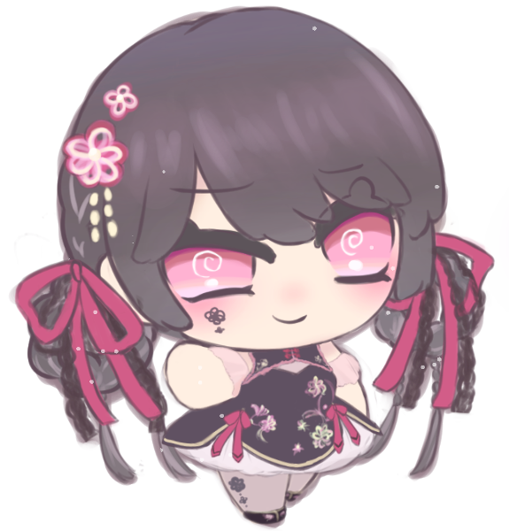
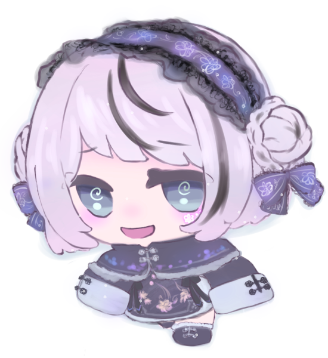
「可愛いは正義って言葉、あたしだーい好き♡」「らむ達の方が可愛いって事だもんね」
二人組のアイドル兼晒し系配信者。黒い方が「あみぃ」、白い方が「らむね」。共に15歳。
絵に描いたようなクソガキ。若さゆえに恐れ知らず。
普段は暴露配信をして日銭を稼いでおり、ファンサービスの一環でアイドルをしている。
ネットの一部では有名。ファン達は、彼女が好き放題暴れる姿にカタルシスを感じたり、アンチのような立場のプロレスを楽しんだり、保護者のようなスタンスで見守ったりしている。
らみぃどらいぶ！（らみぃどらいぶ🚔らみどら）
「人生って最高！あたし達は最強！」
『無敵』になりたい2人組を優しく見守る、現在進行系黒歴史クソガキアイドルグループ。
アイドル専業ではなく、晒し系配信者としての活動がメイン。
その為、芸能事務所には所属しておらず、衣装やヘアメイクはメンバー自らが行っている。楽曲はネットのクリエイターらに自ら依頼して作成してもらっている。
インターネット発らしいアップテンポな曲調と、世間知らずの10代だからこそ歌える強気すぎる(痛い)歌詞が特徴。
ただ、楽曲作成の依頼先がアイドルソングに慣れておらず、ダンスと並行して歌う事を前提としていない難易度である事から、ライブ中は基本的に被せ(声付きの音源をBGMに流す)に頼っている。
その代わり、ファンへの煽りやコール＆レスポンス、ヘドバンやモッシュの指示によって、最終的に謎の一体感があるステージを作り出している。
“ミスター・オーメン” オーメン相良
 「まだ、『アイドル』を諦めていないのだろう？」
「まだ、『アイドル』を諦めていないのだろう？」
支部長兼社長兼プロデューサー。年齢不詳。
顔に仮面をつけており、大変胡散臭い。会話も通じない。仮面は感情に合わせて変化する。
過去の経歴は不明だが、プロデューサーとしての手腕はピカイチと言われている。滅茶苦茶に見える采配を行いながら、不可能である事も可能にする。
『アイドル』を通じ、皆を幸せにしたいという信念を持っている。
紫吹レイジ（しぶき・れいじ）
「君は意外と欲張りさんだね？」
メンズ地下アイドル。22歳。
「EYES ONLY」のメンバー。ディープバイオレット担当。「魅せる」ダンスが得意であり、器量よし、性格よしの理想の推し。
グループのお兄ちゃん的存在。ファン対応も非常に優しく、包容力があるが、一定の距離以上には踏み込ませないミステリアスな男。
しかし、TOであるPC4に対しては多少心を開いている様子で、誘えばプライベートを使ってライブに来てくれる。
EYES ONLY（アイズオンリー🧪アイオン）
「後戻りの許されない旅へ」
禁忌に触れる科学者をモチーフとした、ヴィジュアル系メンズアイドルグループ。
このグループの曲は、単体として聞けばどこか捉えどころのない物ばかりだが、実はとある一つの物語を描き続けている。
コンセプトである「科学者」は、その物語の主人公。彼の研究目的は、「愛」という物の存在証明。
愛を知らぬ彼は、非人道的な研究を行いながらも、自身の知識的欲求を満たす為の旅を続けている。
ファンは、彼の旅に同行する助手であると仮定されているが、研究に関わる事が許されていない。ゆえに、ファンネームは、閲覧のみを許された存在である『EYES(アイズ)』。
なお、結局は地下アイドルであり、考察勢も少ない事から、この要素はほとんどのファンからスルーされている。
このグループが特に評価されているのは、「ダンスパフォーマンス」である。
白衣をモチーフとしたロングコート衣装を纏いながら、アクロバットをしてみせるメンバーや、表情から指先まで管理された「惹きつける」演技をみせるメンバーなど、表現技法も多岐に渡る。
アイドルとしての紫吹レイジ（長い）
在籍期間：8ヶ月ほど
年齢：22歳(大学生)
メンカラ：ディープバイオレット担当
来歴：
アイドルとなったきっかけは、街中でのスカウト。
当時、バイトを辞めた直後であったこと、且つ大学での研究を通じ、舞台そのものに興味があったことから、そのスカウトを受け入れたと語っている。
ステージ上では、繊細な表情管理や、指先までに込められたダンスの表現が好評。
体力自慢というわけではなく、激しいダンスをする事はないが、アイオンの曲に良く似合う仄暗いセクシーさがある。
日々のダンス練習に加えて「こうすればより良く見えるのでは」と研究を重ねているとの事。
他のメンバーの発言から、有名大学の文学部に通っているという事が判明しているが、それ以上のプライベートや経歴については、TOですら知らない。
仮にストーキングしたとしてもいつの間にか撒かれる、ある意味完璧な『アイドル』。
「EYES ONLY」自体が4年ほど続いているグループであり、それぞれのメンバーにファンがいる中での新規メンバーであった事から、加入当初はそこまで人気がなかった。
しかし、最近は「ビジュが良い、なんかエロい」「プライベートの管理がしっかりしてて推せる」と評判となり、じわじわとファンが増えている。
外見：
身長186cm。手足が長く、股下5mくらいある気がする。
黒髪。前髪は長め。やや彫りが深く、二重幅も広い、あまり日本人的ではない容姿。
どこか王子様風な外見と振る舞いから、ファンや一部メンバーからは「レイ様」とも呼ばれている。
内面：
一人称は「僕」、二人称は「君」。
思慮深く、周囲を俯瞰してよく見ている。
加入当初はどこかピリついた雰囲気を持っており、メンバーから怖がられていたが、様々な場面で気を回す姿から「いい人なのかも」と打ち解け、頼りにされるようになった。
別に最年長というわけではないが、しっかり者としてお兄ちゃん扱いされている。新メンバーでありながら、MCを担当する事も多い。
ステージ上や特典会、SNSでのライブ配信などでは、ミステリアスでクールな、Sっぽいキャラ。ナルシスト的な発言もよく見せる。
ただ、決して堅物ではなく、ライブのMCなどでは、ネタの一環で他メンバーをお姫様扱いするなど、キャラを崩さないままふざけた行動を取ることがある。
ファンの顔をすぐに覚える。サービスもよく、服装の細かいところに気づいて褒めたり、チェキ撮影時にさりげなく抱き寄せたりなど、乙女心を躊躇なく刺激する。
“クラッドカルト”
 PC1に取り憑いたレネゲイドビーイング。
PC1に取り憑いたレネゲイドビーイング。
宿主とされた者は、否応なしに人の注目を集める事となる。それ以上の情報は不明。
画像は特に関係のない麗はゅ。ちゃんです、PC5のシナリオロイスから降格して使い所がなくなった立ち絵①です。
クラッドカルトには実体を持たないので、立ち絵はありません。寂しいからはゅを添えます。
■オリジナル設定
・「UGN芸能支部」について
UGNエージェントのみで構成された芸能事務所。
FHのアイドルグループ「ファムファタール」の台頭に対し、危機感を覚えたUGN日本支部が設立した。
表では「UGNプロダクション株式会社」という名で通っている。
社名の由来は、所属タレントに大切にしてほしい3つの言葉（ユニーク、ガッツ、ネクサス）。
FHの後追いで始めた事業であり、設立から1年も経っていない事から、業界でもUGN内でも名が知られていない。
また、UGN内でも謎の組織として扱われている様子で、支部長であり社長でもある”ミスター・オーメン”ことオーメン相良についても、経歴が明かされていない。
・「アイドル活動」について（仮）
フレーバー要素。
シナリオ中にある「ライブ」や、任意のタイミングで判定を行い、描写の説得力が増すかもしれないし増さないかもしれない判定。
通常の戦闘と同じく、達成値もしくは攻撃力で判定を行う。あまり深く考えないで良いです。
また、回数制限のあるエフェクトについては、戦闘とは別カウントとする。
以下、GMが何となくこういうイメージだな～と振り分けてみたけど全然無視してほしい要素。GMも多分無視する。
肉体：ダンス（体力面全般、視覚的な「かわいい」「カッコいい」）
感覚：歌（音楽的センス）
精神：表現力（ラップパート、表情管理など）
社会：愛嬌（物販時の対応など）
・「エゴサーチ」について
フレーバー要素。
常に設置予定の情報項目。
基本的に情報を出す予定はないが、GMの気分次第で情報を出したり出さなかったりするかもしれない。侵蝕値調整にどうぞ。
メインプレイ
シーン0 空を失った日
ライブハウス
GM :
都内某所、ライブハウスにて。アイドルオタクであるキミは、推しグループの登場を最前列で待ちわびていた。
GM :
グループの名は「TOXiC blue」。
GM :
最近ではSNS上で名が広く知られ、テレビでも取り上げられるようになった、今注目の「地下」アイドルグループだ。ワンマンライブであるにも関わらず、ライブハウスを埋める人間の多さが尋常ではない。

天海こよみ :
「…………」 もう何度も来ているのに、そわそわしながら今か今かと待っている
おまいつのオタク :
「あ、こよみちゃん！お疲れ！」
GM :
キミがそうして待っていると、すぐ近くにいた別のオタク……「お前らいつもいるな」、すなわち、『おまいつ』である常連のオタクが話しかけてくる。ちなみに、彼女は白担当推しだ。
天海こよみ :
「あ……。おつかれさま……！」 常連で知った仲なので、警戒することなくそちらを向いて返事をする
おまいつのオタク :
「いえいえ……この間ランチェキ買ったらミツキ出たんだよね。良かったらどうぞ！」
そう言って、チェキを渡してくる。ちなみに、ランチェキというのは、ランダムチェキ……すなわち、誰が出るのかわからないチェキの事だ。
天海こよみ :
「え……！？い、いいの……？」
おまいつのオタク :
「もちろん！」笑顔で頷く
天海こよみ :
「ありがとう……！うれしい……」 小さく笑いながらチェキを両手で受け取る
天海こよみ :
「あの、今こうかんでわたせそうなのないんだけど……今度何かお返しできるように、おぼえておくね」
おまいつのオタク :
「全然大丈夫だよ、若いんだし気にしないで～」笑って手を振る
おまいつのオタク :
「それにしても、ミツキってどんどん良くなってるよね…推し変しかねないな～」
おまいつのオタク :
「……なんてね！！言ったら推しに怒られちゃうから、今のは内緒だけど！！」
天海こよみ :
「ふふっ……してもいいんだよ……」
天海こよみ :
ミツキが褒められるとまるで自分のことのように嬉しくなり、唇が緩む
おまいつのオタク :
「えぇ～、流石にそれはやばいって……」
GM :
談笑しているうちに、ふっと会場の照明が落ち、BGMのボリュームが下がる。開演の合図だ。
おまいつのオタク :
「あっ…！ごめん、またね！」そう言って定位置に帰る
天海こよみ :
「あ……。うん、また……！」
天海こよみ :
貰ったチェキをポシェットの中に急いで入れ、ペンライトを持ってステージの方を見る。
GM :
夜明けを知らせる鐘の音に続き、入場BGMが鳴る。
GM :
青い光に満ちたスモークの向こう側に、カツ、カツ、とブーツのヒールを鳴らしながら、5人の偶像(アイドル)達が並ぶ。
GM :
センターに立つ影……スラっとした体躯に、クラゲのようなシルエットをした特徴的なヘアカット。威風堂々たる立ち姿。その影が、息を吸う。
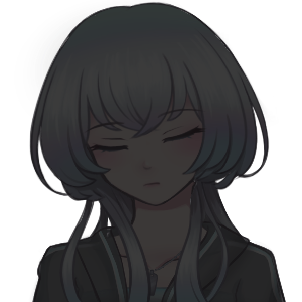
十条ミツキ :
夢なんてきっと醒めてしまうから
キミがいる 明日を共に生きたい
GM :
熱気に満ちたライブハウスを『青』へと誘う、奇跡の歌声。同時にブチ上がるBPM。
GM :
ハートに響く声、体中に満ちる高揚感。
カッと焚かれたハイライトに照らされるキミの推し……十条ミツキが、客席を見てふっと口角を上げる。

十条ミツキ :
「TOXiC blue、最後まで全力でいくよ！！」
天海こよみ :
「……！！」 青で満たされた世界に舞い降りた推しを前に、心臓がドクンと高く鳴って
天海こよみ :
「きゃああああああ！！！ミツキちゃーん！！！！！」
天海こよみ :
儚く華奢な見た目や、さっきまでのか細い声からは想像も出来ないような声で叫ぶ
GM :
キミの声と同時、ワッ、という声と共に彼女のオタクがペンライトを振りかざす。
GM :
今夜もまた、最高のステージが幕を開けたのだった。
GM :
──時間にして1時間。楽しいライブが終わるのはあっという間だ。
ステージのアイドル達は、肩で息を吐きながら、それでも客席に向かって笑顔を見せている。
GM :
だが、地下アイドル……「会える」アイドルの魅力とは、ここで終わるものではない。
白担当 :
「今夜もありがとうございましたぁ！この後の特典会に参加される方は、スタッフの指示に従って、並んでお待ちくださぁい」
GM :
『特典会』。アイドルとチェキを撮ったり、チェキに落書きをしてもらえたり、会話が出来たり……さらには顔を覚えてもらえるかもしれない、奇跡のイベントだ。
GM :
それぞれのアイドルが掃けていく中、ふとミツキが観客席を……いや、間違いなくキミを見る。
十条ミツキ :
「また後でね～」
GM :
その後すぐに目線を離し、手を振りながらステージ脇へと消えていった。
天海こよみ :
「……！」
天海こよみ :
「え、えへ……えへへへ……」 にやけてしまう顔を抑えるように、両手で頬を支えている
天海こよみ :
「…………。はぁ……」 その後、ため息しか出来なくなる
GM :
特典会では、他のメンバーも人気があるが……やはりミツキの列の人数は半端ではない。
GM :
おまいつも居るが、ライブの度に新規のファンが増えているのだ。
GM :
ミツキは、他のファンとも楽し気にチェキを撮り続けている。
GM :
こうして待っているうちに、自分の番がやってきた。
スタッフ :
「次の方、どうぞ～」
天海こよみ :
「は、はい……！」 もう数えきれない位何度も来たのに、少し緊張しながら返事をして進み出す
GM :
ミツキは、そんなキミを見てふっと笑う。
十条ミツキ :
「いらっしゃい。もう、また緊張しちゃって……」
おいで、と手招きをする。
天海こよみ :
「だ、だって、だって……」 ちょこちょこと小さい歩幅で近付いて行って
天海こよみ :
「今日のミツキちゃんも、すっごく良かったから……」
十条ミツキ :
「ほんと？嬉しい……でも、それじゃあ一生こよみは懐いてくれないかもね」そう、すまし顔で呟く
天海こよみ :
「え……！？で、でも……なついてる！こんなだけど、なついてるよ！！」
天海こよみ :
「飼われたいくらいなついてるから……！！」 慌てて変なことを大声で言ってしまう
十条ミツキ :
「……！ふ、ふふ……！！」
GM :
おかしそうにくすくす笑いながら、こよみをぎゅっと抱きしめる。
十条ミツキ :
「冗談だよ、冗談…！こよみ、前よりずっとずっと明るくなったもん…！」
天海こよみ :
「え、あ、あぇ」 抱きしめられて顔が熱くなって
天海こよみ :
「そ、そう……か、な……？」
十条ミツキ :
「うん！今の方がず～っと可愛いよ！大好き！」そう言って、背中をぽんぽんする。……それこそまるで、飼い犬を相手にするかのような甘やかしっぷりだ。
天海こよみ :
「……っ！」
天海こよみ :
「ぼ、ぼくも……」
天海こよみ :
「ぼくも、ミツキちゃんのこと、大好き……！」 上目遣いでミツキの顔を見ながら、嬉しさで震えた声でそう伝える
十条ミツキ :
「……！」その言葉に軽く目を見開いてから、にこっと嬉しそうに笑った。
スタッフ :
「……み、ミツキさ～ん……」カメラを持ったスタッフが、戸惑い気味に声をかける。
十条ミツキ :
「……あ。そ、そうだ、チェキ！今日、どんなポーズにするか決めてきた？」
天海こよみ :
「あ……！え、えっと……！」
天海こよみ :
「えっと、えっと……」
天海こよみ :
「あ、あれ、なんだっけ……。き、きめてたんだけど……」
天海こよみ :
目を伏せて、口籠る。ちゃんと考えてきたのに、ハグして大好きだと言ってくれた嬉しさで完全に頭からすっぽ抜けてしまっていた。
十条ミツキ :
「……もしかして忘れちゃった？」
天海こよみ :
「…………」 しゅんとしながら小さく頷く
十条ミツキ :
「そっか……1現場1枚だもんね、う～～ん……」悩むように目を閉じてから、ぽんと手をたたく。
十条ミツキ :
「……じゃあ、こういうのは？」椅子から立ち上がり、こよみの後ろから抱き着いてカメラに向かう。
天海こよみ :
「え……！？」
天海こよみ :
「あ、え……！？」 あわあわしながら視線が泳ぐ
十条ミツキ :
「はーい、じゃあお願いしまーす」意地悪そうに笑いながら、カメラマンに声をかける。
十条ミツキ :
「はい、チーズ！」そう言いながら、自分の頬をこよみの頬に付けて微笑む。
天海こよみ :
「わ……わ……！」
天海こよみ :
「んへへ……」 緊張や嬉しさで頭がバグってしまったのか、赤面しながらにへっと笑う
GM :
ぱしゃ、とシャッターが切られる。カメラから出てきたチェキは、軽く乾かされた後、ミツキの元に渡る。
十条ミツキ :
「ありがとうございまーす……どう？今ので良かった？」撮ってから聞くのは変だけど、と首を傾げる。
天海こよみ :
「…………」 チェキをジッと見て
天海こよみ :
「く……」
天海こよみ :
「くっついちゃってる……！ほっぺた……！！」 チェキとして写ってるのを見て、興奮度が上がってしまってる
十条ミツキ :
「ふふ、最初はこうするつもりなかったんだけど…なんか、こよみがあんまりにも可愛かったから」笑いながらサインペンを手に取り、凄まじいスピードでサイン、落書き、メッセージを書いていく。
天海こよみ :
「か、かわい……かな……。そうかな……」 嬉しすぎてちょっと俯いて
天海こよみ :
「で、でも、ミツキちゃんの方が……！かわいい……！よ……！！」
ミツキを見上げ、両手で小さく作った拳を胸の前に持ってきながら、力強く言う
十条ミツキ :
「やだ、流石に説得力ないって……今のこよみ、なんかハムスターみたいだもん」くすくすおかしそうに笑いながら、落書きにハムスターの絵を追加した。
天海こよみ :
「そ、そう……？ふふっ……」 かわいい、とハムスターの落書きを見て笑う
十条ミツキ :
「うん……こんな可愛い子が応援してくれてるんだもん。もっと頑張らなきゃって思うよ」
天海こよみ :
「……ミツキちゃん、もう十分がんばってるけど……」
天海こよみ :
「でも、ぼく……おうえんしてる……！これからもずっと、いっぱい……！！」
十条ミツキ :
「嬉しいな…そこまで言うなら一生推してよね」できた！とチェキを差し出しつつ、言葉を続ける
十条ミツキ :
「……アタシ、キミを武道館に連れて行くよ。人生最高の景色を、キミと一緒に見たいんだ……だから」
十条ミツキ :
「これからもよろしくね、こよみ」
天海こよみ :
「……！うん……うん……！！」 チェキを受け取り
天海こよみ :
「ぼくもいっしょに見たい……武道館でライブするミツキちゃん……」
天海こよみ :
「だから、あの、えっと……」
天海こよみ :
「まかせて、ぼく、ミツキちゃんのこと、一生推すから……！」
天海こよみ :
「こちらこそ、よ……よろしくおねがいしましゅ……っ！！」 言いたいことに感情が追いついてなくて、最後に噛んでしまってる
十条ミツキ :
「……ふふ……！」こよみの姿に愛しさが溢れたのか。最後に、もう一度強くハグをする。
十条ミツキ :
「うん！……ありがとう、本当に大好きだよ」囁いてから、離れる。
天海こよみ :
「う、うん……うん……！！」 こくこくと頷いて
天海こよみ :
「じゃ、じゃあ、またね、ミツキちゃん……！また、来るね……！！」
天海こよみ :
名残り惜しいが、次の順番の人の邪魔にならないように離れて行く。最後まで小さく手を振りながら。
十条ミツキ :
そんなキミに、ミツキもまた小さく手を振り返す。
GM :
これが、キミがミツキと送った『非日常』に近い『日常』の日々であった。
天海家 こよみの部屋
GM :
……それから、数か月経った頃。
GM :
こよみがSNSを開くと……ドクアオで繋がったフォロワーたちの様子が騒然としている姿が見られる。皆、主語ははっきりとさせないが……明らかに、様子がおかしい。
TLのオタクたち :
「どういうこと？」「ミツキが？」「嘘」
天海こよみ :
「……？」 自室のベッドに寝転がりながら、スマホをたぷたぷしてSNSで情報を探す
GM :
そうしていると、キミはあるネットの記事にたどり着く。記事の見出しはこうだ。
GM :
『TOXiC blue・十条ミツキ 絶対的エースの熱愛疑惑浮上！』
GM :
……そう。マスコミによって、キミの推し……十条ミツキの熱愛報道が暴露されたのだ。
天海こよみ :
「…………」
天海こよみ :
「え………………？」
天海こよみ :
「え、なに、え……？」
天海こよみ :
記事の見出しが目に入った瞬間、思考が固まってしまう。
天海こよみ :
数秒間硬直した体を動かしたのは、"ミツキちゃんがそんなことするわけない"という感情。
天海こよみ :
「うそでしょ……？で、でたらめ……書かないで……！！」
天海こよみ :
こんな嘘を書いて報道してることに怒りを覚えながら、一応ネットの記事を詳しく読みます。
GM :
では。
GM :
記事の内容は簡潔だった。ミツキが熱愛をした、ただその『事実』が、大量の証拠写真と共にあった。
GM :
証拠写真は、残酷なほどに画質が良かった。彼女は、年上らしい男性の手を引き、歓楽街を歩いている。
GM :
彼女は帽子や眼鏡など、変装すらしていない。
GM :
……思えば、演者の彼女はいつも堂々としていた。パフォーマンス中はもちろん、特典会中だって、凛とした態度を崩す事はなかった。
GM :
だが、写真の中の彼女は違った。
GM :
触れれば壊れてしまいそうな、繊細さのある笑み。
口元はきゅ、と結ばれ、まるで緊張しているようにも見える。
GM :
『十条ミツキ』と同じ顔で、知らない顔。
GM :
彼女は、男と共に、ホテルの中へと消えて行った。
GM :
……記事は、「本件について、事務所からの回答は未だにない」という言葉で締めくくられていた。
天海こよみ :
「…………………………………」
天海こよみ :
鮮明に映ってる数々の証拠写真が、目に飛び込んできて。
天海こよみ :
自分の知らない十条ミツキがそこにいたという事実が、目の奥を突き抜けて頭の中を抉るように襲い掛かる。
天海こよみ :
「うそ……」
天海こよみ :
彼女が消えていった建物は初めて見るし、そういった知識にまだ詳しいわけではない。
天海こよみ :
でも、そこでどんなことをするのかは、何となくだが分かっている。
天海こよみ :
「そんなわけない……」
天海こよみ :
「ミツキちゃんが……そんなこと……」
天海こよみ :
視界の端に、いつの間にか手から滑り落ちたスマホの画面が見える。SNSのタイムラインがずっと更新され続けている。
天海こよみ :
「…………」
天海こよみ :
震える手で、スマホを持つ。細い人差し指で画面をタップする。
天海こよみ :
そして、一言だけメッセージを投稿する。
天海こよみ :
『ぼくはミツキちゃんのこと、しんじてる』
天海こよみ :
スマホをまたベッドに落とすと、体から力が抜けたように枕に顔を埋める。
天海こよみ :
そのまま、不安に押しつぶされるようにしながら動かなくなってしまった。
GM :
……こよみの投稿は、さらに増えていく投稿たちに押し流されていく。
GM :
公開された写真があまりに衝撃的だったのか。世間的に見たら小さいはずの火種が、深夜のSNSではあっという間に燃え広がった。
GM :
ファンによる戸惑いの声は勿論のこと、外野からの「『偶像』名乗ってる癖に生々しいとこ見せんなよ」「プロ意識が無いから地下なんだよね」「誰？(笑)」といった冷たい声も多く飛んだ。
GM :
地下の中では人気だが、日常的に見る事はない「TOXiC blue」の名は、トレンド欄ではあまりにもよく目立った。
GM :
炎上から半日経った頃、TOXiC blueの公式アカウントより謝罪文が公開された。
GM :
「この度は所属メンバーである『十条ミツキ』の件で、世間を騒がせてしまい申し訳ございません。報道の内容は事実です」「事務所は、かねてより十条より恋人ができた事について本人より報告を受けており、卒業に向けて話を進めていました。その為、このような形で情報が公開されてしまった事は想定外でした。対応が遅れており、大変申し訳ございません」
GM :
「十条ミツキ」の公式アカウントからは、「ファンを裏切るような真似をしてしまい、申し訳ございません。」という、短い謝罪文が上がった後、沈黙。
GM :
後日、彼女の卒業ライブを行う事が決定した。
GM :
……ここで、こよみさんに選択して欲しい事があります。
今後の展開には影響はないので、あまり深く考えなくても大丈夫です。
GM :
卒業ライブに行きますか？
天海こよみ :
いき…い、いき……
天海こよみ :
行きます…！！
GM :
了解です。では、話を進めます。
ライブハウス
GM :
卒業公演、当日。運営が期待したほどの動員が無かったのか、普段よりも大きいキャパシティのホールの全てが埋まる事はなかった。
GM :
ミツキのファンであったオタク連中の姿も、ほとんど見られない。皆、他界※してしまったのだろうか。
※オタクをやめる事。担降り。
天海こよみ :
「……人、少ないな……」
天海こよみ :
普段なら、おまいつのオタク達に「こよみちゃん来たよ！」と迎えられて、始まるまで楽しくお話してたのに。
天海こよみ :
今日はとぼとぼと一人で歩きながら、しかし出来る限り最前の方へと向かって行く。
GM :
以前声をかけてくれた、白担当推しの子もいない。これまでになく、寂しい現場だった。
GM :
……だが、いつもより閑散とした現場であっても、TOXiC blueのパフォーマンスは素晴らしい物だった。
GM :
肝心のミツキは、やはり元気のない様子であったが、他のメンバー達は彼女を支えるようにして歌い、踊る。
GM :
何としてでも、ミツキの最後のステージを良いものにしたい……そのような、願いが籠っているようだった。
GM :
MCで卒業について触れるメンバーの言葉も、思いのほか優しかった。
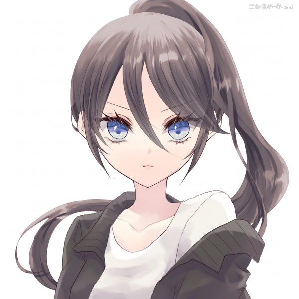
青担当 :
「私達からも、みんなに謝らなきゃいけないんだ。ミツキに彼氏が出来たって話、ちょっと前に聞いてて…」

白担当 :
「わたしは最初、アイドル一生続けるって言ってた癖に何考えてんの、わたしと一緒に武道館立つより大事なの？って…でもぉ…」

黄担当 :
「彼氏持ちでもいいじゃん！って引き止めたのはウチらだったんだ。……だから、こうなったのはミツキだけのせいじゃない」

紫担当 :
「……でも、ミツキは真面目で意地っ張りだから…」
十条ミツキ :
「……！…」ミツキはメンバーを見て何か言おうとする……が、そのまま口を閉ざし、メンバーに背を向ける。
GM :
その姿を、メンバーは不安そうな目で見ていた。
GM :
ミツキはステージの縁に立ち、会場を見渡す。
十条ミツキ :
「このような形で裏切る事になり……申し訳ありませんでした。メンバーや運営、スタッフさん、アタシのファンにも、他のみんなのファンにも、本当に嫌な思いをさせました」
十条ミツキ :
「今日まで、アタシをアイドルで居させてくれてありがとうございました。……幸せ、でした」
GM :
そう言って、客席に向かって頭を下げる。
天海こよみ :
「……ミツキちゃ……ん……」
天海こよみ :
────ずっと、最後まで信じていた。
天海こよみ :
全て嘘で、何か自分には想像も出来ないような複雑な事情があって。
天海こよみ :
卒業ライブとは言っているけど、ミツキちゃんが本当のことを教えてくれるのだと思っていた。
天海こよみ :
でも、目の前の現実はそうではなくて。誰も事実を否定しない、ありのままの真実だけが流れて行く。
天海こよみ :
「…………っ」
天海こよみ :
残酷な現実も嘘偽りない真実も、全てが冷たい刃物のように突き刺してきて……頭の中が真っ白になって何も言うことが出来なかった。
GM :
他のファンも、同じ気持ちなのだろう。まばらながら、拍手の音がして……それも、すぐに消えた
GM :
ミツキは、一度口をきゅっと結んだ後、言葉を続ける。
十条ミツキ :
「……最後の曲です。『Drop in the Moon』」
GM :
……綺麗な歌声だった。音を外さず、いつもよりも丁寧に歌っている。だが、『それだけ』だ。魂が震えない、義務のような歌い方だ。
GM :
背後で、他のファンのひそひそ話が聞こえる。
ファンの声 :
「ねえ……ミツキ、態度悪すぎない？あんな迷惑かけた癖に」
ファンの声 :
「思った。今日で終わりだからいいけど……辞めてくれて正解だったかもね」
GM :
……そして迎える、最後の特典会。
GM :
演者から余計な発言が出ないよう、管理する為か。チェキの落書きは会場で行わず、希望する者には後日郵送するという形を取るようだ。
GM :
すなわち、接触できる時間はチェキが撮られている間のほんの数十秒。……気づいた時には、『推し』はあなたの目の前で待っていた。
十条ミツキ :
「……こよみ…」
天海こよみ :
「……ミツキちゃん……」 よたよたと、倒れそうになりそうな力のない足取りで近付いていく
十条ミツキ :
「……っ…」それを支えようと手が動きかけるが……その場で黙ってこよみが来るのを待つ
天海こよみ :
「……ほ、ほんとに……」
天海こよみ :
「ほんとに、やめちゃうの……？アイドル……」 最後なのに目を合わせられず、俯きながら
十条ミツキ :
「……」沈黙。これが肯定を示している事は…幼いキミであっても理解する事ができるだろう。
天海こよみ :
「そっか……。そ、そう……なんだよね……」
天海こよみ :
「……チェキ……とる……？」
十条ミツキ :
「……ごめん。…そう、だね」
十条ミツキ :
首を横に振り、小さく微笑む。
十条ミツキ :
「今日は……どうするか、決めてきた？」
天海こよみ :
「……あの……。何ヵ月か前の、あのポーズ……好きだったから……」
天海こよみ :
「ほっぺた、くっつけるやつ……」
十条ミツキ :
「……わかった。あれ、しようか」席を立ち、こよみを後ろから抱きしめる。
十条ミツキ :
だが、どこか以前よりもよそよそしい。まるで、触れる事を拒否しているような。
十条ミツキ :
出会ったばかりの頃より、距離を感じる。
天海こよみ :
「…………っ」
天海こよみ :
「だめ……」
天海こよみ :
そう一言、小さく呟くと。
天海こよみ :
抱きしめるミツキの腕を振り払って、彼女から離れてしまう。
十条ミツキ :
「……！」小さく、驚いたように体を動かし…素直に、離れる。
十条ミツキ :
「……どうしたの？」
天海こよみ :
「…………」 ずっと目を逸らし、俯かせていた顔を上げる。その頬には、涙が伝っていた。
天海こよみ :
「ご、ごめん……ぼく……やっぱり……」
天海こよみ :
……このチェキを撮ったら、本当に全部終わってしまうような気がしたから。
天海こよみ :
「ごめん……ごめんなさい……っ！」
天海こよみ :
────最後までちゃんとしたファンでいられなくて。
天海こよみ :
か細い声ではそこまで言葉は続けられず、泣きながらその場から逃げ出してしまう。
十条ミツキ :
「……！！こよみっ……」声を上げかける……が。そのまま、手を降ろす。
GM :
……これが、キミの幸せな『非日常』の終わり。ミツキとの、最後の記憶だった。
GM :
シーンエンド
シーン1 鮮烈エンカウント
天海こよみ :
1d10+34(1D10+34) ＞ 1[1]+34 ＞ 35
住宅街
GM :
卒業公演から、1年が経った頃。
GM :
ミツキの起こした不祥事、それに伴う卒業がきっかけとなり、あなたは、引きこもり生活に逆戻りしていた。
GM :
たまの散歩だけが、外界と接する唯一の機会だ。
GM :
暗いだけの日々。青空なんて嘘っぱちだ。
GM :
それでも、一か月に一回を目安に、キミは外に出る日を設けていた。
GM :
だが。最近は、そう悪い事ばかりでもない………気が、する。
GM :
外に出る度に、何やら人から親切にされるようになったのだ。
GM :
例えば、買い物をした時におまけを貰えたり、近所の子ども達に遊んでほしいとせがまれたり。
GM :
これは全く嬉しくないだろうが、ナンパされる頻度も妙に高い。
GM :
対象は老若男女、動物すら問わない。
GM :
今だって、キミの足元には、懐いてきた野良猫がすりすりと近づいてきている。
天海こよみ :
「あ……また……」
天海こよみ :
「よしよし……かわいいね……」
天海こよみ :
屈んで、足下にすり寄ってきた猫を優しく撫でる。
天海こよみ :
最近、何かがおかしいことは自覚出来てきたが、考えてもさっぱり分からない。
天海こよみ :
ナンパしてくる知らない男の人がみんなこういう猫ちゃんだったらいいのに……なんて思って現実逃避しながら野良猫を可愛がっている。
GM :
猫は喉をゴロゴロと鳴らしながら、キミに甘える。
GM :
この小さな触れ合いをちょっとした思い出に、キミはこのまま帰るはずだった。が……
GM :
ふと、背筋をなぞられたようなゾワッとした感覚と共に、世界から音が失われる。
GM :
それと同時に、先程まで甘えてきていた足元の猫がぱたりと横になってしまった。
天海こよみ :
「……え？ね、ねこちゃん……？どうしたの……？」
天海こよみ :
突然横になったことに戸惑いながら、猫の身体を手でゆする。
GM :
触れてみると、温もりを感じる。息はあるようだが、意識を失っている。
GM :
キミは、後にこの力の名を知る。「ワーディング」をかけられたのだ。
天海こよみ :
「…………」 寝てるだけ？なことにとりあえず安心しつつも
天海こよみ :
「……か、帰ろう……」
天海こよみ :
今さっき背筋を襲った嫌な感覚から逃げるように、その場から離れようと立ち上がる。
GM :
その時だった。
？？？ :
「あ、いたいたぁ」
GM :
緊張感のない声と共に、二人の少女が住宅の屋根から飛び降りてくる。
GM :
片方は、どこか快活そうに見える少女だ。黒髪を三つ編みにし、輪にするようにして留めた特徴的な髪型をしており、どこか勝気な表情をしている。
GM :
もう片方は、前者と比較的おとなしそうにも見える少女。白髪で、ボブヘアの横に羊の角を彷彿とさせるお団子をつけている。大人しそうではあるが、目元はにやにやと細められている。
GM :
両者ともに、私服と言うには個性的すぎる、チャイナ風のロリィタ服を身に纏っていた。
GM :
彼女らの名は、"らみぃどらいぶ！"。ここ一年半ほどで名が知られ始めた、2人組の晒し系配信者。最近はアイドル活動も始めたらしい。
GM :
GMとしての連絡ですが、キミは彼女たちを知っていても知らなくても問題ありません。
GM :
黒髪の少女の方が、こよみの姿をじろじろ見てから、困ったように首を傾げる。
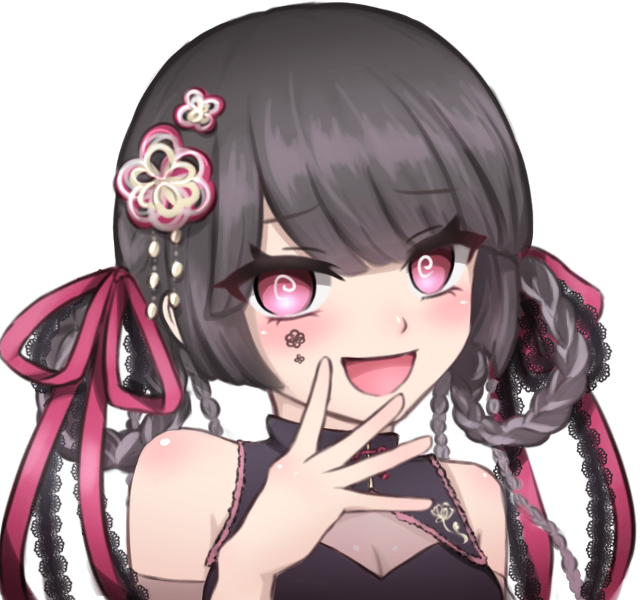
あみぃ :
「はにゃ？本当にこの子なの？」
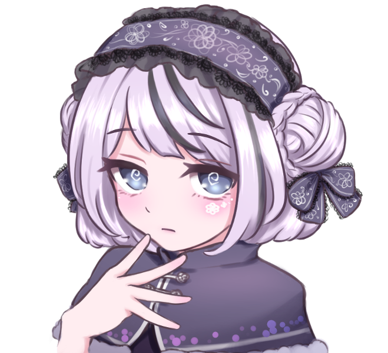
らむね :
「うーん、私もちょっと自信ないかも…それっぽいオーラを全く感じないもの」
GM :
二人は困ったようにうんうん唸り始める。
天海こよみ :
「え……？あ、え……？」
天海こよみ :
「あなた、達……配信者の……」
天海こよみ :
見覚えがある。昔、ネットのどこかで見たことがある。一年前からネット断ちしているから、最近のアイドル活動については把握出来ていないが……。
天海こよみ :
「……って、いうか。あの、いま……屋根の上から飛びおりて……？」 常人ではない身体能力に驚いて、二人と家屋の屋根を交互に見る
あみぃ :
「え、マジで！あたしたちのことわかるの！？」
GM :
目を輝かせながら、キミに尋ねる。屋根の上から飛び降りた云々については耳に入っていないようだ。
天海こよみ :
「え？う、うん……一応……」 勢いに押されて答えてしまう
天海こよみ :
「なんか、あの……その……」
天海こよみ :
「ちょっと、こ……はでな感じの、動画とうこうしてる……あみぃちゃんと、らむねちゃん……？」 怖い感じの、と言いかけて言葉を選んだ
らむね :
「わ……わぁ……！そ、そう、そうなの！！嬉しい、知ってくれているわ！！」
あみぃ :
「派手だって！やば、マジで嬉しいねこういうの！！」ご満悦な様子で、自分たちがしに来た事を忘れているようだ。
天海こよみ :
「え、えっと……」
天海こよみ :
「……あ。そっか、じゃあさっき飛びおりたのも動画の……なにか？ワイヤーで吊るしたりして……」
あみぃ :
「………あ」
らむね :
「そうだったわ、すっかり忘れてた……やるわね、あなた。話術のプロよ」
あみぃ :
「申し訳ないけど、今日は動画じゃないんだよね。端的に言うと……」
あみぃ :
「あんたを、攫いに来たの」
天海こよみ :
「へ……？」 きょとんとして
天海こよみ :
「…………」
天海こよみ :
「あっ。な……ナンパ……？そういう、せりふ……？」 最近ナンパされることが多いせいでそんな風に捉えてしまう
らむね :
「……あら。随分飛躍した考え方をお持ちなのね」
らむね :
「それなら……そうね。もう、こうするしかないわよね」
らむね :
そう呟くと、少し後ろに下がる。
らむね :
「『この後』も予定があるわけだし、手早く済ませてしまいましょうか」
天海こよみ :
「……？」
らむね :
らむねがバッと腕を広げる。すると、同時に、萌え袖のような衣装から爪が伸びる。
らむね :
銀の金属光沢を放つ凶悪な爪……「シザーハンズ」という洋画に出てくる怪人を彷彿とさせられる姿。
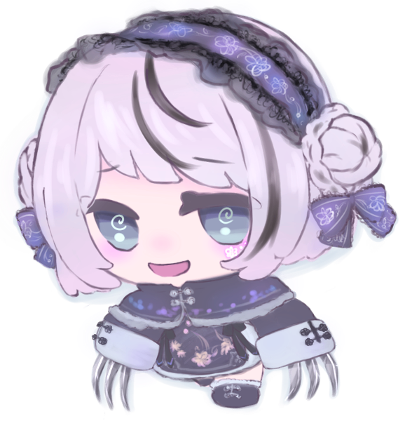
らむね :
しかし、彼女は心優しいエドワードではない。
らむね :
「悪いけど……一旦、くたばってちょうだいッ！」
GM :
小さく息を吐き、次の瞬間には肉薄。
GM :
キミの視界いっぱいに広がるフリルと、銀の煌めき。
天海こよみ :
「え……！？」
天海こよみ :
袖から伸びた爪。一瞬で迫る少女。眼前で光る鈍い銀色。
天海こよみ :
全てに対して理解が追いつかず、喉から漏れ出たのは間抜けな声だけ。
天海こよみ :
ただ、それでも僅かに働いた脳が危険を感じ取って、
天海こよみ :
────死ぬ？
天海こよみ :
そう命の危機を鮮烈に伝えていた。
GM :
妙に長い一瞬の後。
GM :
ガキンッ！
GM :
金属音が響く。キミにその刃が届く事はなかった。
GM :
目の前に割って入った影が、その一撃を受け止めたのだ。
GM :
虹色に反射する、半円状の透明な盾を構える少女。

十条ミツキ :
「キミ！大丈夫！？」
GM :
この声を、振り返ったその顔を、あなたは知っている。
GM :
十条ミツキ──あなたの最推し。トレードマークのクラゲへアじゃない、知らない彼女が、そこに居た。
天海こよみ :
「……！？」
天海こよみ :
心臓が強く鼓動する。直前に、命の危機を感じた時よりも激しく。
天海こよみ :
強張った身体から一気に力が抜けて、ぺたんとその場にへたり込んで、
天海こよみ :
「ミツキ……ちゃん……？」
天海こよみ :
見た目のイメージが違ってもすぐに分かった推しの名を、呟くように呼んだ。
十条ミツキ :
「……ッ！！こよみ……！」
GM :
驚いたように、名前を呼び返す。が、久しぶりの再会にしては登場人物が多すぎる。
らむね :
「……十条ミツキ……！？」
あみぃ :
「へえ、炎上した『元』アイドル様じゃん！『今』動けるって事は……あんたもあたしらと『同類』だったんだ！」
十条ミツキ :
「キミ達と同類か……それは……質の悪い冗談だな！！」
GM :
ミツキが盾を薙ぐように振り払うと、らむねは後方に向かって宙返りをして、体勢を整える。
十条ミツキ :
「チッ……こよみ、怪我は！？」
天海こよみ :
「え？え？だ、だいじょうぶ……」
十条ミツキ :
「……そう。それなら良かった……」小さく息を吐く
天海こよみ :
「…………。あ、あの、ミツキちゃ、えっと……」
天海こよみ :
「どういう……こと？な、なんであの人達が、爪……み、ミツキちゃんがいて……っ」 パニックになりかけて、言葉も全く纏まっていない
十条ミツキ :
「大丈夫、安心して。ほら、立てる……？今のうちに、ここから……」
GM :
ミツキが君を逃がそうとする。が、そう上手くは行かない。
あみぃ :
「はにゃ～、もっとイージーだと思ってたんだけど……しょうがないなぁ」
あみぃ :
あみぃが、手に持っていた傘を開き、軸に触れる。
あみぃ :
すると、シンプルであった傘に炎が走り、金の模様が輝く。

十条ミツキ :
「……ッ！何を……逃げて、こよみ！キミが居ていい場所じゃない！」
あみぃ :
「いいや、消えるべきはあんただよ！十条ミツキ！」
GM :
傘があみぃによって放られる。軸が駒のように回転し、地面を削り取りながらミツキに迫る。
十条ミツキ :
「く…ッ！」
GM :
ミツキが指を鳴らすと、彼女の体から抜け出すようにして2匹のクラゲが飛び出し、攻撃を防ぐ。が、攻撃を受けた途端に弾け、消えてしまった。
天海こよみ :
「……！？」
天海こよみ :
「み、ミツキちゃ……っ！」
天海こよみ :
未だに何が起きているのか、頭の理解が追いついていない。
天海こよみ :
だから、ミツキに言われた通りにこの場から早く逃げるべきなのだろう。
天海こよみ :
「あ……ぅ……」
天海こよみ :
が、しかし。
天海こよみ :
訳が分からなくても、命の危機というのは感じ取れてしまっている。
天海こよみ :
「ご、ごめ……ミツキちゃ……ん……。た、立て……な……」
天海こよみ :
怯えた目でミツキを見上げながら、足が竦んで動けなくなっていることを訴える。
十条ミツキ :
「……っ！」
GM :
ミツキはその様子を見て、逃がす事を諦めたのか。こよみを守るようにして、その場に仁王立ちする。
あみぃ :
「ふーん、やるじゃん？」
GM :
手元に戻った傘を差し、くるりと回って微笑む。
らむね :
「でも……結局は時間の問題よねぇ。私達、最強ですもの」
GM :
同じく微笑んでから、爪を構える。また、仕掛けて来るのだろう。
GM :
ミツキのバリアは堅牢だが、2対1である現状を打破する事は困難だ……
GM :
シーン終了。
シーン2 新星ドリーミング
GM :
PC2は登場侵蝕をお願いします。PC1はシーン継続という事で登場侵蝕免除で。
虹之元ユメ :
1d10+34(1D10+34) ＞ 7[7]+34 ＞ 41
住宅街
GM :
ある、青空が綺麗な昼の事。
GM :
キミは、何とも無しに日常生活を送っていた。暑すぎもせず、寒すぎもせず。ちょうどよい感じの一日だった。
GM :
だが、すぐ身近でワーディングが使用された気配を感じる。キミの非日常が始まった。
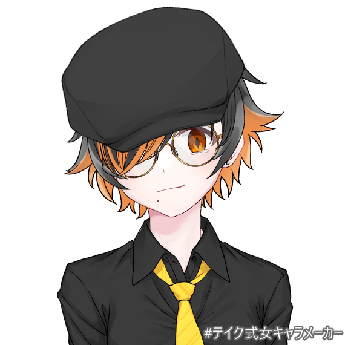
虹之元ユメ :
「上をむ～いて～、あ～るｋ……っ！？」
虹之元ユメ :
呑気に歌っていたユメは異様な雰囲気……ワーディングの気配を察知する。
虹之元ユメ :
「こんな白昼堂々とですか！？ と、とりあえず急行！！」キョロキョロと周りを見渡し、ワーディングの展開された地点へと急いで向かう
GM :
住宅街を駆け抜けたその先では、3名のオーヴァードによる戦いが始まっていた。いや、戦いと言うにはまだ序の口の段階のようだが。どうやら、華ロリの少女2名と銀髪の少女の、2:1となっているらしい。
GM :
銀髪の少女の背後には、守られている一般人らしい姿がある。恐らく、彼女はUGN側の人間なのだろう。
虹之元ユメ :
「ッ、2対1とか……！！」
虹之元ユメ :
直感的に着くべき立場を理解したユメはギターケースからギターを取り出した。
虹之元ユメ :
「ちょっと、不公平じゃないです……か！！」
虹之元ユメ :
しなやかな指が弦を弾く。
掻き鳴らされたギターから発生した音はミツキ達の耳へと素早く届いた。
天海こよみ :
「っ！？！？」 ビクッと肩を震わせて、ユメの方を振り向く
虹之元ユメ :
その音色は人間の身にはただの音。しかし、ユメが聞かせたい相手へと届けばレネゲイドを励起させるファイトソングへと変貌する。
虹之元ユメ :
その証拠に、防戦一方のはずだったミツキには身体の奥から湧き上がってくる力を感じているはずだ。
十条ミツキ :
「……！！こ、これって……！！」
GM :
余裕ができたのか、ユメの姿を視認する。
十条ミツキ :
「………ありがとう！！」
GM :
ミツキは、盾を手に持って構え、あみぃとらむねに突貫を仕掛ける。攻撃する側に立つ事は慣れていないのか、そこまでの威力はない。
GM :
が、油断しきった少女2名には、この展開は予想外だったようで。
GM :
ガツンッと痛そうな音とともに、あみぃとらむねは後方へと弾かれた。
あみぃ :
「はにゃ～！？」
らむね :
「う、うぅ～…な、なにこれ……！」
GM :
2名はしりもちをつき、闖入者……ユメの事を睨む。
天海こよみ :
「す、ごい……」 呆然と言葉が漏れる
虹之元ユメ :
「─────♪♪」
虹之元ユメ :
ユメは軽快なビートを刻み続ける。2人が睨め付けたユメの瞳は爛々と輝き、太陽を思わせる熱が籠っていた。
虹之元ユメ :
「……まだライブは続きそうですか？」そう呟いて、橙色の瞳が2人に向けられた。
らむね :
「むぅ……！」
あみぃ :
「ちぃ……やなやつ！！！」
GM :
二人は苛立ちを隠さない。だが、予想外の事が立て続けに起きたからか、戦意も喪失した様子だ。
GM :
と、ふとあみぃが目を見開く。
あみぃ :
「……ってやば、時間がやばい！もっとすぐ終わると思ってたのに……！」
らむね :
「……そうね。今日のところは一旦退きましょう」
あみぃ :
「メイクとヘアメは『魔法』じゃ直せないからね……」
GM :
そう言って、二人はその場から跳躍。民家の屋根に飛び乗る。
あみぃ :
「また来るね、こよみちゃん？」
らむね :
「そこのオレンジのあなたと十条ミツキ！今度絶対ぶちのめすから！」
GM :
そう言い捨て、二人は<瞬間退場>を使用。戦線を離脱します。
天海こよみ :
「行っちゃっ……た？あれ、どうして、ぼくの名前……」
虹之元ユメ :
「アンコールを望むならいつでも聞かせてあげますよ……っと、お二人とも大丈夫ですか？」
天海こよみ :
「え、えっと……」 ミツキを見上げる、怪我をしていないかと不安そうに
十条ミツキ :
「……助かりました。UGNの方……ですよね？」こよみを安心させるように、頭を撫でる。1年前のような、自然な仕草で。見たところ、ユメのおかげで大きな外傷はなさそうだ。
天海こよみ :
「…………」 大人しく頭を撫でられてる
虹之元ユメ :
「はい、"涙の旋律"です！ お二人が無事で何よりです」軽く微笑み、細めた瞳から一筋の涙が伝う。
虹之元ユメ :
「……ていうか、もしかして……」 ミツキの顔をマジマジと見つめる
十条ミツキ :
「……？あの……何か……」コードネームを名乗ろうとしたが、その視線に思わず固まる。
虹之元ユメ :
「あ、あの……十条ミツキさん、ですか！？ あのあの、さっきの2人……もしかしたららみぃどらいぶ！っぽい2人がそう仰っていたので、さっきはゴタついてたので気づかなかったのですが……！」 あたふたと、そして興奮した様子で捲し立てる
十条ミツキ :
「あ……あ、えっと……よくご存知で……」オロオロしながら返すが、ちらっとこよみを見て、ため息を吐く。落ち着きを取り戻し、ユメに向き直った。
十条ミツキ :
「……うん。アタシは十条ミツキ……コードネームは"クリスタルホロウ"。助けてくれてありがとう」そう、頭を下げる。
天海こよみ :
「くりすたるほろう……？」 不思議そうに二人を見てる
虹之元ユメ :
「は、はいっ！ 助けられて何よりです！」 ミツキとこよみちゃんを見ながらニコニコと微笑む
虹之元ユメ :
「え～っと……君も大丈夫、かな？ 怪我とかはしてないですか？」 一般人らしきこよみちゃんを過保護気味に眺めて
天海こよみ :
「あ……う、うん……。だいじょうぶ……」 まだへたり込んだままユメを見上げて
天海こよみ :
「でも、あの……その……。なんだか……よく分からなくて……」
天海こよみ :
「ぼく、もしかして夢を見てるのかな……。ミツキちゃんもいるし……」
十条ミツキ :
「……こよみ……」
十条ミツキ :
「……ううん。これは現実だよ。でも、これを説明するのには少し時間がいるから……」
十条ミツキ :
「……そうだ、今こよみは何していたの？おばあちゃんは？」
天海こよみ :
「え？今は……おさんぽしてたよ……」
天海こよみ :
「おばあちゃんは……おうちでまってると思う……」
十条ミツキ :
「そうか……」目を閉じ、しばらく考えた後に、再度目を開ける。
十条ミツキ :
「……わかった。でも、おうちに帰る前に……少しだけ、時間をちょうだい」
十条ミツキ :
「"涙の旋律"、キミも来てほしい。アタシの支部、すぐそこにあるから……色々、話さなきゃ」
虹之元ユメ :
「は、はい。お供します！」
天海こよみ :
「…………」 まだ混乱してるのか、少し困ったように俯いて
天海こよみ :
「……ん……」
天海こよみ :
おそるおそる、ミツキに手を伸ばす。
十条ミツキ :
「……！」
GM :
少し驚いたような顔をしてから…こよみの手を取り、優しく引き上げて立たせる。
天海こよみ :
「ん……しょ……」 竦んでしまっていた足はいつの間にか直り、ゆっくりと立ち上がる
天海こよみ :
「…………」 それから自分の頬を軽くつねると、じんわりと痛みが広がるのを感じる
天海こよみ :
「ほんとに……夢じゃないんだ……」
十条ミツキ :
「……」その姿を見て、少しだけ申し訳なさそうな顔をしてから、二人を先導するようにして歩き出す。
天海こよみ :
「あ……」
天海こよみ :
「ま……まって……！！」 声を僅かに張り上げてミツキを止める
十条ミツキ :
「……！な……何……？」恐る恐る振り返る
天海こよみ :
「えっと……えっとね……」
天海こよみ :
両手の指を太ももの辺りで小さく擦り合わせながら、
天海こよみ :
「あ、あのね……！ミツキちゃん……」
天海こよみ :
顔を上げ、ミツキの目を少しだけ不安そうに見ながら、
天海こよみ :
「あ……ありがとう……！た、たすけて……くれて……っ」 声を震わせながらも、そう伝える
十条ミツキ :
「……！」その言葉に、小さく目を見開く。
十条ミツキ :
「……ううん。当然の事だよ」
GM :
そう返す。何気ない風であるが……少しだけ、笑っているように見えた。
天海こよみ :
「……！」 何気ない小さなものでも、久しぶりに見たミツキの笑顔に心臓が強く跳ねて
天海こよみ :
「う、うん……！」 自然と、口元に笑みが広がる
天海こよみ :
「あ……あと、お姉さんも……」 ユメの方を向いて
天海こよみ :
「メロディ……ティア……？」
天海こよみ :
「メロさん……？」 コードネームしか聞いてないのでそっちが名前だと思ってる
虹之元ユメ :
「あはっ、可愛くなっちゃった！」クスクスと笑ってみせる
虹之元ユメ :
「……ふふ。うん、私の名前は夏橙涙美っていうんです！ よろしくね、こよみちゃん……でしたっけ？」
天海こよみ :
「う、うん。天海こよみ……です」
天海こよみ :
「あの、まだよく分からないけど。こ、こちらこそ、よろしくね……涙美……ちゃん」
優しそうな雰囲気を感じてるのか、警戒心はそれほどでもない。小さく笑みを見せる
虹之元ユメ :
「はいっ！ 仲良くしましょうね！」 こよみちゃんの目線に合わせる様に小さく屈んで、手を差し出す。
天海こよみ :
「…………」 コクコクコクと小さく何度も頷いて、差し出された手を握る
天海こよみ :
ユメちゃんにロイスを取ります！〇誠意/不安で（まだ何も分からないからNの不安よりではあるけど助けてくれたしP感情）
あとミツキちゃんのロイス感情を憧憬/〇不信感→憧憬/〇不安に変更します
system :
[ 天海こよみ ] ロイス : 3 → 4
虹之元ユメ :
わーい！せっかくだから自分もロイスとろ！
こよみちゃんに〇好奇心/不安で！
system :
[ 虹之元ユメ ] ロイス : 3 → 4
天海こよみ :
「……あ、ご、ごめん……。ついてくね……」
天海こよみ :
握った手を慌てて離し、ミツキの方にちょこちょこと向かって行く。
虹之元ユメ :
「今いきます～！」 ギターをケースにしまい込み、跳ねるような足取りでミツキに追いつく
GM :
ミツキは、そんな二人を見て小さく頷く。
GM :
若干日が傾き始めた、優雅な午後。3人は、ミツキの所属する支部……『UGN芸能支部』へ向かった。
UGN芸能支部
GM :
住宅街から、歩いて15分ほど。
UGN芸能支部は、駅前のオフィスビルのとある階を借りる形で、ひっそりと存在していた。
GM :
オフィスはこじんまりとしつつも、現代的でお洒落な内装となっている。
GM :
事前にミツキが連絡していたのか、奥から事務員らしい少女が近づいてくる。
事務員 :
「あの……十条さん。彼女が、巻き込まれた……？」
十条ミツキ :
「そう。……ワーディングがかかった場所でも意識があったんだ。恐らく、この子も目覚めているから……」
事務員 :
「そうですか……」
GM :
事務員は、こよみの方を向く。
天海こよみ :
「……？」 不安そうに胸元を握っている
事務員 :
「そう怯えなくて大丈夫よ。……採血って、した事ある？あなたの血液……涙や唾液でもいいんだけど、少しだけ提供してほしいの。できる？」
天海こよみ :
「え……？ど、どうして……？ここ、病院なの……？」
十条ミツキ :
「そうじゃないんだけど、まあ……似たような物かな。こよみの体調について、調べる事ができるんだ」
十条ミツキ :
「……ちょっと怖い？」
天海こよみ :
「うん……」 小さく頷く
十条ミツキ :
「そっか……」少し、困ったように目を閉じる。
十条ミツキ :
「……アタシが同席したら、大丈夫？どうかな」
天海こよみ :
「ミツキちゃんが……」
天海こよみ :
「じゃあ……いっしょにいてもらっても、良い……？」
十条ミツキ :
「……もちろん。大丈夫、痛くはならないからね」安心させるように微笑みかけて
天海こよみ :
「……うん」 緊張していた表情が少し緩む
GM :
では、こよみちゃんはミツキとユメちゃん同行の元、清潔で衛生的っぽい部屋で採血されました。あまり痛くなかったので良かったと思います。
天海こよみ :
注射にびびりまくってたと思うけどそんなに痛くなかったならよかった！了解です
事務員 :
「ご協力ありがとうございます。では、私はこの辺で……十条さん、『社長』の元までご案内をよろしくお願いします」
十条ミツキ :
「了解。……こよみ、頑張ったね。夏橙さんもお待たせ…それじゃあ行こうか」
天海こよみ :
「う、ううん……。ミツキちゃんが、いてくれたから……」
虹之元ユメ :
「あ、はいっ！ お二人ともお疲れ様でしたっ！」二人を待つ間、芸能支部をキョロキョロしていたようだ
天海こよみ :
「ごめんね……なんか、ぼくのことで……待たせちゃって……」
十条ミツキ :
「大丈夫だよ。こよみのせいじゃないし……むしろ、これが終わったらゆっくり休むんだよ。きっと疲れているだろうから…」
天海こよみ :
「あ、ありがとう……」
虹之元ユメ :
「あんなことがあった後ですからね、こよみちゃんが気負うことはないですよ？」
天海こよみ :
「……うん」 優しく言われて、俯きがちだった顔をあげる
天海こよみ :
ミツキちゃんについていきます。
GM :
キミ達は、ミツキの先導で社長室……すなわち、支部長室へと向かう。
GM :
支部長室からは、何かの音楽が聞こえてきている。ポップでキュートな……アイドルソングを彷彿とさせられるメロディー。
十条ミツキ :
「……話は通してたんだけどな……」困ったように首を傾げる
GM :
ミツキはノックして、ドアを開く。
GM :
そこに居たのは、お面をつけた男(？)だった。備え付きのテレビを見ながら、無駄に長く、艶やかな髪を振り乱し、振りコピ……アイドルのダンスの真似をしている。
GM :
テレビに映っているのはアイドルだ。こよみも見た事があるかもしれないが、ややコアなグループ。
GM :
……男が、ぴたりと動きを止め、キミ達を振り返る。目が合った。……気がした。

オーメン相良 :
「………」
天海こよみ :
「ひっ……！？」 その異様な姿に驚き、小さく悲鳴をあげる
虹之元ユメ :
「お、お面……！？」 インパクトのある姿に思わず一歩あとずさる
虹之元ユメ :
「ミ、ミツキさん……この個性的なダンシングお面さんが支部長さん、なんですか……？」ひそひそと小声で
十条ミツキ :
「うん……困った事にね」そう言うが、表情はスンとしてる。慣れているのだろう。
天海こよみ :
「…………っ」 ミツキの背中に隠れて縮こまってる
GM :
男は固まったままだが、テレビのアイドル達は動き続ける。いよいよサビも佳境らしい。オタクたちが大声でコールをし始める。
オタクたち :
『……リラ！ゾウ！サゴーゾ！サゴーゾ！』
GM :
テレビの中のアイドルが「せーのっ！」と声をかけるのと同時、湧き上がるオタク。
オタクたち :
『栄養！(栄養！)栄養！(栄養！)栄養！(栄養！)栄養！(栄養！)』
オーメン相良 :
「カプサイシンって知ってるーーーー！？」
GM :
思いの外男らしい叫び声と共に、ユメに向かって指が突き付けられる。
虹之元ユメ :
「ぴえっ！？」 あまりにも突然で素っ頓狂な声をあげる
天海こよみ :
「……栄養過多で脂肪肝……」 恐怖してるがオタク神経が動いて反射的に呟く
虹之元ユメ :
「え、えっとえっと……そう、それそれ！こよみちゃん！ たしかチキパMIXの……！」
十条ミツキ :
「………二人とも、あまりこの人に優しくしなくていいよ……」
十条ミツキ :
ミツキは男の横を抜け、無言でテレビを消す。
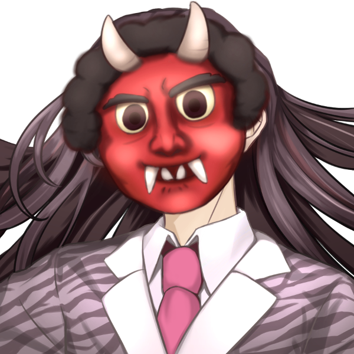
オーメン相良 :
「…………」
GM :
仮面が節分の「鬼」のような姿に変わり、ミツキを睨む。が、ミツキは気にせず、部屋の隅に追いやられていたテーブルとソファを元に戻していた。
天海こよみ :
「！？！？！？」
虹之元ユメ :
「わ、わっ……明らかに不機嫌な面ですよアレ……」
天海こよみ :
「あ……あ、ぅ……」
天海こよみ :
「た、たすけて……ミツキちゃん……」 へにゃっとその場にへたり込んで震え始める
十条ミツキ :
「わ……！こよみ！！」慌てて駆け寄り、男から庇うようにして抱きしめる。
十条ミツキ :
「……支部長ッッ！！！」
GM :
ミツキが一喝した途端、男の面がしゅんと元のおかめの面に戻る。変面ショーにも似た早業だ。
十条ミツキ :
「よしよし、大丈夫だからね……今のはあの人の悪ふざけが良くなかったね……」
天海こよみ :
「うぅ……ミツキちゃん……」 怖かったのとミツキが抱きしめてくれた安心感で静かに泣き始めて
天海こよみ :
「こ、こわいよあの人……。ぼく、おうちに帰りたい……」
十条ミツキ :
「……うーん……正直そうさせてあげたいけど……」そう言いながら、支部長を睨む。顔に『なんとかしろ』と書いてある。
オーメン相良 :
「……難しいな…子どもの扱いとは」やや反省した様子で、部屋の隅に三角座りとなる。
十条ミツキ :
「……そうだな……こよみ。あの人、どうすれば怖くなくなる？」
天海こよみ :
「…………」
天海こよみ :
手の甲で目元をごしごし拭って、三角座りしている男を見て。
天海こよみ :
「……い、今は、そんなに……こわくないかも……」
天海こよみ :
「なんか、あの……びっくりして……さっきの顔とか、こわかったから……」
天海こよみ :
「ご、ごめんね……お面さん……」 落ち込んでいる姿を見て申し訳なくなってしまって、心配そうな視線を送る
オーメン相良 :
その声を聞き、三角座りのまま、おもむろに面を外してこよみの方へ向けて振る。素顔は見えない。
オーメン相良 :
「ｺｯﾁｺｿｺﾜｶﾞﾗｾﾃｺﾞﾒﾝﾈ~」
天海こよみ :
「……！」
天海こよみ :
「う、うぅん……っ」 首を小さく横に振る
十条ミツキ :
「……」ほっとした様子でその様子を見て、こよみの背中をぽんぽんしてからセッティングを再開した。
GM :
閑話休題。
長机を挟み、支部長、その反対側にこよみとユメ、ミツキが座る形となる。
オーメン相良 :
「……ミツキくんから、報告は受けている。天海くんが、オーヴァードの少女2名に襲われそうになっていたところを、ミツキくんが庇った。しかし、ミツキくんのみでは劣勢であったところを、夏橙くんが補助、少女を退けた……と。この認識で間違いないかな」
天海こよみ :
「おー……ヴぁ……？」 聞きなれない単語に小さく首を傾げる
虹之元ユメ :
「はいっ、それで間違いはないです！ あっ、オーヴァードと言うのはですね……」 自分やミツキのように、特殊な力を用いる人間のことをそう呼ぶ。と軽く説明します
天海こよみ :
「……魔法使いのこと……？を、そうよぶんだね……」
十条ミツキ :
「魔法使いというか……そうだな、こよみってアニメは見た事ある？超能力者……って言って通じるかな……」
天海こよみ :
「あ、うん……分かるよ。炎を出したり、空を飛んだり……」
天海こよみ :
「ミツキちゃんも、あみぃちゃん達も……そうなんだよね？あれ、アニメみたいだった……」
十条ミツキ :
「……そうだね。それと……」
GM :
そう会話していると、コンコン、とノックが鳴る。先程の事務員が入ってきた。
事務員 :
「失礼します……」そう言って、キミ達の前に、飲み物と菓子盆を置いていく。
事務員 :
「紅茶が苦手な方はいらっしゃいますか？もしよろしければ、代わりをお持ちしますが……」
天海こよみ :
「え、えっと……ぼく紅茶ってあんまり飲んだことない……」
事務員 :
「承知いたしました。では、こちらもどうぞ……」そう言って、キミの目の前に麦茶の入れられたコップを置いていく。
天海こよみ :
「ありがとう……ごめんね……」 ちょっと申し訳なさそうに目を伏せて
事務員 :
「いえ。どうぞ、ごゆっくり」微笑みかける。彼女はオーメンに紅茶を差し出した後、部屋を後にした。
十条ミツキ :
「……話が途中になっちゃったけど、こよみも夏橙さんも、遠慮なくお菓子食べてくつろいで行ってね」
虹之元ユメ :
「は、はいっ！ 遠慮なく……あちちっ」一先ず紅茶に口をつけたが、思いの外に熱くて涙がぽろぽろ零れる
十条ミツキ :
「……そうだ。夏橙さんのその涙も……もしかして、オーヴァードになった事が原因で……？」最初は悲しいから泣いているのかと思っていたが、そうでもない様子なので首を傾げる。
虹之元ユメ :
「ふーっふーっ……え、ええ。覚醒してからずっとこんな感じで……」人差し指で涙を拭ってみせる
虹之元ユメ :
「でも、不便はないですよ！ 元気が取り柄なので、悲観的に見られることは少ないので！」 ニッコリと笑顔を浮かべてみせるが、どこか張り切りすぎているようにも見える
十条ミツキ :
「……そう、なんだ」その姿を見て思うところがあるのか、少し俯いてから向き直る。
十条ミツキ :
「確かに、キミを見てると元気を貰えるよ。……何かあったら頼ってくれると嬉しいな。こうして会ったのも、きっと何かの縁だし」
虹之元ユメ :
「い、いやぁ……えへへ……」 照れくさそうに身体をモジモジさせて
虹之元ユメ :
「その時は……は、はい！ よろしくお願い、します……！」
十条ミツキ :
安心したように、こくりと頷く。
天海こよみ :
「……？」 話を理解出来ず、不思議そうにおかきをちまちまと食べている
オーメン相良 :
「……話を進めよう」紅茶を一口飲み(※お面の口からそのまま飲んでいるように見える)、こよみの方を見る。
オーメン相良 :
「天海くん。……今の話は、君にとっても他人事じゃない」
天海こよみ :
「え……？」
オーメン相良 :
「……君もまた、オーヴァード……超能力者の一人だ」
オーメン相良 :
冗談などではない、真剣な様子でそう伝える。
天海こよみ :
「そう……なの……？」
十条ミツキ :
「……うん。だから、ここに来てもらったんだ」少し、気まずそうに頷く。
天海こよみ :
「……でも、ぼく……超能力なんて使ったことないよ……？」
オーメン相良 :
「確かに、君は能力を使ったことがないのかもしれない。自覚がなかったわけだからな……しかし、どうやら君はだいぶ前に覚醒している。大体1年ほど前くらいか……」
天海こよみ :
「一年前……」
天海こよみ :
「…………」 ミツキの卒業がフラッシュバックして、少しだけ辛い気持ちになる
オーメン相良 :
「……おそらくは、心理的なショックが原因だろう」
十条ミツキ :
「………っ！！」ミツキの体が強張る。そう、1年前は…彼女が熱愛報道で炎上、そして卒業した頃のことだ。
天海こよみ :
「ショック……」 ちらっとミツキを見て
天海こよみ :
「……で、でも、べつに、それで……ぼくが不自由とか、してないから……」
天海こよみ :
「超能力だって、何も知らなかったんだし……っ」
天海こよみ :
だからミツキのせいじゃない、とでも言うように呟く。
十条ミツキ :
「……こよみ……」その姿を見て、さらに申し訳なさそうに俯く。が、顔を上げてこよみをまっすぐ見つめる。
十条ミツキ :
「……ありがとう。でも、キミの今後の事は……ちゃんと、責任を取るつもりだよ」
十条ミツキ :
「あの時の事はまた今度ちゃんと謝らせて。……いい、かな」
天海こよみ :
「え？う、うん……」
天海こよみ :
「……。わかった……」 何か言いたげにするも、了承するだけだった
十条ミツキ :
「……ごめんね。ありがとう」その姿を見て何かを察するも、ミツキもまた口を閉ざした。
オーメン相良 :
「……さて。『オーヴァード』というものは決して無敵ではない。能力を使いすぎたり、その他の要因で、『ジャーム化』……すなわち、正気を失った怪物に成り果てる可能性がある」
オーメン相良 :
「天海くんが覚醒した時は、ジャーム化せずに済んだが……世界で約50%の人間は、オーヴァードではなく、そのままジャームに覚醒してしまうと言われている。
君は、中々際どい立ち位置にいるという事を理解してくれ」
天海こよみ :
「………………」
天海こよみ :
まだ少しピンときていないようで、ぽかんとしてオーメンの話を聞き、
天海こよみ :
「あの……」
天海こよみ :
「じゃあ、ミツキちゃんと、涙美ちゃんは……だいじょうぶなの……？」
十条ミツキ :
「……今は、ね」困ったようにユメと目を合わせる。
虹之元ユメ :
「……ええ、少なくとも"今は"大丈夫なんです」
天海こよみ :
「そっか……」
天海こよみ :
「それなら、よかった……。能力を使いすぎたりって言ってたから……」
天海こよみ :
「ぼくを助けるために、ジャーム？っていうのになっちゃったら、いやだなって……」 安心したように小さく微笑む
十条ミツキ :
「そんな……！でも…そうだね、夏橙さんが来てくれなかったら、少し危なかったかも」
十条ミツキ :
「改めて、ありがとう。本当に助かったよ」そう言って、ユメに頭を下げる。
虹之元ユメ :
「い、いえいえ！気にしないでください！こういう時は助け合いですから、私も助けになれて嬉しいですっ」
天海こよみ :
「ありがとう……」 一緒にお礼する
十条ミツキ :
うんうん、と頷く。
虹之元ユメ :
「あわわ、こよみちゃんまで……！ 二人とも、とっても良い人です～～～……」
オーメン相良 :
「……」その様子をしばらく見てから、言葉を続ける。
オーメン相良 :
「天海くん。情報過多で申し訳ないが…君には、もう一つ異変が起きている。君の中に、もう一人オーヴァードが居るんだ。いや、一『人』と呼んでいいものか……」
オーメン相良 :
「人間をオーヴァードたらしめるウイルス、レネゲイドウイルスが意思を持った物。レネゲイドビーイングという生き物が取り憑いている」
天海こよみ :
「れねげいどびーいんぐ……？」
オーメン相良 :
「ああ。……聞き馴染みはないだろうが…"それ"は確かに、君と共生している」
オーメン相良 :
「……最近、君の周りで何か変わった事はなかったか」
天海こよみ :
「え？えっと……えっと……」 共生してると言われ、自分の胸元や足を確かめるように見ながら
天海こよみ :
「変わったこと……」
天海こよみ :
「分からない……知らない人からよく声をかけられるようにはなったけど……。それ以外は何も……」
十条ミツキ :
「…知らない人？それって、大丈夫なの？」
虹之元ユメ :
「不審者さんには気を付けてくださいね……。でも、たくさん声をかけられるようになったことが……変わったこと、ですかね？」
天海こよみ :
「う、うん……。こわい男の人に声をかけられることもあるけど……」
天海こよみ :
「でもほとんどの人は親切にしてくれてる……かな……？だからだいじょうぶ……」
天海こよみ :
「にゃんちゃんとか、わんちゃんもよく構ってくれるし……」 動物とののんびりとした触れ合いを思い出して表情が和らぐ
十条ミツキ :
「男の人っていうのはアレだけど…にゃんちゃ…猫と犬…動物まで…？」
天海こよみ :
「うん、かわいいよ。スズメさんやハトさんもいるし……」
十条ミツキ :
「それは……オーヴァードとしての能力なのかな…？」
天海こよみ :
「そうなの？」
虹之元ユメ :
「モテモテですねぇ～……ソラリスの能力として、人や動物を惑わすものはありますけども……」
虹之元ユメ :
どうなんでしょ？と首を傾げる
オーメン相良 :
「そうだな……もちろん、君の可愛さが唐突に世間に認知され始めたという可能性もあるが……」
GM :
しばらく首を傾げた後、ポンと手を叩く。
オーメン相良 :
「わかった。君、アイドルになろう」
天海こよみ :
「へ……？」
十条ミツキ :
「……は？」
虹之元ユメ :
「えっ」
天海こよみ :
「え？な、なんで……？」 理解が追いつかず、目を丸くして固まっている
オーメン相良 :
「すまない、話が飛んだな。君の持つ能力の詳細は、まだ調査が必要だろうが……おそらく、君自身、もしくは取り憑いたレネゲイドビーイングが、周囲に何かしらの影響を与えているものと考えられる」
オーメン相良 :
「そのような能力は、あまり耳にしたことがない。おそらく、君はだいぶレアな力を持っているのだろう」
オーメン相良 :
「それと、襲ってきたオーヴァードの少女2名……"らみぃどらいぶ！"だったな。彼女達は、キミを攫おうとしていた……もしかしたら、何かしらの手段を持って君の力を知り、それを奪おうと画策しているのだろう」
オーメン相良 :
「……ここまで、ついて来られているか？」
天海こよみ :
「あ、ぅ……うん……」 何とかと言った感じ
虹之元ユメ :
「はー、へー……」わかったようなわかってないような
虹之元ユメ :
「なんで狙ったんでしょうね……ね、熱烈なスカウト……？」
オーメン相良 :
「……そうだな。夏橙くんは彼女達が何者なのか、知っているか？」
虹之元ユメ :
「えーっと……普段は晒し系の配信をしてて、たまにアイドルらしい活動をする十代の……こう、痛い……じゃなくて若々しい！ユニット……？」
オーメン相良 :
「そうだ。よく知っているな……配信者やアイドルに興味が？」
虹之元ユメ :
「えへへ、実はアイドル志望で……一通りのグループやゴシップには目を通してるんです」
虹之元ユメ :
「UGNの活動が主なので、活動には中々踏み出しきれないんですけどねっ！」隣のギターケースをぽんぽんと軽く叩いて
オーメン相良 :
「ふむ……」
十条ミツキ :
「……そうか。夏橙さんはアイドルになりたいんだ…」小さく呟く
十条ミツキ :
「……あ、ところで支部長。アタシ、その、らみどら？についてあまり詳しくなくて……業界のリサーチ、ちゃんとしてないから」
オーメン相良 :
「そうだったか。なら、改めて…」
オーメン相良 :
「「”らみぃどらいぶ！”……晒し系の配信業をメインとする、いわゆる炎上系アイドルグループだな。シンプルに態度の悪いあみぃと普通に性格が悪いらむねの2名体制で、動画サイトでのチャンネル登録者数は現在8.6万人ほど。SNSのフォロワー数はつい最近1万人を突破し、記念配信を行ったばかり。可愛らしいルックスと年齢相応の『無敵の人』っぷりが注目されており、動画ではアイドルやネット配信者を中心とした炎上沙汰をまとめ・取り上げ、生配信ではリスナーが凸してタレコミを行う方式で、大きな問題から小さな問題まで幅広く取り扱って
十条ミツキ :
「も、もう大丈夫！！わかった、なんとなくわかったよ！！！！」
天海こよみ :
「わ……わぁ……」 圧倒されてる
虹之元ユメ :
「しゃ、シャチョさん……歩くアイドル図鑑……！」
オーメン相良 :
「……そうか」説明をキャンセルされた為か、少し悲しそうに俯く。
オーメン相良 :
「とにかく、アイドルとして活動を行う者が相手だという話だ。どうやら、今日も渋谷のライブハウスで対バンイベントに出場するらしいな」
GM :
キミたちは、あみぃとらむねが焦ったように退散した姿を思い出す。
天海こよみ :
「あの後、ライブだったんだ……」
虹之元ユメ :
「だからあんなに慌てて……それにしても、ライブ前に誘拐なんてします？ コンビニ感覚……？」
天海こよみ :
「ぼく、おにぎり……？」
十条ミツキ :
「……」おにぎりに包まれて天むすみたいになってるこよみの姿を想像している。
オーメン相良 :
「さて、天海くんをアイドルにする話に戻るが…」
オーメン相良 :
「彼女達はまた天海くんを狙いに来るだろう。不幸中の幸い、今回の襲撃は外で行われたが……もしかすると、今度は天海くんの実家で、すなわち君のお祖母様も被害に遭う事になるかもしれない」
天海こよみ :
「おばあちゃんが……」 それは絶対嫌だ、と唇を固く結ぶ
オーメン相良 :
「……もちろん、我々としてはそのリスクを避ける必要がある。その事を加味して、君がアイドルになるメリットは2つある」
オーメン相良 :
「まず、アイドルは人目につく。もちろん敵を誘き寄せるリスクもあるが、もう既に敵に狙われている以上、表に出した方がかえって監視の目が増えて安全だ」
オーメン相良 :
「練習など、外に出る時間も多くなる。わざわざ、家にまで襲撃を仕掛けて来る事はないだろう」
オーメン相良 :
「2つ目に、敵もアイドルだ……同じ業界に居た方が相手の情報だって得られるかもしれない」
十条ミツキ :
「そ……そう、かな……？」こよみの様子をちらりと伺う。
天海こよみ :
「…………」 理由としては分かるし、祖母を巻き込みたくはないが、自分の膝を見つめる瞳は納得してないように揺れている
オーメン相良 :
「案ずるな、ソロアイドルじゃない。グループだ。メンバーはオーヴァードで固める事で、天海くんを保護し、育てられる環境が作れる」
オーメン相良 :
「グループも一時的に結成するものだ。こうやって一時的にグループを組むのは、他の支部でも『あるある』だろう？」
十条ミツキ :
「……あの、支部長。そうは言うけど、こよみが納得しないと……それに、アイドルってそんな軽々しくなるものじゃないと思うんだけど……！！」こよみを庇うように、ミツキが切り出す。
オーメン相良 :
「みふひふん(ミツキくん)」
GM :
気づくと、菓子盆の上のお菓子が全て消えている。また、オーメンが、面の下でもぐもぐと何かを頬張っている姿が目に入るだろう。
オーメン相良 :
「……菓子盆がただの盆になってしまった。飾り物にするほど上等じゃない、追加のお菓子を持ってきてくれ」
十条ミツキ :
「〜〜っ……！」
オーメン相良 :
「私は天海くんと話をしているんだ。悪いが、今は席を外して欲しい」
十条ミツキ :
「……でも……」こよみをちらりと見る。
天海こよみ :
「い、行かないで……っ」 ミツキを不安そうに見上げる
十条ミツキ :
「ほ……ほら！流石にその話は聞けな……わ、わ！！！」
GM :
気づくと、ミツキの後ろにもう一人のお面の男……オーメン相良とそっくりな何かが立っており、そのままミツキを外に引きずっていく。
十条ミツキ :
「ちょっと、やめ…！わかった、わかったから……セクハラで訴えるよ！！！」
GM :
バタン。ドアが閉まり、ミツキは外へと引き摺り出され……強制的に、こよみとユメ、オーメンのみがその場に残された。
天海こよみ :
「ミツキちゃん！！！」 思わず大きな声で扉へ叫ぶ
オーメン相良 :
「ちゃんとお菓子を持って帰ってきてくれ。頼んだぞ」扉の向こうへと呼びかける。
オーメン相良 :
「……さて。すまないな……かなり強引な手段を取ってしまった」
オーメン相良 :
そう言って、こよみとユメを見る。相変わらず、目線はほとんど感じ取れないお面越しだが…
天海こよみ :
「…………っ」
天海こよみ :
「ぼく、アイドル……ぜったいやらない」
オーメン相良 :
「………！？」
天海こよみ :
「ミツキちゃんにひどいことする人のおねがいなんか、ぜったい聞きたくない……！」
天海こよみ :
ぽろぽろと涙を流しながら、オーメンを真っ直ぐに見て怒りを訴える。
虹之元ユメ :
「社長さん、今のは些か人の心が……こよみちゃんはミツキちゃんがいたからこそ、安心して会話できていたんだと思いますよ？」
オーメン相良 :
「……」顔はそのままだが、明らかに『オロオロ』と書いてある。
GM :
と、その時だった。
GM :
バタン！という音と共に、ミツキが部屋に帰って来る。足元には、先ほどミツキをさらった長髪の男……オーメンが転がっている。
十条ミツキ :
「……こよみを不安にさせるのは、やっぱ話が違うよ。ね、支部長？」
GM :
ミツキは微笑んでいるが、どことなく威圧的だ。
オーメン相良 :
「……………」
オーメン相良 :
「すみませんでした」そう、平謝りして頭を下げる
天海こよみ :
「……っ、ミツキちゃん……！！」 頭を下げるオーメンを横目に、席から立ってミツキのもとへと駆け寄る
天海こよみ :
「け、けがしてない！？だいじょうぶ……！？」 泣きながら心配そうに
十条ミツキ :
「大丈夫だよ。心配させてごめんね…」そう言って、頭を撫でる
天海こよみ :
「ううん……っ」
天海こよみ :
「……よかった……びっくりした……」
天海こよみ :
「だいじょうぶ、なら……いいよ……。ごめんね……」 オーメンに振り返り
オーメン相良 :
「……！とんでもない、こちらこそすまなかった」
十条ミツキ :
「いや、それには謝らないでいいよ……まあ、アタシも口を出しすぎたしね。ここからはそばに居るけど、基本的には何も言わない…それでも大丈夫？」
天海こよみ :
「うん……」 頷いて
十条ミツキ :
「おっけ。じゃあ……改めて、話を続けようか」そう言って、こよみの頭を撫でながらソファに座らせ直す。
天海こよみ :
「…………」 ちょこんとソファに座る
オーメン相良 :
「……さて。改めて」
オーメン相良 :
「天海くん。君は…なぜアイドルになるのが嫌なんだ？」
天海こよみ :
「……だって……。ぼく……」
天海こよみ :
「アイドルのこと……」
天海こよみ :
嫌いかもしれないから……そう言おうとして、ミツキの姿が見えて言葉が止まる。
オーメン相良 :
「………」黙って、言葉の続きを待つ。
天海こよみ :
「…………」 首を横に振って
天海こよみ :
「ぼく、かわいくないから……」
天海こよみ :
「アイドルって、ミツキちゃんみたいに……かわいくてかっこいい人しかなれないでしょ……？」
オーメン相良 :
「…………え？」
オーメン相良 :
その言葉があまりに予想外であった為か、驚いたような声を上げる。
天海こよみ :
「え……？」
オーメン相良 :
「天海くんは……可愛いが……？？？」
虹之元ユメ :
「で、ですよね！？ 可愛いですよね！？ ミツキさんもそう思いますよね！！？」オーメンの言葉に全力で頷いて
十条ミツキ :
「…え、えっと……そうだね、こよみは確かに可愛いよ……？」会話の流れに困惑しながらも、それに同意する。
天海こよみ :
「そ……そう……かな……？」 ちょっと照れて俯きながら
オーメン相良 :
「もちろんだ。君はすごく可愛い。それに……君には、きっとアイドルとしての才能がある」
天海こよみ :
「ある……かな……。でも、ぼく……人前とか出れないと思う……」
天海こよみ :
「は、はずかしいから……。それなのに、アイドルの才能なんてある……？」
オーメン相良 :
「人前に出る緊張感は、人までに出続けないと解消できない。それに……才能というのはな」
オーメン相良 :
「……いや。この話は辞めておこう……だが、君はミツキのオタクだったのだろう？」
オーメン相良 :
「それならば……アイドルの中にある『光』を見た事がある。違うか」
天海こよみ :
「……！それは……ちがわないよ……」
天海こよみ :
「アイドルのミツキちゃんは、キラキラしてたから……」 瞼を閉じ、その裏側でかつてのミツキの姿を見る
十条ミツキ :
「こよみ……」
オーメン相良 :
「ふむ……そうだろうな。現役時代のミツキくんの姿は、私も見た事がある」
オーメン相良 :
「では、己がその『光』になりたいと思った事はないか？」
天海こよみ :
「……あるよ。昔は、アイドルになりたいって思ってた……」
オーメン相良 :
「ふむ。……昔は、と言うと？」
天海こよみ :
「ぼくのママ、アイドルだったから。だからちっちゃい頃からママみたいなアイドルになりたいなって……」
オーメン相良 :
「……『天海あかり』」一言、こよみの母の名を呼ぶ。
天海こよみ :
「……！知ってるの？」
オーメン相良 :
「その名前を知らない者はモグリだろう。ミツキくんも夏橙くんも、きっと知っている名だ」
十条ミツキ :
「……」デリケートな話題と理解しているためか、無言でこくりと頷くのみ。
天海こよみ :
「そうなの？ママがアイドルやってたの、三十年くらい前なのに……」
虹之元ユメ :
「はい、世代ではありませんが……その名は耳にしたことがあります……！」
天海こよみ :
「そうなんだ……」
オーメン相良 :
「伝説的なスターとは、得てしてそういうものだ。……なら、今からでもアイドルになりたいとは思わないのか？」
天海こよみ :
「…………」 ミツキの卒業ライブがフラッシュバックする
天海こよみ :
「なりたいような、なりたくないような……」
天海こよみ :
「なんか、わからなくなっちゃってる……。自分でも、上手く言えない……」
オーメン相良 :
「……そうだな。では、質問を変えよう」
オーメン相良 :
「君は、これからどう生きたい？」
天海こよみ :
「…………」 んむ…と唇を結んで考えて
天海こよみ :
「どう生きたい……」
天海こよみ :
「将来のことは、分からないけど……」
天海こよみ :
「このままずっと、おばあちゃんにめいわくかけたままはダメだなって……」
天海こよみ :
「ちゃんと毎日お外に出れる生活をできるようにしなくちゃって……思うよ……」
オーメン相良 :
「……いい心がけだな」面の下で、ふっと笑う気配がする。
オーメン相良 :
「そうだな、では、『君自身にとって』アイドルになるメリットを伝えようか」
天海こよみ :
「……？」
オーメン相良 :
「まず、君がアイドルになるなら……毎日、必ずレッスンを受けてもらう。きっと、想像を絶するほど大変な日々になるだろう」
オーメン相良 :
「二つ目に、君は多くの人と交流を持つことになる。オタクだけじゃない、業界関係者や裏方となって働いてくれるスタッフたち、それに、メンバー達との交流……君に無償の愛を注いでくれるお祖母様以外の、不特定多数の人間と話さなくてはいけない」
オーメン相良 :
「三つ目。君は、アイドルになるのなら…青春の1ページ、いや、多くのページをこの職業に捧げる事となる。時が不可逆である以上、仮に後悔することになったとしても、取り返しがつかなくなる」
天海こよみ :
「……うん」 理解して、頷く
オーメン相良 :
「しかし。……君が、朝が来ない部屋から出て行くことを望むのなら……これらの苦労なんて目ではない、最高の景色を見ることが出来るだろう。いや、私がそこまで連れて行く」
オーメン相良 :
「君が、手を伸ばしてくれるのならな」
天海こよみ :
「お面さん……」
天海こよみ :
「…………」 オーメン相良の真摯な言葉を受けて、伏せがちだった目を上げる
天海こよみ :
「……ごめん……ちょっとだけ、考えてもいい……？」
オーメン相良 :
「もちろんだとも。お祖母様ともしっかり話し合った上で決めると良い」頷く
天海こよみ :
「それも、そうなんだけど……。今、少しだけこのまま待ってほしいの……」
オーメン相良 :
「……もちろん」この場で返事が貰えることに驚いた様子で、そう返す。
天海こよみ :
「……ありがとう」
天海こよみ :
靴を脱いで素足になり、膝を抱えるようにして座る。
天海こよみ :
そして目を閉じ、考える。昔から、何かを真剣に考える時はこの座り方じゃないと集中出来なかった。
天海こよみ :
………………。
天海こよみ :
それから、五分か十分程の時が静かに流れ。
天海こよみ :
「……わかった。ぼく……アイドルやる」
天海こよみ :
瞼を開けてすぐに、誰も身構えてない状態でさらっとそう伝える。
十条ミツキ :
「……え？本当に？」ミツキもまた、考え事をしていた様子だったが、その言葉にぱっと顔を上げる。
天海こよみ :
「うん……」
オーメン相良 :
「……その返答を待っていた。大丈夫だ、きっと悪いようにはしない」
天海こよみ :
「でもね、三つくらい……おねがいしたいことがあるの……」
天海こよみ :
「聞いてもらっても、いい……？」
オーメン相良 :
「もちろん。言ってみなさい」
天海こよみ :
「ありがとう……」
天海こよみ :
「……あのね。もし、ぼくにアイドルの才能がなかったら……ただグループの他のメンバーの足を引っ張るだけだったら……」
天海こよみ :
「その時はすぐにアイドルをやめさせてもらって、何か別の方法をいっしょにさがしてほしいの……」
天海こよみ :
「他の人達にめいわくかけたくないし、おばあちゃんも……オーヴァードのことに巻き込みたくないから……」
オーメン相良 :
「もちろんだ。そもそも、私の支部に来てしまったがばかりにこのような厄介な事態になっているだけで……君自身、ちゃんと保護されるべき身の上だ。それについては問題ないだろう」
天海こよみ :
「ありがとう、お面さん……」 一番気にかかってたところのようで、ひとまず安心して小さく笑みを零す
天海こよみ :
「じゃあ、あと……二つ目」
天海こよみ :
「ぼく、グループでアイドルやるなら……涙美ちゃんといっしょがいい……」 隣にいる涙美の顔を見る
虹之元ユメ :
「はい……はいっ！！！？？」
虹之元ユメ :
「わ、わたしもですか……？？？」自分を指さして、呆然としている
天海こよみ :
「さっきアイドル志望って言ってた……よね……？」 記憶違いだったかも、とちょっと不安になる
虹之元ユメ :
「う、うん……！ それはそう、なんだけど……」
虹之元ユメ :
「い、良いのかな～？ って、思いまして……」
虹之元ユメ :
オーメンとこよみのことをチラチラと様子を伺っている
天海こよみ :
「……ぼく、涙美ちゃんのことまだよく知らない。ついさっき、会ったばっかりだし……」
天海こよみ :
「でも、やさしくて良い人だなって思うから……」
天海こよみ :
「涙美ちゃんといっしょなら、アイドル……やれそうな気がして……」
天海こよみ :
「ダメかな……？」
虹之元ユメ :
「こ、こよみちゃん～～～……」 元から潤んでいた瞳を更にうるうるとさせながら、溢れる涙を手の甲で拭う
虹之元ユメ :
「……はいっ！ こよみちゃん直々に指名とあらば、喜んでお受けします！！」
虹之元ユメ :
「……って感じですけど、社長さん……！ どうですか……！？」やる気十分と言った感じで、力こぶを作るポーズをしている
オーメン相良 :
「どうも何も……君にも、当然グループに入ってもらうつもりだったからな。これからよろしくお願いします」そう言って、頭を下げる。
天海こよみ :
「……そうだったの？」
虹之元ユメ :
「な、なんと……っ！ こちらこそ、はい！ こよみちゃんの事も、アイドルも頑張ります……！」
虹之元ユメ :
「すごいですね、こよみちゃん！ きっとこよみちゃんにも先見の明、というものが……！」小声になっていないヒソヒソ声で褒める
天海こよみ :
「ふふっ、あるの……？」 涙美の服の裾を指で小さく摘まみながら、笑いかける
オーメン相良 :
「オーヴァードとしての先輩として、しばらく天海くんの面倒を見てほしい……という理由ももちろんあるが、君もアイドルの才能があるからな。何も、疑問に思うところはない」
虹之元ユメ :
「なるほど、指導役も兼ねていると……」
虹之元ユメ :
「あっ、質問なんですけど……ミツキさんもこよみちゃんの指導をなさったり？」
十条ミツキ :
「……へっ！？な、なに、呼んだ！？」気を抜いていたのか、何かを考えていたのか。素っ頓狂な声をあげて返す。
天海こよみ :
「ミツキちゃん……？」
虹之元ユメ :
「よ、呼びました！ 何か考え事が？」
十条ミツキ :
「何も……ごめんね、自分の事。それで…何だっけ、アタシがこよみの指導をするのか…って話？」
虹之元ユメ :
「ですです、ミツキさんも付いてくれるのならこよみちゃんも多少はリラックスしながら学べるかと思いまして」
十条ミツキ :
「……うーん、それは……」やや困った様子で、オーメンを見る。
オーメン相良 :
「検討しよう」
天海こよみ :
「……あの……そのこと、なんだけど……」
天海こよみ :
「三つ目のおねがい、ミツキちゃんのことなの……」
十条ミツキ :
「……！」
天海こよみ :
「あ、あのね……」
天海こよみ :
「ミツキちゃん、ぼくといっしょにいてもらうことって……できる……？」
天海こよみ :
頭の両サイドで纏めたツインテールを、不安そうに両手で持って顔を隠しながら言う。
オーメン相良 :
「……そうだな。それは……私ではなく、ミツキくんが判断するべき事だ」
十条ミツキ :
「………」こよみの姿を見て、悩む姿を見せた後、口を開く。
十条ミツキ :
「……ごめん。それは……もう少し、時間を貰えないかな。こよみが言ってくれるんだから、前向きに検討するけど……」
GM :
けど、の後に言葉は続かない。しかし、彼女なりに思うところがある様子が察せられた。
天海こよみ :
「そ……そうだよね……。ミツキちゃんにめいわくかかっちゃうし……」
天海こよみ :
「ミツキちゃん、彼氏……も、いるし……。ぼくにかまってられないよね……」 小声になっていく
十条ミツキ :
「……あ……あー、えっと、そうじゃなくてね」不安そうな様子が崩れて、苦笑する。
十条ミツキ :
「…ごめん、こよみにとっては笑い事じゃないけど……アタシ、もう別れたよ」
天海こよみ :
「え！？」
天海こよみ :
「そ……そう、なの……？」
十条ミツキ :
「そうだよ。……ごめんね」
十条ミツキ :
「だから、アタシが今考えてるのはそういう事じゃないの。……でも、少し……プロデューサーと、相談して決めたい事だから」
天海こよみ :
「う、ううん……！ミツキちゃんがあやまることじゃ……！」
天海こよみ :
「で、でも……そっか……別れたんだ……」
天海こよみ :
嬉しいような、結局別れたのなら複雑なような……面倒な感情が表れそうな顔を、ツインテールでもふもふしながら隠している。
オーメン相良 :
「……そうだな。天海くんには悪いが、返答には少々時間をくれないか」
オーメン相良 :
「それこそ、正式にOKを出すのはその後でも構わない」
天海こよみ :
「う、ううん。これは出来ればって思ってたことだから、アイドルは……やるよ……」
天海こよみ :
「……でも」
天海こよみ :
「ぼく、不安なんだ……。これからアイドルやるっていうこともだけど……」
天海こよみ :
「レネゲイドビーイング……？だっけ。そんな、よく分からない別の何かが、ぼくにおばけみたいに取りついてるなんて……」
天海こよみ :
「知らない人に声をかけられたり親切にされるの、今まで不思議だっただけなのに……なんか……急にこわくなってきちゃって……」
天海こよみ :
「だけど、ミツキちゃんがそばにいてくれたら……すこしだけ、安心できるかもって思ったの……」
十条ミツキ :
「……」その言葉を聞き、目を閉じて考える姿を見せる。
オーメン相良 :
「君にとって、ミツキが大切な存在である事は理解しているつもりだ。また、君の不安も尤もだろう……気持ちはよく伝わった」安心させるように頷く
天海こよみ :
「……うん」 こくんと頷く
天海こよみ :
「……そ、それだけ、だから……！ごめんね、ミツキちゃん……こまらせちゃって……」
十条ミツキ :
「ううん、大丈夫。……むしろ、ありがとう」そう、呟くようにして小さく微笑む。
天海こよみ :
「……う、うん……っ」 少しホッとして、笑みを返す
オーメン相良 :
「さて、天海くんについてはひとまず確定として……夏橙くん、君に聞きたい事がある」
虹之元ユメ :
「……あっ、はいっ！ なんでしょうか！」ミツキの話に聞き入ってしまって逸れていた気をオーメンに向ける
オーメン相良 :
「君は、先ほどの交戦時にギターを弾いていたらしいが……少し、手を見せてもらってもいいか」
虹之元ユメ :
「はい！ 少々お待ちくださいね～……」
虹之元ユメ :
「えーっと、手だけでよろしい……のでしょうか？」涙で若干濡れた指をハンカチで拭ってから手を見せる
オーメン相良 :
「問題ない。……ふむ…」手をマジマジと見つめる。
オーメン相良 :
「……タコの付いている位置が良いな。ギターは戦闘時以外にも？」
虹之元ユメ :
「そうですね～、有名バンドの曲をカバーしてみたり……たまに作曲してネットに上げてみたり……」
虹之元ユメ :
「……はい、普通以上には扱えると思います！」
オーメン相良 :
「作曲まで…なるほど。言葉遣いも綺麗だ、きっと作詞面でのセンスもあるだろうな…ふむ……」しばらく考えた後、顔を上げる
オーメン相良 :
「ありがとう。良いグループになりそうだ」
天海こよみ :
「すごく上手だったもんね……」 涙美がギターを弾いてた時のことを思い出す
虹之元ユメ :
「そ、そうですか？ えへ、なんだか照れくさいですねぇ～……♪」緩んだ口元からえへへ、と笑みが零れる
天海こよみ :
「うん……びっくりした。また聴きたいな……」 つられて笑って
虹之元ユメ :
「そういうことなら、はい！ いつでもお聞かせしますよ！ この子も喜ぶと思いますしね」ギターケースの方にも笑みを向けて、そう呟く
天海こよみ :
「……うん」 楽しみ、というように頷く
オーメン相良 :
「さて、話はまとまったな！ミツキくん、会議室にいくぞ！」
十条ミツキ :
「そうだね。色々、話さなきゃいけないこともできたし…」
天海こよみ :
「……ぼく達はどうすればいいの？」
虹之元ユメ :
「ですね。待機していれば……？」
GM :
そう話している横を、オーメンは心底楽しそうに高笑いしながらすり抜けて行く。ドアの外に出た時、「君！タクシーを呼んでくれ、『お客様』がお帰りだ！」と事務員に呼びかける姿が見られた。
十条ミツキ :
「今日のところは一旦帰ってくれて大丈夫だよ。……あ、でも後日また呼ぶことになると思うから…連絡先、交換できる？」
天海こよみ :
「え……！？」
天海こよみ :
「あ、う、うん……！もちろん……っ」
天海こよみ :
推しと連絡先を交換するというアイドルとオタクだった頃には考えられなかったことに戸惑いながら、慌ててスマホを出して手順を進める。
十条ミツキ :
「……よし、おっけ。……もう、アタシ達はビジネス上のパートナーだからね……これからよろしくね、こよみ、ルミ」さらりとユメの事を呼び捨てにしながら、そう微笑む。
虹之元ユメ :
「は、は、はぃ～……！ なんだか夢みたいです～……」ほわほわと浮足立った雰囲気を纏って、スマホを胸に抱く
天海こよみ :
「う、うん……！」
天海こよみ :
「えっと、えっと……こちらこそ、よろしくね……ミツキちゃん……っ」 何だか嬉しくなって、ふにゃっと笑う
虹之元ユメ :
「改めて、よろしくお願いします！ ミツキさん、こよみちゃん！」ふんす、と気合を入れ直しながら頭を下げる
十条ミツキ :
その姿を見て、ミツキはにこっと微笑む。
GM :
その後、キミたちはタクシーに乗って自宅へ戻り……ほどなくして、「オーディションのお知らせ」という表題のメールが届く。キミたちはほぼ間違いなくメンバーとして加入する事となるだろうが、一応形式的に開催するようだ。
GM :
また、それとは別に、トレーナー役としてミツキがレッスンに付き合う事を約束するメールも届く事となる。
GM :
オーディションの開催は、3日後だ。
GM :
シーンエンド
シーン3 盟約リバイバル
GM :
PC3のオープニングです。登場侵蝕をお願いします。
琵琶坂 藍依 :
1D10+38(1D10+38) ＞ 4[4]+38 ＞ 42
公園
夕刻。都内某所。
街外れの小さな公園にて。
……いや、とりあえず"公園"と言ってみたが、
実際のところ、その場所は「公園」と呼ぶコトが憚られるほど寂れていた。
────というのも、市民の苦情(クレーム)とは怖いもので、
危険性だとか老朽化だとか、もっともらしい理由でほとんどの遊具を撤去。
……長年に亘り、人々に癒しを提供してきた歴史ある公園を、たった数年にして"元公園"あるいは"空き地"に変えてしまったのだという。
無情だが、よくある話だ。
老若男女問わず市民に広く愛されていた公園は見る影もなく、
今となっては不審者等の目撃情報が相次いで、人っ子ひとり寄りつかない。
そんな抜け殻の公園の隅。
────古惚けたブランコに腰掛けて、赤錆びたチェーンを軋ませる影が一つ。

黒髪の少女 :
「はあ」
午後七時。
……初夏から遅れだした落陽が、赤いスポットライトとなって影を照らしだす。
夕日を照り返し輝く白い肌。伏せられた切れ長の蒼い瞳。
それはまるで、精巧に造られた氷像めいて美しい少女だった。
彼女の名前は、琵琶坂藍依。
十条ミツキと同様に"醜聞(スキャンダル)"で道を踏み外した、元人気メジャーアイドルだ。
……今日はアイドル業界復帰を誓ったアイドルオーディションに落ちた帰り道。
その表情は、地平の向こう側の太陽と同じく沈んでいる。
琵琶坂 藍依 :
「(もう何度目になるだろう、オーディションに落ちるのは)」
琵琶坂 藍依 :
「(……歌にダンス、主催が提示した審査項目の全てに於いて、他の子に私が劣っているとは思えなかった)」
────それでも落ちた。
この自己評価が誤りじゃないんだったら何故、何度も何度もオーディションに落ちるのか。
……いや、何故かなんて既に分かりきってる。
アイドルは人気商売。イメージが第一の世界。
大きな"醜聞(スキャンダル)"を出した人間など採用しないのが当然なのだろう。
一度、アヤがついた時点で業界復帰は望み薄。
琵琶坂 藍依 :
「(…………でも、二次審査まで行った今回がチャンスだと思ったんだけどな)」
雑草が生い茂る公園の端に小さな花が咲いているのを見つけ、もう何度目かの溜息を吐く。
GM :
キミが、黄昏ていると。
GM :
公園の入り口付近に、人影があった。長身。異常なまでの長髪。顔はよく見えない。
GM :
その人影が、キミに向かって歩いてくる。一歩、また一歩。
琵琶坂 藍依 :
「(ん……？ 誰か、こっちに────)」そちらに視線を移す
GM :
仄暗い中、一歩一歩近づいてくるその人影の顔が、ようやくあらわになる。
？？？ :
いや、あらわになったと言って良いのか。
？？？ :
『彼』の顔には「おかめ」の面がついていた。それだけでも異常なのに、身に纏っているのは、ゼブラ柄のスーツ。
？？？ :
明らかに異様な、『非日常』の具現化が、キミに向かって歩いてくる。
琵琶坂 藍依 :
「…………！！」
琵琶坂 藍依 :
ブランコのチェーンを手放して立ちあがる。
琵琶坂 藍依 :
その両手には血に似た赤錆がべっとりとこびりついていたが、どうやらそんなことを気にしている場合ではなさそうだ。
GM :
人影は、キミの前で静止し、口を開く。
？？？ :
「琵琶坂藍依。Seventh Heavenの元メンバー」
？？？ :
「そして、現在は何の肩書きも持たぬ、ただの少女」
？？？ :
「間違いないか」
琵琶坂 藍依 :
「…………」
琵琶坂 藍依 :
「(……私の事を、知っている)」
琵琶坂 藍依 :
「そういう貴方は、もしかして」
琵琶坂 藍依 :
「…………不審者ですか？」
？？？ :
「そうだな。君に不審者呼ばわりされるのも、また一興かもしれない」
琵琶坂 藍依 :
「一興」
琵琶坂 藍依 :
「私としてはむしろ、不審者に話しかけられて"一驚"といったところですけど」後退って
？？？ :
「良い返しだな。頭の回転が速い……バラエティ番組でも良い活躍が期待できそうだ」一歩、近づく。
GM :
と、彼は懐に手を入れる。何かを取り出そうとしているのだ。
琵琶坂 藍依 :
「(む、懐に手を……！ 膨らみの大きさから拳銃ではない、となるとナイフ類……？)」警戒して構える
GM :
男は、バッと懐から『それ』を取り出す。
GM :
薄型のそれを、ささっと『開き』……彼は、その中身を君に差し出した。
GM :
それは名刺だった。「UGNプロダクション」「代表取締役 オーメン相良」と書かれている。
琵琶坂 藍依 :
「…………え？」目を見開いて
オーメン相良 :
「私は、オーメン相良。UGN芸能支部……『UGNプロダクション』という会社の社長であり、支部長を務めている」
オーメン相良 :
「コードネームは”ミスター・オーメン”」
オーメン相良 :
「君を、スカウトしに来た」
琵琶坂 藍依 :
「……私を、スカウトに？」
オーメン相良 :
「そうだ。君を、アイドルとしてスカウトしに来た」
琵琶坂 藍依 :
「…………」
琵琶坂 藍依 :
「ええ、と……貴方は不審者ではなく、アイドルをプロデュースする会社の社長で、わざわざ自分の足で、ここまで私をスカウトしにきた、と……？」
オーメン相良 :
「そうだ。君を、アイドルとしてスカウトしに来た。社長でプロデューサーで支部長だ」先程のセリフに、肩書きが付け加えられた。
琵琶坂 藍依 :
「はあ……」
琵琶坂 藍依 :
「(プライドあるのかな、肩書きに)」
琵琶坂 藍依 :
「どこからどう見ても不審者の見た目、って事は一旦、脇に置くとして……」
琵琶坂 藍依 :
「UGNプロダクションなんて聞いた事ないですよ」
琵琶坂 藍依 :
「アイドルって言葉を利用して、女の子から金銭と時間を搾取する悪徳業者の方だったり？そういう人のスカウトが街で増えて────」
琵琶坂 藍依 :
「って、あれ……？ UGN……？」
オーメン相良 :
「そうだ。君を、アイドルとしてスカウトしに来た。社長でプロデューサーだ。UGNの支部長でもある」頷く。
琵琶坂 藍依 :
「(UGN芸能支部とかUGNプロダクションって言葉は出ていたハズなのに、この見た目が、あのUGNと全く結びつかなかった……)」
オーメン相良 :
「疑うようなら、霧谷さんにでも確認してみると良い。多忙だろうが、きっと返答を寄越してくれるだろう」
オーメン相良 :
「ともあれ、その辺の芸能事務所を名乗るクソ業者と一緒にしてはいけない。本当に、ちゃんとアイドル事務所だ」
オーメン相良 :
始動したての、と小さな声でボソッと付け足す。
琵琶坂 藍依 :
「…………」
琵琶坂 藍依 :
「(見た目だけなら、その辺の悪徳業者を凌ぐ怪しさなんだけど……)」
琵琶坂 藍依 :
「(いや、見た目だけじゃなく……あのUGNがアイドル事務所を作ってるって話も、信じ難くはあるけど……)」
琵琶坂 藍依 :
「ううん……悪意があるようにもウソをついてるようにも見えない……」
琵琶坂 藍依 :
一から十まで怪しい男の受け入れ難い言葉を、丁寧に反芻されることで漸く呑み込む。
琵琶坂 藍依 :
「(最初はビックリしたけど……、本当の話し……？)」
琵琶坂 藍依 :
「(勝手にレッテルを貼りつけて、不審者呼ばわりして……、悪い事をしたかな……)」
琵琶坂 藍依 :
「(────ああ、いや、よくよく考えたら、こんな恰好してるヒトにも責任あるな)」
琵琶坂 藍依 :
「いろいろ聴きたい事はありますけど、まずひとつ、いいですか？」
オーメン相良 :
「いいだろう」頷く
琵琶坂 藍依 :
「…………何故、私なんです？」
琵琶坂 藍依 :
「私を知っているって事は"あの事件"の事も知っているでしょう？」
琵琶坂 藍依 :
「他のアイドル事務所がそうであるように、まず避けるのが普通だと思うんですけど」
琵琶坂 藍依 :
「もし世間に浸透した悪名を利用して、炎上商法で儲けたいのなら、お断り────」
オーメン相良 :
「そうだな。炎上商法の良し悪しの話はともかく……」
オーメン相良 :
「そもそも、君が言う"あの事件"とは真実か？」
琵琶坂 藍依 :
「…………」
琵琶坂 藍依 :
「……………………半分真実で半分ウソ、だと思ってます私は」
琵琶坂 藍依 :
「詳細は想像にお任せしますよ、いまさら弁明するのも馬鹿らしいし」
オーメン相良 :
「ならば、私が信じる物を真実としよう」
オーメン相良 :
「君は、『久能胡桃』に加害などしていない。世間で流布されている噂は全て紛い物だ」
琵琶坂 藍依 :
「……本気で言ってます？」
オーメン相良 :
「本気だ。適当な事を述べているつもりはない」
琵琶坂 藍依 :
「…………」真剣な声色に呆れたように笑って
琵琶坂 藍依 :
「仮に真実がどうあれ、炎上した私を身内に抱えるのって相当なリスクですよ？」
琵琶坂 藍依 :
「……そのあたり、分かってます？」
オーメン相良 :
「その点についても理解している。私がどう考えようが、世間的に見るなら君は悪者として扱われている」
オーメン相良 :
「……今は、な」
琵琶坂 藍依 :
「…………ずっと、だと思いますけど」遠い目をして
オーメン相良 :
「それならば、私からも問おう」
オーメン相良 :
「まるで諦めたような口ぶりだが……君はなぜアイドルオーディションを受け続けている？」
琵琶坂 藍依 :
「それは、」
琵琶坂 藍依 :
「────私は、トップアイドルに"ならなくちゃいけない"から」
オーメン相良 :
「……理由を聞いてもいいか」
琵琶坂 藍依 :
「単純な話です」
琵琶坂 藍依 :
「……最期に、そう約束したんですよ『胡桃』と」
オーメン相良 :
「……久能胡桃との約束」
オーメン相良 :
「私は内部事情を知らないが……君と彼女は仲が良かったな」
琵琶坂 藍依 :
「ええ、胡桃とは同じ学校に通うルームメイトでしたから」
オーメン相良 :
「プライベートから親交があったのか」納得したように頷く。
オーメン相良 :
「……君に聞くのは酷かもしれないが。その『トップアイドルになる』という夢は、共に叶えるべきものじゃなかったのか」
オーメン相良 :
「君一人となった今、なおトップアイドルに執着する理由は、彼女のかけた『呪い』にあると？」
琵琶坂 藍依 :
「…………」
琵琶坂 藍依 :
「……………………それが、たとえ『呪い』だとしても」
琵琶坂 藍依 :
「私にとっては、胡桃が遺してくれた大事なモノだ」
オーメン相良 :
「……そうか。君がそう感じているのであれば、私が何か言うのも野暮だろう」
オーメン相良 :
「つまり……君は、深い闇に迷い込んだ今なお、『アイドル』になる事を諦めていない。それどころか、『トップアイドル』を目指している」
オーメン相良 :
「例えその道が茨の道であろうと、そうする事が君自身を救うと？」
琵琶坂 藍依 :
「────ええ。まがいものだとしても、それこそが今の私にとっての『光』だから」
オーメン相良 :
「ならば。私のスカウトを断る理由はあるのか？」
オーメン相良 :
「UGNプロは、アークライト程の規模を持つ事務所ではない。現時点はいわゆる『地下アイドル』レベルだろう。それを力不足だ、と考えるのであれば……私も、君のスカウトを諦める」
オーメン相良 :
「だが、理由が別にあるのなら……私に力を貸してほしい。私も、君を全力でプロデュースする」
琵琶坂 藍依 :
「…………事務所の規模は、問題に思っていません」
琵琶坂 藍依 :
「確かに私の方にスカウトを断る理由は、ない」
琵琶坂 藍依 :
「……ただひとつの疑問を除いては」
オーメン相良 :
「その疑問とは？」
琵琶坂 藍依 :
「────さきほど目標を語った通り、私は中途半端なグループに所属するつもりはない」
琵琶坂 藍依 :
「貴方のUGNプロの目標地点は、どこです？」
オーメン相良 :
「……そうだな。その話をする前に、まず、何故今回グループを結成する事になったのか……その背景を語らせてはくれないか」
琵琶坂 藍依 :
「背景……？」
オーメン相良 :
「そもそも、私が今回君に声をかけたのは……『アイドルグループを結成する事』が主目的ではない」
琵琶坂 藍依 :
「というと……？」
オーメン相良 :
「先日匿った新人のオーヴァードが、正体不明……恐らくは、FH側に属する物に狙われている」
オーメン相良 :
「彼女には、とあるレネゲイドビーイング……私の『見立て』では、厄介な能力を持つものが取り憑いているようだ」
オーメン相良 :
「私は、この件を解決するべく……アイドルグループを結成する事にした」
オーメン相良 :
「ここまで、理解できるか？」
琵琶坂 藍依 :
「…………途中まで、理解しましたけど、どうしてアイドルグループ？」
オーメン相良 :
「色々と、その方が都合が良かったからだ。……君が作戦に参加するのであれば、詳細を話そう」
オーメン相良 :
「とにかく、今回のグループはあくまで一時的な『作戦』によるものだ。現時点の計画としては、期間限定ユニットとしてプロデュースする」
オーメン相良 :
「それを中途半端と捉えるのであれば、君の意向にはそぐわないだろう。だが、プロデュース自体は本気でやる……そして、メンバーの皆が続けたいと望むなら」
オーメン相良 :
「その時は、君を含む、全てのアイドルに関わる人間を、アイドルを通じて幸せにするべく、活動を続けよう」
オーメン相良 :
「……本題に戻そう。UGNプロ……当支部の目的は、『アイドルに関わる全ての人間を、アイドルによって幸せに導く事』だ」
オーメン相良 :
当面は、FHが幅を利かせている芸能界におけるシェアを奪う事に注力する事になるだろうがな、と付け加える。態度からして、彼は本気のようだ。
琵琶坂 藍依 :
「…………『アイドルに関わる全ての人間を、アイドルによって幸せに導く事』ね」
琵琶坂 藍依 :
「耳障りが良いスローガンではありますけど」
琵琶坂 藍依 :
「……う～ん」
琵琶坂 藍依 :
「まあ、私の目的とは関係なく手は貸しますよ」
琵琶坂 藍依 :
「FHに狙われているって新人の子、いきなりアイドルにさせられて可哀相ですし」
オーメン相良 :
「それは耳が痛いな」
オーメン相良 :
「……だが、存外彼女は『やる』と思うぞ」
琵琶坂 藍依 :
「そうなんですか？」首を傾げ
オーメン相良 :
「ああ。……いや、これ以上は止そう。みだりに他人の情報をばらまくわけにはいかないからな」
オーメン相良 :
「それで……私の聞き違いでなければ、私に手を貸すと？」
琵琶坂 藍依 :
「……ええ。ですけど、交換条件をひとついいですか？」
オーメン相良 :
「ふむ。聞こう」
琵琶坂 藍依 :
「まず全力でプロデュースする事は前提として、」
琵琶坂 藍依 :
「そのグループが解散した場合、別の新規アイドルプロジェクトに私を組みこんでもらいたいんです」
琵琶坂 藍依 :
「UGNは私の能力が欲しい。私はトップアイドルになりたい。この両者の要望を満たす事が条件です」
琵琶坂 藍依 :
「────約束できますか？」
オーメン相良 :
「……いいだろう。私は『アイドル』を通じて、君を幸せにする事を誓おう」
琵琶坂 藍依 :
「よかった」
琵琶坂 藍依 :
「……それなら私は喜んで力を貸しましょう」目を閉じて
オーメン相良 :
「ありがとう。恩に着る」
オーメン相良 :
そう言って頭を下げる。
オーメン相良 :
「……さて。君には後日、改めてオーディションを受けてもらう」
琵琶坂 藍依 :
「オーディションを？」
オーメン相良 :
「ああ。改めて、君の意向を聞く場が欲しいのと……」
オーメン相良 :
「その方が、『あるある』で楽しいだろう？」
琵琶坂 藍依 :
「……ちょっとよく分かんないです」
オーメン相良 :
「そうか。まあ、君を落とす事はまずない。緩い気持ちで来社してくれたまえ」
琵琶坂 藍依 :
「なるほど」
オーメン相良 :
「他に質問は？」
琵琶坂 藍依 :
「特に無……ああ、いえ、あります」
オーメン相良 :
「ふむ？」
琵琶坂 藍依 :
「……なんでそんな恰好なんです？お面を被って芸人さんでも着ないようなスーツを着て、まるっきり不審者だと思いましたよ私」
オーメン相良 :
「……それは」
オーメン相良 :
「これは私がアイドルをプロデュースする際の正装だからだ」
琵琶坂 藍依 :
「正装」
琵琶坂 藍依 :
「私がアイドル業界にいた三年間、そんな恰好のプロデューサーは見なかったけどな……」
オーメン相良 :
「その辺りも、今後この事務所で学んでいくといい。この点については、私は意見を曲げないぞ」
琵琶坂 藍依 :
「謎のポリシー……」
琵琶坂 藍依 :
「まあ、アイドル活動に支障が出ないなら、いいですけど……」
オーメン相良 :
「安心しろ。この面は、エンジェルハイロゥの能力で投影している物だ。一般人から見たら至って普通だ」
GM :
なお、スーツジャケットについてはエンジェルハイロゥの能力によるものではない。
琵琶坂 藍依 :
「(うーん……、スーツだけならギリギリセーフ……？)」
琵琶坂 藍依 :
「(アイドルより目立ちかねない気もするけど……)」
オーメン相良 :
「さて、他の質問は？」あくまで、この格好を『正装』として通すつもりのようだ。
琵琶坂 藍依 :
「もういいかな、そろそろ暗くなるし」
オーメン相良 :
「そうか。では、また後日連絡をしよう。UGNに登録されている情報から連絡をするが、迷惑電話として処理しないように」
オーメン相良 :
「それでは」そう言い残し、ハハハハと高笑いしながら公園から出ていく。
琵琶坂 藍依 :
「やっぱり不審者だったかも」苦笑して見送って
琵琶坂 藍依 :
「────────まあ、また明日。プロデューサー」その背中に語りかける
オーメン相良 :
その言葉に、軽く手を上げて返す。そのまま、彼は夜闇の中に姿を消した。
GM :
シーンエンド
シーン4 偏愛イミテーション
GM :
PC4は登場侵蝕をお願いします。
夢川めめ :
1D10+43(1D10+43) ＞ 8[8]+43 ＞ 51
ライブハウス
GM :
S区K町。
GM :
仮初の愛情と欲望が渦巻く、日本でも有数の歓楽街。
GM :
あなたは、その一角にあるライブハウスの中に居た。
GM :
キミはメンズ地下アイドルグループ「EYES ONLY」のオタク……その中でも、”推し”に貢ぐ額が一番多い、オタクの中のオタクであるトップ・オタ、通称「TO」だ。
GM :
主な仕事としては、ライブ後の特典会の際、何度も列に並び直してチェキを撮り続ける行為・通称「チェキループ」を、特典会が終了するまで続ける事で推しに還元したり、推しの生誕祭におけるイベント企画の中心となったりなどだ。
GM :
推しの名は「紫吹レイジ」。担当カラーはディープバイオレット。8カ月前に加入した新メンバーであり、人気は中の上程度。
GM :
今日は、新曲「ハイドランジアの王」のお披露目ライブだ。EYES ONLYの曲は、愛を知らない科学者が、根拠に基づく「愛」を証明するまでを描いたシリーズ物となっている。今回の新曲は、主人公であり演者自信を示す『科学者』と『EYES』(これはファンを指す)の関係が進展する作品だ、と作詞家がSNSで語っていた。
GM :
ライブハウス内にいるのは、数十人程度だろうか。友人同士で来ている者はともかく、他のオタクたちは無言でスマホをいじっている。
GM :
全員に共通している点は、ライブ前から推し色のペンライトを点灯していたり、服装から推し色で固めていたりなど、「推しが誰であるか」が明確である事だ。
GM :
これは、他のオタクに対する『警告色』である。こうする事で、前後左右に同担が来ないようにして、自分に対するレスを確実に受け取る事ができる環境を整えるのだ。
GM :
さて。キミは、いつもの自分の定位置に荷物を置いた後、チェキ券を購入する為、列に並んでいた。
夢川めめ :
｢…………｣
夢川めめ :
自他ともに認める【紫吹レイジのTO】、夢川めめは当然の如く、──あるいは周りに並ぶ【ただのオタク】と同様、無言でチェキ列に並ぶ。
夢川めめ :
その身には、めめいわく｢れぇじしか勝たん｣……紫吹レイジのステージ衣装である白衣のような白コートを纏い、乾いた音と共に液晶を叩く長い爪はサロンで整えたばかり……
新曲のお披露目に合わせ、自らのチューニングも完璧であった。
夢川めめ :
｢はゎ……まぢどきどきする🥺🥺ハイドランジアの王、ゆーちゅーぶのトレーラーだけで優勝だったけど作詞家サマが言ってたようにお話が進展するんだもんね！？！？｣
……ツイート。
夢川めめ :
｢わたし的には2曲前の〇〇のあの描写と繋がってて、それで科学者とね、EYESの根底に流れる関係性がさ……｣
ぴろん。
夢川めめ :
通知に邪魔をされ、ふ、と手を止める。
スタンプで顔を半分隠した自らのアイコンを横目に、先程のツイートを見ると、既に引用RTが数件溜まっていた。
夢川めめ :
けれども、押してみればRTはない、との表示。
夢川めめ :
……ああ、まただ。
また鍵垢からわざわざめめのツイートあげつらって、なんか言ってんだ。
夢川めめ :
｢……ふふっ♡｣
夢川めめ :
｢れぇじ色｣に染めた髪を指でくるくる弄りながら、彼女は余裕に満ちた笑いを漏らす。
でも──正面切ってめめを脅せない外野なんて、道端の石より怖くないもん。
夢川めめ :
これが、彼女にとっていつも通りの日常。
戦場のような現場での、ありふれた一コマ。
今日もまた、購入列からフルスロットル。
既に戦いの火蓋は切られていた。
GM :
キミが正体不明の"モブ共"と戦っていると……どうやら、次はキミの番らしい。
GM :
ちなみに、アイオンのチェキは1枚1500円。
GM :
一回の購入上限は10枚で、足りない(チェキループする)場合は、改めて物販コーナーにてチェキ券を購入し、追加で買い足していく事となる。
GM :
この現場での平均の枚数は5枚程度……金額にして7500円。決して安い額ではない。
GM :
キミの番が来た。
スタッフ :
「次の方～、何枚ですか？」
夢川めめ :
──正直な所、これは形式的なやり取りに過ぎない。
めめにとっても、そして嫌でも顔を覚えているであろうスタッフにとっても。
紛うことなき答えはひとつだった。
夢川めめ :
歌舞伎町ランドセル、でお馴染みMCMブランドの長財布から、1万円と5千円のピン札を取り出しニッコリ微笑む。
なお、再び閉じられた財布はぎちぎちとその身を悶えさせている。
──もちろん、札束で。
夢川めめ :
｢10枚♡｣
スタッフ :
「10枚ですね。お預かりします」特に動揺した様子もなく金を預かり、レイジ⑩と書かれたチェキ券を手渡す。
GM :
こうして、キミは今夜もチェキ券をゲットした。
夢川めめ :
｢〜〜♪｣
これから何枚も手にするであろうチェキ券を、まるで当たりの宝くじかのように拝むように掲げ、ルンルンな足取りで購入列を離れる。
……周りから向けられる、白い目も意に介さず。
GM :
……そう。君に対して、周囲から視線が刺さっている。まだ担降りする気はないのか、今夜の鍵閉めも彼女なのか……と、『つぶやく』声が耳に届くようだ。
※鍵閉め：特典会の最後までいる事。この行為に価値を見出すオタクもいる。
GM :
購入し終え、戻ろうとすると……後ろに並んでいた女──おそらくは自分より年上だ──が、すれ違いざまに「ふふっ」と小さく笑う。
GM :
紫色の髪に、地雷服……見たことがある。担当被りの女オタクだ。
スタッフ :
「どうされます？」

被りの女 :
「うーん、10枚で♡」
GM :
彼女もまたチェキ券を受け取り、そのまま、己の席へと戻っていった。
夢川めめ :
｢（ぁ……今の人、なんとなく見たことあるかも）｣
夢川めめ :
｢（まあ……他のオタクなんてれぇじのいちばんなめめには関係ないけど）｣
夢川めめ :
薄く向けられた微笑にも心惑わされず、夢川めめは再びTwitterを開きつつ荷物のあるべき場所へと歩を進める。
夢川めめ :
｢え、今日の現場みんなさいこ〜にしあわせそなんだけど…🥺🥺🥺始まる前からにこにこ止まんない同担てゃばっかりでめめもちょう嬉しい〜〜！！てかこれを機に皆れぇじにハマれ！？！｣
たぷたぷ、と。
紫吹レイジ仕様に着せ替えたキーボードを叩き、スマホの青白い光を浴びながら。
夢川めめ :
その瞳だけでなく、頭の中はまさに｢EYES ONLY｣オンリーなのだ。
期待に膨らませながら、あとは開演を待つのみである。
GM :
しばらく待っていると、照明が暗くなり、BGMがフェードアウトする。
GM :
ブーッと激しい警戒音が鳴り響く中、どこか怪しげな雰囲気を持つサイバーチックな入場SEが流れ出し……スポットライトによる逆光の中、メンバー達が入場。
GM :
立ち位置に付いたメンバーは、スポットライトに照らされるたび、それぞれに割り振られた振り付けのダンスを魅せる。
ピンク担当 :
バク宙など、激しいアクロバットを見せる者。
黒担当 :
きゅるん、と可愛らしい仕草で目線を惹きつける者。
GM :
それぞれが躍るたびに、彼らの担当のオタクが歓声を上げてペンライトを振る。
紫吹レイジ :
そして、キミの目の前の男……紫吹レイジに、スポットライトが当たる。やや彫りが深い顔立ちに、濃い影が落ちる。

紫吹レイジ :
彼は目を閉じたまま、軽いステップを踏んでから、白衣にも似たロングコート風衣装を翻して踊る。
紫吹レイジ :
優雅、しかし、鍛え上げられた体幹によって、決めるべきところではピタリと静止する、計算されつくした動き。
紫吹レイジ :
彼が得意とする、ジャズヒップホップを交えた振り付けだ。
紫吹レイジ :
最後、タンッと足を踏み鳴らしてから動きを止め、静かに目を開く。アメジストのような瞳。
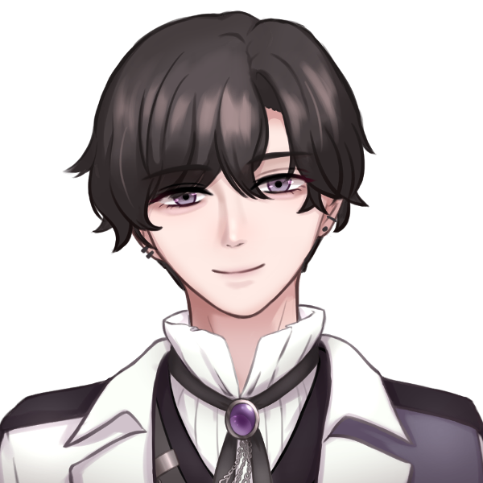
紫吹レイジ :
彼は、半歩後ろに下がりながらVサインを作り、己の目に向けた後、客席に向かって指差し、微笑む。「ちゃんと見ているよ」と伝えるハンドシグナルだ。
夢川めめ :
｢はゎ……｣
夢川めめ :
点灯されたペンラを握り込む手の中から、ピキ、と嫌な音がする。
そちらに目を向けることも、瞬きひとつすることなく、ただただの目の中、頭の中心に｢れぇじ｣を留め続ける。
夢川めめ :
……でも、ああ…えへへ。
分かっていても、うれしいなあ。
だって今の、いまの、めめに｢だけ｣。
れぇじがくれたんだもん…
夢川めめ :
じわり滲む涙は、喜悦故か。
それとも瞬きすら厭う故の生理現象か、あるいは両方か。
いずれにせよ、彼女は目をそらすことなく、噛み締めるようにライブを見つめている……
GM :
スポットライトが別のメンバーへと移ると同時、レイジは影の中で静止する。
GM :
全てのメンバーがダンスを終え、静止した後、知らない曲のイントロが流れ始める。
GM :
どこかゴシック風の響きを持つ、ダンサブルなサウンドから始まると同時、メンバーらのダンッと力強い足音とビートがシンクロする。
GM :
美しく揃ったダンス……しかし、ただの集団演技ではない。それぞれに個性が見られる。
GM :
レイジの動きには、忙しなさがない。指先まで、彼の持つ「科学者」像……冷静沈着で、余裕のある姿を表現しているのだろう。
GM :
歌詞の内容は、相変わらず抽象的でよくわからない。だが、「科学者」が「愛」よりも「EYES」に興味を持ちだしたような……そんな気がした。
GM :
……1番が終了。現時点、レイジのソロでの歌割りがほとんどない事が気になるだろう。
GM :
他のメンバーがソロで歌い、左右や後ろのオタク達がペンライトを上げて応援している中、キミが紫色のペンライトを上げる機会はほとんどない……
夢川めめ :
｢……！｣
祈るようにペンライトを握り込み、下唇をきゅっと噛み。彼女はただひたすら【その時】を待ち続ける。
夢川めめ :
｢……めめは…知ってるもん…｣
｢作詞家サマも、科学者も、Pサマも……理解ってるはず…｣
夢川めめ :
｢めめ''が''大好きなEYES ONLYなら…｣
｢…………ぜったい、ぜ〜ったい、期待を越えてくれる…信じてるから…｣
口の中でぼそぼそと呟く。
激しい曲の勢いで、彼女の妄信は誰にも聞こえない。
GM :
めめが呟く中、2番へ。
GM :
中盤に差し掛かったところで、曲が転調した。
GM :
レイジがすっとマイクを口元に近づける姿が見える。彼のソロパートなのだろうか。
夢川めめ :
｢ひｯ……、あっ…れぇじ……！！｣
待ちかねた故か、オタク仕草丸出しで。
彼の動きとほぼ同時に……いや本人すら認識の外、それこそ｢習性｣の様に、バッとペンラを高々と掲げる。
夢川めめ :
……躊躇いはない。
まあ、これでれぇじパートが来なければ運営は裏垢の餌行きだが。
GM :
すると彼は静かな声で歌い出す。
紫吹レイジ :
知らない。見えない。
真実なんて存在しない
そんな世界で……
GM :
変な癖も嫌味もない、落ち着いた声で歌いながら、徐に下手の客席側……キミのいる方面へと歩き、その場に片膝をつく。それと同時にBGMが止まり、他メンバーも動きを静止させる。
GM :
スポットライトが、レイジと……そして、最前列に居るキミを照らす。
GM :
音が失われた真っ暗な世界の中、二人きり。
GM :
スポットライトって浴びると熱いんだ、と思う暇もなく、目が合う。
GM :
キミに向かって差し出される手。
紫吹レイジ :
「君は『愛』を証明できるのか？」
GM :
マイク越しではない、生の声が聞こえる距離でのセリフパート。私信であると捉えられても無理がないパフォーマンスだ。
※私信：ここでは、特定のオタクに対するファンサービスの意味。
夢川めめ :
ヒュッ……と喉奥から空気が漏れる。
分かっている、だって今まで何回現場に足を運んだかもしれないほど来て、見ている光景。
他の曲でも見たセリフパート、これもそれと同じと片付けてしまうことだって出来るかもしれない。
夢川めめ :
でも…
夢川めめ :
でも、これは。
夢川めめ :
｢めめに向けて｣、じゃんね……！！？
夢川めめ :
……れぇじにブスな顔なんて見せられない。
精一杯、それこそ地獄シフトのコンカフェで取り繕う時より早く、凍りついた顔面を笑顔に戻し……
夢川めめ :
あ、い、し、て、る。
ゆっくり、一言一言口パクで。
伝わるのは世界にめめとれぇじだけ、たった2人だけのラブレター。
夢川めめは、たとえ届かないとしても愛しのれぇじに手を伸ばし……
儚い笑顔で微笑んだ。
GM :
自分の背に、他のオタクからの視線が刺さる。羨望、嫉妬、怒り。負の感情の気配。
GM :
だが、仮に私信であったとしても、誰も文句を言わない。このパフォーマンスを、レイジから受けていい相手はキミしかいない事を、どのオタクも理解している。
GM :
だって、あなたはTOなのだから。
GM :
レイジは微笑む。君に対するレスなのか、それともただの表情管理なのか……
GM :
彼は、他のメンバーから差し伸べられた手を取って立ち上がる。
GM :
パフォーマンスの輪の中へと戻り、ラスサビへ向かう。曲は激しさを増し、元のフォーメーションと戻ってポーズを決める。
GM :
その後、別の曲やMCを挟み……1時間程度のライブが終了した。
GM :
30分後。照明が付き、メイク直しを終えた演者らが戻ってくる。特典会となった。
GM :
キミはチェキ券を手に、列に並んでいる……
夢川めめ :
｢ふわわ……｣
夢川めめ :
─未だに夢の中に居るようだった。
いつもなら待機列では、やれSNS監視やインカメラを駆使して身だしなみを整えるめめだが、今日に限っては。
夢川めめ :
チェキ券を両手で持ち、まるで恋する乙女のようにぽやぽやと先程の余韻に浸っている。
夢川めめ :
……また、これはいつもことだが。
夢川めめ :
いつもにも増して、周囲から向けられる目の事は歯牙にもかけていない。
GM :
キミは同じ待機列のオタクから向けられるピリピリとした気配を感じながら、程なくして、レイジの元へとたどり着いた。
紫吹レイジ :
「めめ。来てくれたんだね……良かった」
GM :
レイジは、キミを笑顔で迎え入れる。スタッフはレイジの隣の席を、キミが座りやすいようにすっと引いた。
夢川めめ :
｢きゃ〜〜！れぇじ♡｣
｢うん♡れぇじの為ならめめ、いつだって来れるもん！｣
両手で手を振りながら近づき、すとん！と椅子に座る
紫吹レイジ :
「ふふ、相変わらず嬉しい事を言ってくれるね。いつも言ってるけど、無理はしないでいいんだよ？……本当に」その無邪気な仕草に、また笑みがこぼれる。
夢川めめ :
｢えへへ…めめ、無理なんてしてないよ？｣
｢ほんとれぇじやさしい、はあすき……｣
照れ照れの表情で、れぇじ色の髪をくるくる弄ぶ
紫吹レイジ :
「ありがとう、嬉しいよ……そうだ、今日のチェキの構図は決めた？」
夢川めめ :
｢んへへ……｣
脳内からじわじわと、幸福物質が滲み出てくるのを感じる。
こうやってお話するだけでもめめ、ずっと幸せだなあ
夢川めめ :
｢………あ、うん！えとね…｣
ただいつまでもこうしていられない。悲しいかな、時間というのは有限なのだ。
特に、この界隈においては。
夢川めめ :
めめは恥ずかしそうにこう切り出す。
夢川めめ :
｢新曲のね、れぇじのパートのパフォーマンス、ほんとに最高だったから……だからね、''まず''はチェキでもそういう構図にしたくってぇ……｣
｢えと、王子様みたいに……こうね、お膝をついて、それでめめに手を差し出して欲しいの……｣
もじ、と指を弄りながら
夢川めめ :
｢あ、ハンカチは持ってきてるから！！！｣
｢れぇじの衣装は汚れないから！大丈夫だから！……ね？だめかな…？｣
上目遣いで
紫吹レイジ :
「いいよ」あっさりそう言うと、躊躇なく床に膝をつく。
GM :
そのまま、少々位置を調整してから、今度はレイジがめめを上目遣いで見つめる。
紫吹レイジ :
「……これでどう？お姫様」
夢川めめ :
｢ﾋｯ………………………！｣
れぇじが、れぇじがめめのために地に膝を付けている…！
"めめに向けた''パフォーマンスもさることながら、せっかくの衣装を汚してでもサービスしてくれている…！
夢川めめ :
瞬間、めめの脳内に駆け巡る''しあわせ''が許容量を越え……
夢川めめ :
｢わァ……あ………｣
ぽろぽろと涙が零れてしまった…！
紫吹レイジ :
「わ……う、嘘でしょ、大丈夫……！？」
GM :
レイジは立ち上がり、キミの頬に触れる。
夢川めめ :
｢あゔぅ……ごめんに''ゃなしゃい…｣
｢ちょっと、嬉しすぎて……あたま、追いつかなくてぇ……｣
すぴぴ、と鼻をすすり
紫吹レイジ :
「大丈夫……泣き虫さんだね、めめは。これ使って」そう言いながらそっとポケットティッシュを取り出して、差し出す。
夢川めめ :
｢ゔん……えへ、ありがとぉ…｣
にこ…！と心から嬉しそうな表情を見せる。
この環境でなければ、年端もいかない少女と青年の微笑ましい様子かのように見える…かもしれない。
夢川めめ :
｢えへ、えへへ……うん、めめもう大丈夫…！｣
｢ごめんね、みんなのことも待たせちゃうし……改めて、チェキ撮ってくれる？｣
今度こそはハンカチを手渡し
紫吹レイジ :
「良い子だね。……ハンカチは大丈夫だよ、パフォーマンスでも膝くらいつくし……こんな可愛いハンカチ、もったいないよ」そっとめめの手を包み込み、ハンカチを握らせる。
夢川めめ :
｢ふぇえ……｣
｢う、うん……！れぇじほんと王子様みたい〜……♡｣
ぽーっとした目つきで
紫吹レイジ :
「はは、言い過ぎだよ……」
GM :
そう言いながら、改めて膝をついてめめの手を取る。そのまま手を口元に近づけ……触れない程度の距離、しかしカメラからはまるで手の甲に口づけをしているかのように見える構図で止まる。
GM :
チェキスタッフの持つインスタントカメラが光る。15000円は、一瞬のうちにして溶けて行った。
夢川めめ :
｢はあ〜〜…♡♡｣
｢えへへ♡もぉ、ほんっっっ……と！さいこぉだった〜♡｣
両方のほっぺを抑えてにまにまと
紫吹レイジ :
「本当？良かった……ふふ、こういう構図も新鮮で楽しいね」くす、と笑いながらチェキスタッフからチェキを1枚受け取り、サインを書き込んでいく。
紫吹レイジ :
「そういえば……あのパフォーマンスなんだけど、本当に偶然だったんだよ？フォーメーションの位置は指定通りだったし、スポットライトの位置だって計算したわけじゃない」
紫吹レイジ :
「……偶々、そこに君がいたんだ」
夢川めめ :
｢ふふっ…そおなんだ？｣
｢でもね、偶然でも、奇跡でも、運命でも……めめはそれでいいのっ！｣
夢川めめ :
｢いつだって、れぇじの瞳の中、センターに居られるなら……努力だって何だって、めめはなんでもがんばれるし、してみせるもん！｣
｢だ･か･らぁ♡｣
｢これからもアイオンのため、れぇじのためにもっとおしごといーっぱいして、いつか…｣
夢川めめ :
｢れぇじにね？偶々……だなんて、いわせないようにしてやるんだから！｣
えっへん！と胸を張ってから、きゃ、言っちゃった！と顔を隠してみる
紫吹レイジ :
「だから、無理はしないでって……君が僕の一番のファンだって事は、よくわかっているよ」その可愛らしい仕草に、また困ったように微笑む。
紫吹レイジ :
「でも……」言葉を切り、そっと肩を抱き寄せ、耳元で囁く。
紫吹レイジ :
「僕が言った事、全部嘘だったらどうする？」長い前髪に隠れていてもわかる、目鼻立ちがはっきりとした美しい顔が、キミを覗き込む。
夢川めめ :
｢れ、れぇじ……？｣
…あまりにもれぇじの顔が良い。
この至近距離、嬉しくて仕方がないはずなのに、彼女の心は言いようのない不安に掻き乱される。
紫吹レイジ :
「……なんてね。冗談だよ……ふふ、そんな変な顔しないで」そう言って、ぱっと離れる。どうやらからかったつもりのようだ。
夢川めめ :
｢あ……ぅ、えっと！！！！｣
ぱっと正気に戻され、目をぱちくりさせて
もう時間もあまりない。
彼女にも体感としてよく分かる。だから、チェキが終わる前に答えを伝えておきたかった。
夢川めめ :
｢め……めめは！｣
｢めめは、めめは…！！｣
｢たとえ全部嘘でも、ほんとうって信じさせてくれるれぇじがすき！｣
｢……なの。だから…｣
他のオタクに聞こえないよう、彼にだけ聞こえる程の声量になっていく
夢川めめ :
｢………嘘でも、いいよ。｣
｢れぇじが言ってくれるなら、めめにとって…それは全部、ほんとのことだから。｣
ともすれば、風に攫われてしまいそうな笑顔で、そう言った。
紫吹レイジ :
「……めめ」
GM :
その笑顔に、若干不安げな表情を浮かべながら、めめの手を取る。
紫吹レイジ :
「……めめの言う通り、君の信じる物が僕の……『紫吹レイジ』の全てだ。だから、僕はいつまでもここに居る」
紫吹レイジ :
「…不安にさせてごめん。冗談でも良くなかったね…」
GM :
気を付けるよ、とレイジは目を伏せる。
夢川めめ :
｢……えへへ、大丈夫…！｣
｢………そんな、れぇじのミステリアスなところも…めめ、だいすきだから！｣
ふるふる、と首を振って
紫吹レイジ :
「…ありがとう」
GM :
そう話していると、スタッフが「そろそろ…」と声をかけてくる。思っていたよりも時間が経過していたようだ。
紫吹レイジ :
「あ……わかりました。ごめん、めめ。時間だって…」
夢川めめ :
｢あ……そか、そうだよね！んへへ…れぇじ、い〜っぱいお話してくれたもんね！｣
｢うんうん、それじゃ……｣
夢川めめ :
｢"また後でね！''｣
……これほど濃密な時間を過ごしたにもかかわらず、彼女はにっこり微笑んで、確かにそう言った。
紫吹レイジ :
「うん……"また後で"」ふっと笑い、小さく手を振って君を見送る。恒例化しているが、通常であれば異常な光景だ……しかし、これが彼らの日常なのだ。
夢川めめ :
紫吹レイジのTO、夢川めめは……
その財力とは裏腹に、無邪気な子供の様に手を振りながら離れてゆく。
夢川めめ :
｢……ちゅ♡｣
最後に、愛嬌たっぷりに投げキッスを飛ばして、それから……
並ぶ有象無象のファンを''横目''で眺めてから、チェキループへの臨むのだった。
GM :
レイジはその姿にくすっと笑い、やってきた次の子を出迎える……
GM :
さて。君はその後、複数回列に並び直す事となる……が。様子がおかしい。
GM :
いつまで経っても列が途切れない。普段だったら、そろそろキミとレイジは二人きりになる。そのはずなのに……
GM :
例の、被りのオタクがいつまでも列に並び続けているのだ
GM :
普段なら5ループ程度で済むのに、今日は8ループはしている……そろそろ、軍資金が怪しくなる頃合いだろう。普段であれば、彼女は2～3ループ程度で帰っていたはずである。
GM :
彼女は、物販コーナーで10枚分のチェキ券を購入し、再度レイジの元へと向かっていった。
GM :
さて、キミはどうしますか？補足として、『たった1日』鍵閉めを怠った程度で、TOでなくなる事はありません。
GM :
安心して選択してください。
夢川めめ :
｢（なに、あいつ……普段はさっさと帰ってる時間なのに、無理しちゃって……）｣
夢川めめ :
彼女は手の中の財布を見た。
あれほどお札ででっぷりと太っていたというのに、今ではひなびて痩せた姿を晒している。
夢川めめ :
｢…………｣
ぎゅ、と拳を握り込む。
確かに、1度鍵締めを出来なかったからといって、TOの座が揺らぐことは無い。
夢川めめ :
……いや、本当にそうか？
夢川めめ :
紫吹レイジのTOとして、この1日を｢たった｣と形容してなるものか。
ましてや今日は、新曲披露かつ奇跡のようなファンサが自分に向いた記念日なのだ。
夢川めめ :
…………たった1日などではない。
｢この1日｣なのだ。
夢川めめ :
｢………もっとシフト入れればいいし…それに、もっともっと稼げるお仕事探せばいいもん……ね、そうでしょ…｣
夢川めめ :
｢……電車代が無くなったって歩いて帰ればいいもん。それに、｣
｢……このままじゃ、帰れない……｣
ブツブツと口の中で呟きながら、再び列へと並ぶ。
GM :
君は、再度列に並ぶ。いや……もはや自分と『被り女』しかいない以上、列とは呼べないのかもしれない。
GM :
被りの女は、きゃぴっとした高い声でレイジと会話している。
被りの女 :
「ェ～？レきゅん、今度誕生日でしょ～？なんでも買ってあげるのにィ」
紫吹レイジ :
「いいよ。またライブに来てくれたら、それで十分だって」
被りの女 :
「でも……！そんなんじゃ足りないもん！！」バンッ！と、己の膝を叩く。
被りの女 :
「ゆいなはレきゅんの一番になりたい！」
被りの女 :
「だって……ゆいなも、あのレス欲しいんだもん」
GM :
そう言って、彼女は列に並んでいるキミを睨む。
GM :
レイジは、やや困った表情をしてから、そんな彼女を抱き寄せるようにして目元を隠し、視線を逸らさせる。
紫吹レイジ :
「……悲しい思いをさせてごめんね」
GM :
レイジは謝罪をした後、被りの女と小さな声で数回言葉を交わす。
GM :
女は不満げながらも、彼の言葉に納得したのか。物販コーナーに立ち寄る事なく、出口の方角と向かっていった。
GM :
だが彼女は、キミとすれ違う時、肩をぶつけて囁く。
被りの女 :
「……調子に乗るのもいい加減にしろよ、クソガキ」
GM :
そのまま、キミの返事を待たずに去っていった。
夢川めめ :
｢…………｣
喜悦故、裂かれた様に歪む口元が誰にも見られないように手を当てる。
夢川めめ :
……彼女にとっては、被りの女性が放つ言葉すら、不快の種にはならなかった。
それより、''勝った''。……その事実だけが、夢川めめの心を満たした。
夢川めめ :
｢（端金と、生半可な覚悟で……めめに張り合ってくんじゃねえよ、クソババア）｣
去りゆく背中に呪詛を篭める。
声は出ていない。当然口パクだ。
それでも意趣返しの様な、この誰にも見られない、めめだけの仕返しが……
荒んだ心を癒してくれた。
GM :
その一方で。レイジの方を見ると、彼が席から立ち上がりかけているのを、スタッフが静止している姿が目に入る。ファン同士の争いを無視できない、といった様子だ。
GM :
さて……ひと悶着あったが、ようやくキミの番だ。
紫吹レイジ :
「ごめん、そっちに行けなくて……怪我は？」
夢川めめ :
｢う、ううん…！平気だよ、全然痛くない！怪我もないから……心配かけちゃってごめんなさい…！｣
｢ほら、きっとあのお姉さんも……長丁場だからきっと疲れちゃったんだと思うなぁ｣
｢……れぇじも、ながい時間ほんとうにお疲れ様！……疲れちゃったでしょ？大丈夫かな？｣
紫吹レイジ :
「ううん、それでも……次の特典会の時、僕から注意するよ。スタッフも見てるし……もしエスカレートするようなら、出禁についても運営に相談する」
紫吹レイジ :
「……僕は全然大丈夫。疲れてなんていないよ……だって、君が居てくれるから」そう言って微笑む。
夢川めめ :
｢そう？そうかな？……でも…｣
｢今日はれぇじも、ほかのメンバーの皆も、特に気合いが入ってたから、ゆっくりお休みして欲しいな…って。めめ、そう思うんだあ｣
にへ、とふにゃふにゃの笑顔を見せて
夢川めめ :
｢だからね。……ほんとうにお疲れ様、れぇじ！｣
｢……最後は握手！はやくお休みして、疲れをちゃんと取ってね！｣
はい！と、自分より随分と背の高いレイジの為に、上に突き出すように手を差し出す
紫吹レイジ :
「……めめ。気遣ってくれてありがとう……でも、このまま帰すわけにはいかないよ」その手を取り、自分の元へと引き寄せる。
紫吹レイジ :
キミが抵抗しないのであれば、キミはレイジの胸元に収まる。煙草の香りに混じる、バニラと白檀の香り。
紫吹レイジ :
「……僕にも、演者としてのプライドはあるんだ。だから……こうしても、いいかな」
夢川めめ :
｢ひゃわ……！｣
勿論、抵抗しない。いや抵抗できない。
あまりの事態に彼女の体は硬直し、耳まで真っ赤になってしまった。
夢川めめ :
｢…………うん…｣
力が抜けてしまったのか、それともわざとか。
ぽす。と胸元に頭が凭れる。
レイジには彼女の表情が見えないだろう。けれども、子鹿の様に震える体や、熱い耳たぶが全てを物語っていた。
GM :
そんなめめの姿に、レイジが小さく微笑む気配。もう帰る時間である以上、気にする必要はないだろうが……それでも、ヘアセットを崩さないように頭を撫でる。
紫吹レイジ :
「めめはいい子だね……気が強いところもあるのは知ってるよ。でも、全部全部我慢できる……賢くて可愛い、僕の大事なパートナーだよ」
紫吹レイジ :
「……何度も言っているけど、無理はしないでね。君が居なくなるのは……嫌、だな」
夢川めめ :
｢んへ、……えへへぇ…♡｣
｢わかった…めめ、れぇじのいうことならぜんぶ聞くから……ぜったい、無理しないから、約束したから……｣
心のこわばりが全て溶けていく。
他のオタクも、寂しい懐も、満たされない人間関係も全て押し流されていく。
これなのだ。この時の為に、彼女は死力を尽くしてまでもTOであり続けんとするのだ。
GM :
この間にも、チェキスタッフは写真を撮り続ける。キミ達は、アイドルとオタクだ……しかし、それ以上の『何か』があるのかもしれない。そんな気がした。
紫吹レイジ :
「……うん。約束だよ」そっと体を離し、また頭を撫でて微笑む。キミの表情を見て、レイジもまた安心したようだ。
夢川めめ :
｢約束！｣
｢……ね、指切りしてくれる？｣
最後に、ずっと小指を立てて
紫吹レイジ :
「もちろん」そのまま、レイジから小指を絡ませた。思っていた以上に長く、そしてしなやかな指。
夢川めめ :
｢ゆびきりげんまん、嘘ついたら針千本…｣
歌の節に合わせながら小さく上下する、やわらかく、小さくて折れてしまいそうな指。
そして、彼女は最後まで一緒に歌ってほしいらしい。
せがむように彼を見つめる。
紫吹レイジ :
「針千本飲ーます…」そんな様子にくすっと笑いながら、途中から歌に参加する。
夢川めめ :
｢ふふっ、指切った！｣
最後にぎゅ、と手を握ってからぱっと手を離す。
その顔はどこまでも満足そうだ
紫吹レイジ :
「指切った」すっ、と手を離して、レイジもまた笑う。
紫吹レイジ :
「……また、明日から頑張るよ。君に、もっといいステージを見せたいからね」
夢川めめ :
｢めめ、ファンのみんなの為にがんばってくれてるれぇじのことだ〜〜いすき…！｣
｢ずっと、ずっとずっとずっと……！めめ、れぇじとアイオンのこと応援してるから！！｣
夢川めめ :
｢いつもありがとう…！｣
｢アイドルでいてくれて、ほんとうにありがとう…！！次のライブも、絶対くるから！｣
紫吹レイジ :
「こちらこそ、いつもありがとう。僕を見つけて……応援してくれて」
紫吹レイジ :
「また来てね。……うん、そうだな」これを言うべきか……少しためらいを見せた後、口を開く。
紫吹レイジ :
「大好きだよ。次も、君を幸せにして見せるから」そう言って、目を細めて君に微笑みかけた。
夢川めめ :
｢ふぇ………！！！｣
夢川めめ :
……何故だろう。
自分の口から出る大好き、好きだよ、愛してる。
言葉は同じなはずなのに、彼から掛けられればここまでも……処理不可能な爆弾のように、心の奥底までずっしり来るのは。
夢川めめ :
彼女は赤くなったり青くなったりしていたが、最終的には真っ赤になると……ぶんぶんと手を振ってから、一目散。
ぴゅーっと会場から逃げるように、その場を後にするだろう。
GM :
背後で、レイジがふっと微笑む気配。スタッフが戸惑う様子を見せるが……キミを止められるものは、誰一人としていなかった。
市街地
GM :
鍵閉めを終え、帰宅路。君の手には大量のチェキと、その代わりにすっからかんとなってしまった財布があった。
GM :
……流石に電車賃こそ残っているが、普段と比較すると大分ヤバい額だ。
夢川めめ :
｢歩いて帰るつもりだったけど、なんとか残ってくれてよかったあ｣
｢……でも、次のライブまでに軍資金補給しておかなきゃ…口座にどれくらい残ってたっけぇ｣
歩きスマホをしつつ、ぽてぽて帰宅している
GM :
スマホを見ると、君の勤務先──といっても、作戦等に参加する事はほとんどないかもしれない──UGNから通知が入っていたことに気づく。
GM :
普段、緊急の連絡は電話で来る。緊急性が低い内容なのだろうか。
夢川めめ :
｢あ、こんな時間にめずらし〜｣
｢何かな、会議とかでもやるのかなあ｣
ぴぴ、とメールを開く
GM :
メールの内容は、普段目にする物と異なっている様子だ。……というか、大分異質である事に気付く。
GM :
表題は『アイドルオーディションのお知らせ』だ。
夢川めめ :
｢……？｣
｢間違いメール……かな？｣
とはいいつつ、興味はある様で……
迷いなくメールを開く
GM :
内容を読むと、どうやら間違いメールではないようだ。UGN芸能支部──FHによるアイドルグループ・ファムファタールに対抗する形で新設された支部らしい──にて、作戦の一環としてアイドルグループを結成する事になったらしい。
GM :
作戦の為の一時的な運用である事、枠としてはあと「1名」を募集している事……そして、UGNとしての報酬とは別に、チェキバック(※チェキを撮影した際、演者側に入る料金)も、破格の6割を担保するとの事が記載されていた。
GM :
つまり、1500円のチェキを1枚撮れば、1瞬で900円……いや、枚数によってはさらに多くの額が手に入るという事がわかる。
夢川めめ :
｢……は！？｣
｢UGNがアイドル募集？チェキバックの単価までこんなに…！？｣
｢…何のつもりかな？相場、わかってないのかな…？ていうかほんとなの…？｣
というつつ、要項を確認する目とスクロールを続ける手は止まらない
GM :
恐らく、全て冗談ではない様子だ。メールの最後には、「募集フォームはこちら」という文言と共に、リンクが貼られていた。
夢川めめ :
｢……でも、これが本当で、もし受かったなら……｣
ごくり、と唾を飲み込む
夢川めめ :
大好きなれぇじに捧げるお金が容易く手に入ってしまう。
夢川めめ :
元々、顔と体には自信があった。それからそこそこの愛嬌。
夢川めめ :
……それに、あくまで｢作戦の一環｣なのだ。
夢川めめ :
それに｢一時的な運用｣。
UGNとしても、恐らく急造の間に合わせ。それはこの募集要項が示している。
だから、きっと。
夢川めめ :
｢めめが応募して、お金稼いでもいいんだよね？｣
｢……あはっ、それに…''ガチのアイドル''じゃないんだし。｣
今の彼女には、応募フォームがそのままお金にしか見えていない。
夢川めめ :
夢川めめはアイドルとしての矜持も、またUGNエージェントとしての責任感もなく……ただただ軽い気持ちで。
応募フォームの必要事項を埋めていくのだった。
GM :
君はそのまま、応募フォームを送信する。
……数日後、君の元に「オーディションのお知らせ」という表題のメールが届いた。
GM :
シーンエンド
シーン5 怪祟ヴィジテーション
GM :
PC5は登場侵蝕をお願いします。
澱 カシル :
1d10+45 低燃費頼む！(1D10+45) ＞ 7[7]+45 ＞ 52
UGN芸能事務所
夜の雨が事務所の窓を叩く。
不快な湿気と下がりきらない気温が、這いずりよる夏を感じさせる、丑三つ時。
オーメン相良 :
とあるオフィス内で作業する、一人の影。
オーメン相良 :
彼の名はオーメン相良。UGNプロダクションの社長であり、プロデューサー……さらには、UGNプロの裏の顔である「UGN芸能支部」の支部長である。
オーメン相良 :
彼は応募書類を見つめながら、今回の計画について思索を巡らせていた。
オーメン相良 :
今回のメンバーは4人で行く予定であった。計画として最低限の人数である。管理もしやすい、グループ内ユニットも作りやすいちょうどよい人数。
オーメン相良 :
だが……しかし、彼は悩んでいた。「本当にこれで良いのか？」と。
何処かで遠雷が聞こえた、その時。
──部屋の電気が落ちる。
付けっぱなしだったモニターも沈黙している。停電だろうか。
こん。こんこんこん。
事務所の部屋をノックする音。
今日この時間のアポイントメントはない。
席を立ち、扉に近づくと、ひんやりとした空気を感じる。だが肌は粟立つばかりで、少しも心地よくはない。
オーメン相良 :
「……」顔にも態度にも、動揺は見えない……しかし、脳裏に浮かぶのは、陳腐な怪談話。
オーメン相良 :
馬鹿馬鹿しいとは思いながらも、空想を振り切れないまま……彼は静かに面に手をかけ、扉を開いた。

澱 カシル :
「こんにちは！ ここでアイドルを募集していると聞きました！」
澱 カシル :
不吉な予兆にそぐわぬ、明るく高い声に呆気にとられる。
オーメン相良 :
「…………」
オーメン相良 :
「……君は…」
澱 カシル :
立っていたのは、あまり見かけたことのない学生服を身に纏った、白にピンクを織り交ぜた髪をした少女だった。
澱 カシル :
背は低め、手足は少し長い。
肉付きは胸も尻も薄いスレンダータイプ。
派手な見た目だが低俗さを感じさせない、どこか品のある佇まい。
小さくてどこか見覚えがある気がする顔。
澱 カシル :
そして何より、眼だ。
流砂のごとく相手の視線を絡め取る。
目を逸したくない、ではなく。
目を背けられない、瞳。
澱 カシル :
受けた印象を一言にまとめるならば、
「浮いている」。
そんな少女が満面の笑みで立っていた。
澱 カシル :
「あたし、澱 カシル(おり カシル)っていいます！ アイドルとしてデビューさせてもらえませんかっ！？」
オーメン相良 :
オーメンはカシルの姿を見ながら、頭の中の『違和感』を整理する。見覚えがあるような外見を持った少女……いや、おかしい。
オーメン相良 :
UGN所属ならばこんな意欲のある人材を見逃しているはずはない。
部外者？ならば何故募集のことを知っている？
オーメン相良 :
だが──渡りに船、とはまさにこのこと。
オーメン相良 :
「オーディションは明日14:00。会場はここ。質問は？」
オーメン相良 :
彼もまた、正気ではなかったのだ。
澱 カシル :
「ありがとうございます！ 質問はありませんっ！」
垂直に元気よくお辞儀をする
澱 カシル :
「オーディション、楽しみにしてますねっ！ 失礼します！」
澱 カシル :
元気よく、そして足早に立ち去っていく。
澱 カシル :
違和感だらけの状況で、ひとつ。
明らかにおかしなことにオーメン相良は気づく。
澱 カシル :
彼女の立ち去った方向は行き止まりで、階段は無いということに……
GM :
シーンエンド
PC紹介：オーディション
GM :
自己紹介パートに入ります。オーディションのように質問をしていきますので、回答をお願いします。
GM :
では、PC1から。
GM :
『名前と年齢を教えてください』
天海こよみ :
「え、えっと……」
天海こよみ :
「天海こよみです……。今年で、14歳です……」 緊張して少し震えた声で答える
GM :
『ありがとうございます。では、あなたの志望動機を教えてください』
天海こよみ :
「しぼうどうき……？って……？」
GM :
『どうしてアイドルになりたいと思ったか、という事です。では、言い方を変えましょう』
GM :
『あなたがアイドルに憧れるようになったのはいつからですか？』
天海こよみ :
「アイドルに……あこがれるようになったのは……」
天海こよみ :
「……物心がつく、前から……？」 自分でもちょっと不思議そうに言う
GM :
『そんなに幼い頃から？何か理由があるのですか？』
天海こよみ :
「……ぼくのパパ、アイドルやってた頃のママのことが好きだったから」
天海こよみ :
「うちではずっとママのアイドル時代のDVDとか、CDとか流してて……」
天海こよみ :
「ぼく、赤ちゃんだったころからずっとアイドルやってたママのこと、見てて……」
天海こよみ :
「だからそのえいきょうで、ママみたいなアイドルになりたいって……全然覚えても無いころから思ってた気がする……」
天海こよみ :
「かも……？ごめんなさい、変かな……」
GM :
『変じゃありませんよ。素敵なご家庭で育ったのですね』
GM :
『では、歌やダンスの経験なども？』
天海こよみ :
「歌やダンス……は、昔からママのまねしてたよ。誰かから教わったりはしなかったけど……」
天海こよみ :
「テレビの前でまねっこして踊ってたら、いつのまにか夜になってて……ママにもうねなさいって言われたりしてたな……」
天海こよみ :
歌とダンスが好きなのか、楽しかった思い出なのか、自然と笑みが零れてくる。
GM :
『良いですね。もし可能なら、この場で見せていただく事はできますか？』
天海こよみ :
「え……！？」
天海こよみ :
「そ、れは……その……。ダメ……かも……」
天海こよみ :
「は、はずかしいから……」 申し訳なさそうに目を逸らす
GM :
『わかりました。では、本番で見せていただける日を楽しみにしていますね』
GM :
『それでは、質問を変えて……こよみさんは、最近オーヴァードに覚醒したばかりでしたよね？』
GM :
『能力等はわかりましたか？』
天海こよみ :
「あ……う、うん。涙美ちゃんが色々教えてくれたり、練習に付き合ってくれたから」
天海こよみ :
「えっと……えっと……」
天海こよみ :
やり方を思い出して頭の中で描きながら、近くに置いてある自分の鞄に手をかざす。
天海こよみ :
イージーエフェクトの《テレキネシス》を使用。
天海こよみ :
床から溢れ出した海水が渦を巻いて鞄を持ち上げ、こよみの手元にまで移動させる。
天海こよみ :
「なんか、こういう……水をあやつれるみたい。シンドローム？っていうのは、オルクスと……キュマイラ？だって……」
GM :
『この短い期間でしっかり習得していますね。流石です』
天海こよみ :
「あ、えと、ありがとう……ございます……？」 照れたように鞄をぎゅっと抱きかかえる
GM :
『では、最後の質問です』
GM :
『あなたは、アイドルとして何を成し遂げたいですか？』
天海こよみ :
「…………」
天海こよみ :
「アイドルとして、何を……」
天海こよみ :
「……わからない……」 困ったように俯く
天海こよみ :
「まだお面さんに言われて、アイドルになろうってことになった……だけ、だから……」
天海こよみ :
「それに……何やってもダメダメなぼくが、何かをなしとげられるような気がしない……かも……」 何かを思い出しているのか、表情が暗くなっていく
GM :
『まだ、何もわかりませんよ。アイドルとして活動を続けるうちに見つけることができるかもしれません』
天海こよみ :
「……そう、かな。ほんとにそう思う……？」 俯きながら、上目遣いに見て
GM :
『そう思います。ですが、どうなるかはあなた次第ですよ』
天海こよみ :
「…………」
天海こよみ :
「うん……そう、だね……まだどうなるかわからないけど、がんばってみる……」
天海こよみ :
「ありがとう……」 まだ頼りのない、儚さのある微笑を浮かべてそう応える
天海こよみ :
という感じの、よわよわ内気赤ちゃん女子中学生です！
天海こよみ :
母親が30年前に活躍してた国民的アイドルだから才能はめちゃくちゃあると思います！でもアイドル的な能力と引き換えにその他のことは何も出来ない感じの天才です！靴の紐も自分で結べません！
天海こよみ :
まだおろおろしながらアイドルがんばろうってしてるけど、最終的に幼い頃に夢見た理想のアイドルになれるといいねって感じです。よろしくおねがいします！
GM :
……次に、PC2です。
GM :
『名前と年齢を教えてください』
虹之元ユメ :
「は、はいっ！」背筋から糸をピンッと張ったように背筋を伸ばす
虹之元ユメ :
「な……夏橙涙美、です！ 今年で19歳になります！」上ずった声で答えるが、ハキハキと威勢のいい声を出す
GM :
『元気が良いですね。今回の計画でスカウトされる以前から、アイドル志望だったと聞いています。理由を伺っても？』
虹之元ユメ :
「はいっ、アイドルは私の……私と、友達の夢だったんです」
虹之元ユメ :
「でも、UGNに入ってからは色々と機会に恵まれなくて……だから、この場に巡り合えたことには今でも現実とも思えなくて、ちょっと浮足立ってます」
虹之元ユメ :
えへへ、と微かな笑みを浮かべながらそう答えてみせる
GM :
『現実なので、安心してくださいね』
GM :
『さて、では……自己PRなど、あなたの強みを教えてください。実際に披露していただいても構いませんよ』
虹之元ユメ :
「そうですね～……やっぱり……」
虹之元ユメ :
「これ、ですかね！」傍らのケースからギターを一本取り出してみせる
GM :
『オーヴァードとして活動している際にも使用しているギターですね。演奏を聴かせていただいても？』
虹之元ユメ :
「もちろんですっ！ えーっと、それじゃあ……」
虹之元ユメ :
ユメはイージーエフェクト《空の楽器》を使用します。
虹之元ユメ :
彼女がギターの弦に触れた途端、ギターの音色の他にこの場に存在しないドラムやベースなどの音色が混じり始めて即興のライブ会場を作り出し、一曲奏でてみせます！
虹之元ユメ :
「……っと、これ位のことは！」
GM :
『素晴らしいですね。様々な面で応用が効きそうな能力だと思います』
GM :
『オーヴァードとして戦う際も、この能力を使うんですよね？』
虹之元ユメ :
「そうですね。戦闘の際はここにソラリスの力を併用して、士気を底上げさせたりすることが出来ます！ 元気が出る音楽、ってよく言われますね」
GM :
『良いですね。アイドルは時に、人に元気を与える職業だと言われます。親和性の高さを感じます』
GM :
『ところで……今回の活動は、本名で行う予定ですか？それとも、何か芸名など？』
虹之元ユメ :
「実は……考えてありますっ！」
GM :
『良いですね。教えてもらってもいいですか？』
虹之元ユメ :
「……"虹之元ユメ"」ポツリと、口元から零れたような声でその名を答える
虹之元ユメ :
「……アイドルになりたいって本格的に思った時に考えた芸名なんです」
虹之元ユメ :
「ほら、虹の根本にはお宝が眠っている……なんて言うじゃないですか。そんな希望になれたらな～……なんて！」
GM :
『素敵なお名前だと思います。ユメさんはアイドルとしてのポテンシャルに満ちた方ですね』
GM :
『それでは……最後の質問です。あなたは、アイドルとして何を成し遂げたいですか？』
虹之元ユメ :
「はいっ、私は……」 すうっと息を深く吸いこんで、吐き出す
虹之元ユメ :
「……夢と希望を与えられるアイドル、そしてこれから組むユニットが大成する未来！」
虹之元ユメ :
「その2つ！ それが私の成し遂げたいこと、ですっ！」むんっ、と意気込みをみせる
虹之元ユメ :
こんな感じの明るく元気なクール＆パッション系アイドルです！基本はみんなと仲良くしたりお世話（？）するような立ち回りをすると思うよ！
虹之元ユメ :
泣いてるように見えるけど、いつも元気＆元気だから気兼ねなく絡んで来てね！！！！
GM :
PC3のオーディションです。
GM :
『まず初めに、名前と年齢を教えてください。』
琵琶坂 藍依 :
「琵琶坂藍依、17歳。高校三年生」
琵琶坂 藍依 :
「アイドル歴は中学二年から高校二年まで、ちょうど三年です」
琵琶坂 藍依 :
直前の二人とは打って変わり、手慣れた様子で冷静に答える。
GM :
『ありがとうございます。流石、慣れていますね。』
GM :
『……さて、まず確認をさせていただきたい事があります。答えても良い範囲で問題ありませんが……【Seventh Heaven】を脱退したきっかけは何であるか、教えてください』
琵琶坂 藍依 :
「……同じメンバーだった胡桃の自殺、その責任の所在が私にあるとされたからです」
GM :
『公にはそうであるとされていますよね。ただ、その報道は誤りであるという噂があるかと思います。真実について、お聞かせいただいても？』
琵琶坂 藍依 :
「…………すみません、故人のプライバシーに関わる話ですので」
GM :
『失礼いたしました。それでは、次の質問に移ります』
GM :
『自己PRをお願いします。歌やダンス等、何かありますか？』
琵琶坂 藍依 :
「自己RR、そうですね」小首を傾げて
琵琶坂 藍依 :
「────歌もダンスも、候補者の中では私が一番だと思いますよ」
琵琶坂 藍依 :
周囲を軽んじている訳ではないが、当然のように言う。
琵琶坂 藍依 :
「(地下アイドルで私に並ぶ実力があるのは、十条ミツキくらい)」
琵琶坂 藍依 :
「(……その彼女が現役引退した今、私を超える子はいない筈だ)」
GM :
『流石、元有名グループのメンバーですね。歌もダンスも、そして演技等もご経験されているかと思いますし……そうですね』
GM :
『では、「歌」のスキルを見せてください。曲のジャンルは問いません』
琵琶坂 藍依 :
「……ええ、勿論」
琵琶坂 藍依 :
「課題曲がないなら、持ち歌を歌わせてもらいますね」眼鏡を外して襟首に掛ける
琵琶坂 藍依 :
「(────プロデューサーは『気楽にオーディションに臨んでいい』って言っていたけど)」
琵琶坂 藍依 :
「(私には、できない)」目を閉じる
琵琶坂 藍依 :
「(他にも候補者がいる以上は『自分はスカウトされているから』って手を抜くのは失礼だって思うから)」
琵琶坂 藍依 :
「(だから、私はスカウトとは関係なく……)」大きく息を吸って
琵琶坂 藍依 :
「(全力の実力を見せつけて、勝つ……！！)」目を見開いて
琵琶坂 藍依 :
一歩だけ踏み出し、口を開く。
琵琶坂 藍依 :
……歌うのは『Love is Blind』。
琵琶坂 藍依 :
かつて琵琶坂藍依がメジャーアイドルだった頃、代名詞代わりになったソロ曲。
琵琶坂 藍依 :
目の前から去った恋人への未練を捨てきれない。そんなありふれた失恋を描いた譚歌(バラード)。
琵琶坂 藍依 :
『────星も落ちた この夜に』
琵琶坂 藍依 :
『私は ただ独り 思い出す』
琵琶坂 藍依 :
『……二人の時間は 夢のようで』
琵琶坂 藍依 :
『冷めたら/醒めたら 消えてく』
琵琶坂 藍依 :
……狭いオーディション会場に歌声が響き渡る。
琵琶坂 藍依 :
自信に違わぬ、圧倒的歌唱力。
琵琶坂 藍依 :
今にも泣きだしそうな顔と声。歌詞の物語に没入させるような圧巻の感情表現。
琵琶坂 藍依 :
それはまさに『星』のような引力を持っていた。
琵琶坂 藍依 :
候補者を客観視すべき人々の目と耳を惹き付け、その歌声はメロディーを介して"心"に共鳴する。
琵琶坂 藍依 :
……琵琶坂藍依は、かつて歌手も真っ青の『天界の歌姫』とまで評された逸材。
琵琶坂 藍依 :
その実力は健在か。いや、むしろ引退前よりも切れ味を増していた。
琵琶坂 藍依 :
『……昨夜より広い部屋には 後悔だけ残って』
琵琶坂 藍依 :
『どこで間違ったかな もう影さえ見えないよ』
琵琶坂 藍依 :
審査員席の方へ右手を伸ばす。
琵琶坂 藍依 :
『抱きしめてほしい……』
琵琶坂 藍依 :
その身振りひとつで、あたりの空気が一変する。
琵琶坂 藍依 :
────瞬きの間に、オーディション会場がライブ会場に変わったような錯覚。
琵琶坂 藍依 :
勿論、オーヴァードの能力を使った訳ではない。
琵琶坂 藍依 :
エンジェルハィロゥであればライブ会場の投影は可能だろうが、そうではない。
琵琶坂 藍依 :
これは単に琵琶坂藍依がアイドルとして持つ力。
琵琶坂 藍依 :
……そう、アイドルが立つ場所ならどこであれライブステージになりうるのだ。
琵琶坂 藍依 :
『Love is Blind……ねえ、応えて……』
琵琶坂 藍依 :
そうして一番を終えた途端、ふっと息を漏らして眼鏡を付け直す。
琵琶坂 藍依 :
「────ご清聴ありがとうございました」
GM :
審査員席から拍手が起こる。
GM :
『ありがとうございます。『Love is Blind』……前グループの曲ですね』
GM :
『流石の歌唱力と表現力ですね。地下アイドル、いえ、日本のアイドルの中でもトップクラスの実力の持ち主であると理解しました』
琵琶坂 藍依 :
「ありがとうございます」
GM :
『ただ、今回の任務では、アイドルとしての活動のみではなく……天海こよみという新人オーヴァードの護衛もお願いしたいと考えています』
GM :
『そこで、あなたのオーヴァードとしての能力を教えてください』
琵琶坂 藍依 :
「光の吸収と放出。あと映像の投射なんかも一応」パチンと指を鳴らし
琵琶坂 藍依 :
「……こんなカンジで」その指先から花火のように蒼い光の花を咲かせ
GM :
『光を操る事を得意としているのですね。実際の戦闘経験は？』
琵琶坂 藍依 :
「戦闘経験はありません、UGNで護身の為の射撃訓練を受けた程度です」
GM :
『わかりました。恐らく、今回の任務では戦闘を経験する事となります。心の準備をしておいてくださいね』
琵琶坂 藍依 :
「……はい」
琵琶坂 藍依 :
「(……人を殺す覚悟、じゃないよね)」ぎゅっと胸のあたりを握り締め
GM :
『では、最後に……あなたが、アイドルとして成し遂げたい事は何ですか？』
琵琶坂 藍依 :
「私の夢は、」
琵琶坂 藍依 :
「いえ、私の『目標』は……」
琵琶坂 藍依 :
そうだ、『夢』なんて言葉じゃあ軽すぎる。
琵琶坂 藍依 :
それは、私が絶対に達成しなければならない『目標』なのだ。
琵琶坂 藍依 :
「────武道館ライブができるようなトップアイドルになる事」
琵琶坂 藍依 :
UGNプロダクションという始動したての弱小アイドル事務所では、
琵琶坂 藍依 :
とてもじゃないが叶えられないだろう、現実離れした大きな目標。
琵琶坂 藍依 :
……しかし、ハッキリと淀みなく口にする。しなくてはならない。
琵琶坂 藍依 :
その双眸には、昏い決意の光を秘めていた。
琵琶坂 藍依 :
というカンジの、元人気メジャーアイドルです！
琵琶坂 藍依 :
世間には「ユニットのメンバーを自殺に追いこんだ事で引退処分を受けた悪女」として知られてるけど、
琵琶坂 藍依 :
実際はマジメで責任感が強い性格の良い子です！！
琵琶坂 藍依 :
地上アイドルしていたので、アイドルとしての実力とプロ意識はピカイチですが、
琵琶坂 藍依 :
反面、アイドルが好きとかそういう気持ちはなく、
琵琶坂 藍依 :
自殺したメンバーに「トップアイドルになって」と言われたのでそうしてるだけ！ほぼ義務アイドル！！
琵琶坂 藍依 :
シナリオを通して、プラスの方向に熱意とか得られるといいなってカンジですの！
琵琶坂 藍依 :
よろしくおねがいします！！
GM :
PC4のオーディションです。
GM :
『では、名前と年齢を教えてください』
夢川めめ :
｢はあい♡｣
｢……めめはぁ、夢川めめって言います♡｣
｢歳は19歳でぇす♡｣
甘い声で、微笑みを浮かべながら
GM :
『ありがとうございます。では……いえ、失礼ですが、面接前に一つ質問をさせていただいても？』
GM :
『UGNのデータベース上では、20歳として登録されているはずですが……本当の年齢を教えてください』
夢川めめ :
｢………｣
髪の毛をくるくる弄んで
夢川めめ :
｢……アイドルってぇ、もっと早いデビューの子が多いって聞いてるんですけどぉ…｣
｢めめみたいに''19歳''の女の子でも大丈夫ですかあ？｣
｢まあ、ホントにめめ19歳ですケド……｣
きゅるきゅるの目で審査員を見つめて
GM :
『………………』
GM :
『……公には19歳、という事でプロデュースしていきましょう』
夢川めめ :
｢ありがとぉございまぁす♡｣
きゃはっ、と無邪気な笑顔で
GM :
『それでは、改めて……今回の志望動機について、教えていただいても良いでしょうか』
夢川めめ :
｢んーと、志望動機……｣
｢えっとぉ、とーっても個人的なオハナシになっちゃうんですけどぉ……｣
夢川めめ :
｢めめのコト、【世界一かわいい】…って言ってくれるヒトが居るんです♡｣
きゃ、言っちゃった！とほっぺを両手で押え
｢それに、お姫様だとか…うふ、そのヒトはそおやって評価してくれてぇ……｣
夢川めめ :
｢…………だから、めめはそれを証明しないといけないんです｣
｢めめを評価してくれるヒトのこと、ウソツキになんてさせられないから｣
俯きがちで見えづらいが、どろりとした色の目で
GM :
『なるほど……なるほど？わかりました……』
GM :
『それでは、えぇと……アイドルの経験はないかと思いますが……これまでの人生で、アイドルを応援した事などはありますか？』
夢川めめ :
｢アイドル……んー、めめ女の子アイドルにはそんなに詳しくなくってえ…｣
｢あ、でも今日のために色々調べてはきました♡｣
｢ドクアオちゃんとか、あみらむちゃんとかぁ、セブヘブ？ちゃんとか！｣
GM :
『そうなんですね、気合が入っていますね。気になったグループなどはありましたか？』
夢川めめ :
｢えっとぉ……もちろんみ〜〜〜んな可愛かったんですけどっ！中でもドクアオちゃんとセブヘブちゃんがどっちも好きで〜♡｣
｢特にミツキちゃんと……琵琶坂藍依ちゃん。｣
夢川めめ :
｢ふふ…♡｣
｢……めめ、どっちって言うとぉ、カワイイ女の子だからあ、あーいうカッコイイ女の子には憧れちゃうなーって♡｣
GM :
『確かに、今名前の挙がった2人はどちらも女性人気の高いアイドルですね。わかりました、ありがとうございます』
GM :
『では、次に……自己PRをお願いします。歌やダンス、特技などあれば、ここで披露してください』
夢川めめ :
｢…実はね、めめ……今までアイドルちゃんらしーことなんてサッパリやって来なかったんですよう｣
｢それこそコンカフェで働いたり、メイドカフェで働いたりはしているけど……歌も踊りも、芸能関係なんてそれこそさっぱり｣
セリフとは裏腹に、にこ、と椅子の上で微笑んで
夢川めめ :
｢だけどめめ、審査員の皆さんのために、頑張ってパフォーマンスしますね♡｣
立ち上がり、瞼を閉じる。
事前に提出された履歴書によれば、自己PRではドクアオ……十条ミツキのセンター曲を披露する予定、との記述があったが。
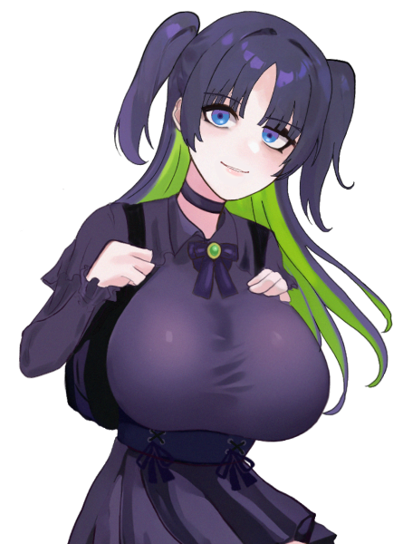
夢川めめ :
『｢──……夢なんてきっと醒めてしまうから キミがいる 明日を共に生きたい｣』
夢川めめ :
甘ったるさの消えた声でそう呟く。
そして再び瞼を上げる。
──…たったそれだけの動作だというのに、彼女はもう、｢別人｣になっていた。
夢川めめ :
歩幅から姿勢、立ち姿まで、先程までの夢川めめとはまるで違う。
……その場の空気が、彼女によって明らかに変えられた。
夢川めめ :
彼女は自信満々に踊り、歌ってみせる。
夢川めめ :
しかしながら、はっきり言って……夢川めめの披露したそれは。
たとえば琵琶坂藍依に比べると、アイドルのそれではなかった。
夢川めめ :
例えるなら平々凡々、普通、十人並。
目を覆いたくなるほど下手でも無ければ、目を見張るほどの輝きもまだない。
夢川めめ :
一指の先、ステップを踏む足取りの軽やかさ、どれを取ろうと偶像とは程遠い。
夢川めめ :
……けれども。
夢川めめ :
その顔は。
夢川めめ :
地上アイドル……そして一流の地下アイドルより、己の魅せ方を知っているその表情は。
夢川めめ :
｢十条ミツキがここに居る｣、と。
彼女をその身に降ろしたかと見まごうほど、完全に再現されていた。
GM :
審査員は、それぞれ難しい顔をしたり、その逆に、彼女の『演技』力を称賛するように頷く。
GM :
『ありがとうございます。十条ミツキの持つカリスマ性や空気感の再現度が素晴らしいですね……こちらの技術はどこで？』
夢川めめ :
｢えへ♡｣
｢めめ、褒められて伸びる子だから嬉しい〜♡｣
すっ、と瞬き1つで元の表情に戻って
夢川めめ :
｢技術……んふふ、そお言われると難しいな〜？｣
｢……強いていうなら、めめがめめとして生きるために、勝手に身についてたモノ…かなあ｣
｢めめ、色んな場所で色んな顔を必要とされてきたんだもん｣
夢川めめ :
｢……だからぁ｣
｢やれって言われたら、めめは誰にでもなれるよ｣
｢動画、写真、インタビュー記事……ゲラ1枚でもいいから、渡してもらえれば完璧に''成れる''の♡琵琶坂藍依ちゃんにも、あみらむちゃんにも、くるみんにも誰にでもね〜｣
夢川めめ :
｢だから……これがめめの自己アピール♡｣
｢ね、面白いでしょ？｣
｢中々こんな子居ないよ〜〜？｣
｢審査員サン達の色に好きに染められるオンナノコ、採用しない手はないと思うな〜？｣
上目遣いで
GM :
『仰る通り、面白い能力だと思います。この事については、きちんと検討材料とさせていただきますね』
GM :
『では次に、オーヴァードとしての能力を教えてください。事前資料によると、今回の「模倣」の力とは、だいぶ系統が異なるようですが……』
夢川めめ :
｢めめは元気になるお水を出したり〜、模倣するコトで情報を引き出したり……｣
｢諜報に向いてるんじゃないカナ〜って思ってまぁす♡｣
最大級のあの能力については自分から触れないままで
GM :
『………………』
GM :
『……わかりました。では、最後に』
GM :
『あなたは、アイドルとして何を成し遂げたいですか？』
夢川めめ :
｢それはね、ちゃ〜んと考えてきましたっ！｣
夢川めめ :
｢世界一ステキでぇ、おっきなめめの夢はね……？｣
クスクス、と笑いながら
夢川めめ :
｢めめが世界一かわいいってこと、世界中の皆に知らしめてやるんです♡｣
夢川めめ :
｢………それでぇ、その中でファンとか、めめのことを見てくれるヒトにもその旅路に着いてきてもらうの♡｣
｢ぜ〜〜ったいに目を逸らせない、振り落とされることも叶わない、……地の果ての、地獄の底まで｣
夢川めめ :
｢最終的に、世界中をめめ色に染めるのがめめの夢で〜す♡｣
きゃぴっと
夢川めめ :
──……彼女は、先程までの''模倣''とはかけ離れた無邪気な笑顔でそう言った。
夢川めめ :
夢川めめは何者にも【染むる】。
夢川めめ :
彼女は何者でもなく、また何色でもない。
夢川めめ :
悪く言えばがらんどう。
そして、よく言えば……『空色』。
夢川めめ :
夢川めめの色が見つかる日は、果たして。
夢川めめ :
……という感じで、享楽的！本能的！獣が棲む！
現代の闇をじっくりコトコト煮込んでお出しした女！
夢川めめです！
夢川めめ :
流石に言わなかったけど目的は金稼ぎ！アイドルとしての教示はどこへやら！
夢川めめ :
既に多種多様な地雷を各地に仕掛けている感がMAXですが、果たしてどうなっちゃうんでしょうか
誰か助けてください
ゆるして（先制謝罪）
夢川めめ :
めめが真にアイドルになるまでの軌跡を丁寧に書けたらいいならと思います！皆さんよろしくお願いします！！😑🙏
GM :
PC5のオーディションです。
GM :
『名前と年齢を教えてください』
澱 カシル :
「澱 カシル(おり カシル)です！ 年齢は………乙女の秘密です！」
GM :
『年齢は秘密……わかりました。えぇと……』
GM :
『……根本的な質問となるのですが、所属組織はどちらでしょうか？そもそも、どこから来ましたか……？』
澱 カシル :
「ん〜………特に言うことはないです！ 普通の子ですよ、あたし。」
「所属とかもない、かな。でもアイドルとして採用されたらちゃんとUGNに協力しますっ！」
GM :
『……………』
GM :
『……では、志望動機について教えてください。昨日、突然事務所にやってきたと伺っていますが……』
澱 カシル :
「あたしの憧れだった人が、アイドルやめちゃったから、かな。」
「色々あったんだけど……あたし、納得がいかなくって！」
「代わりにあたしがアイドルになってみようかな、って思ったんです！」
澱 カシル :
やや詰め寄るように、宣言する
GM :
『そ……そうですか。ちなみに、その「憧れのアイドル」について教えていただく事は？』
澱 カシル :
「Seventh Heavenの久能胡桃さんです！」
GM :
ざわ、と審査員席に動揺が走る。
GM :
『……わかりました、ありがとうございます』
GM :
『では、次に……自己PRなどはありますか？』
澱 カシル :
「えっと、歌もダンスもまだ練習中で…… あんまり上手くはないかもしれないです！ でも、諦めの悪さは誰にも負けませんっ！」
GM :
『なるほど。説得力がありますね……』
GM :
『それでは、少し系統が変わりますが。オーヴァードとしての能力について教えてください』
澱 カシル :
「………。ソラリスの力で、人をちょっとドキドキさせたり、立ち止まらせたり、ぼんやりさせたりできます！」
澱 カシル :
「(もちろん、嘘です。わたくしの本当のシンドロームはウロボロス……この身に満ちる呪いを浴びれば、動悸や金縛りが起き……多く浴びれば肉体か精神が死に至るでしょう……。)」
GM :
『……なるほど。戦闘でも転用しようがある……かも、しれませんね……』
GM :
『では、最後の質問です』
GM :
『アイドルとして成し遂げたい事はありますか？』
澱 カシル :
「(嘘をつくのは心苦しいですが、本当のコトはあまり言えません……)」
「(わたくしの正体がFHが呪物を凝縮させて生み出したレネゲイドビーイング、呪いの化身であるなどとは。決して言えるはずもなく……)」
澱 カシル :
「(ですが)」
「(この想い、この願いだけはわたくしの嘘偽りない本望。)」
澱 カシル :
「あたし、証明したいんです！」
澱 カシル :
「誰だって、あたしだってアイドルになれる。」
「強い想いがあれば、みんな輝くことができる。誰かの"好き"になれるんだって！」
澱 カシル :
FHによる特級呪物の闇鍋実験から生まれた、呪厄のRBです！
かつてはUGN、FH、ゼノス等など全方面を荒らしまくって、"呪い人形"のコードネームで忌み嫌われてました！
澱 カシル :
でもアイドル:Seventh Heavenのライヴをたまたま目撃したことで、明確な自我と善性に憧れる心を得ました！
澱 カシル :
当初はアイドルにこだわってはいませんでしたが、久能胡桃(Seventh Heaven所属アイドル)がアイドルを否定したため、
自分のアイデンティティを守るためにアイドルになって見せつけてやろうと決意しました！
澱 カシル :
アイドルとしての才能はごく普通です。気力と努力と呪力でカバーだ。
澱 カシル :
オーヴァードとしては強い……というより危険な存在です。
彼女の身体に満ちた呪いを無制限で浴びたなら、肉体と精神に甚大かつ不可視の損傷を負い、死に至るでしょう。
ただ、現在の本人は人間として生きると決めているので、争いごとも力の行使も最低限で済ませたい様子。
呪いが時々漏れだしているのはご愛嬌。
澱 カシル :
以上です！
GM :
……本日のオーディションは以上となります。審査結果については、追ってご連絡いたします。
GM :
ありがとうございました。
シーン6 『光』に手を伸ばして
GM :
登場PCは全員、集合シーンとなります。登場侵蝕をお願いします。
天海こよみ :
1d10+35(1D10+35) ＞ 2[2]+35 ＞ 37
虹之元ユメ :
1d10+41(1D10+41) ＞ 2[2]+41 ＞ 43
琵琶坂 藍依 :
1D10+42(1D10+42) ＞ 10[10]+42 ＞ 52
夢川めめ :
1d10+51(1D10+51) ＞ 9[9]+51 ＞ 60
澱 カシル :
1d10+52 出目ひっく！！！(1D10+52) ＞ 7[7]+52 ＞ 59
スタジオ
GM :
オーディションより3日後。
GM :
とある休日の昼過ぎ。キミたちは、住宅街の中にある小洒落たスタジオに集められた。
GM :
地下鉄の駅から徒歩10分ほどの距離の位置にあり、アクセスは良好。
GM :
3階建てのやや大きな建物であり、防音設備とダンスミラーが備えられたレッスン場、撮影時に便利そうな真っ白な部屋、ぬいぐるみやコスプレ衣装が押し込められた物置き部屋、プール付きの広々とした屋上まで揃っている。
GM :
キッチンやシャワールーム、寝室があったりなど、泊まり込みで作業をする事も出来そうだ。
琵琶坂 藍依 :
「────来た事ない場所だったから、念の為に早めに来てみたけど、思ったより分かりやすいところにあったな」ドアを開けてスタジオに入る
琵琶坂 藍依 :
入口付近から広めのスタジオ内を見回して
琵琶坂 藍依 :
「うん、流石に元いた事務所ほどじゃないけど、立地も設備もイイカンジ」そう呟く
琵琶坂 藍依 :
「……けど、私が一番乗りか」
琵琶坂 藍依 :
「どこで待機していればいいんだろう」小さく首を傾げる
GM :
キミがそうしていると、別室からがちゃりと別の人物が入ってくる。
GM :
キミは、その顔を見た事がある。……ちょうど、キミと同時期くらいに活動していた地下アイドル。
GM :
元TOXiC blueの空色担当・十条ミツキだ。
琵琶坂 藍依 :
「なっ……！！ 十条、ミツキ……！？」
十条ミツキ :
「琵琶坂藍依さん、だね。……って、確認しなくても分かるけど」
十条ミツキ :
「初めまして。今回、このプロジェクトに関わらせていただく十条ミツキです……まさか、アタシの事を知ってくれてるとは思ってなかったな」やや苦笑気味に
琵琶坂 藍依 :
「…………知ってるよ、知ってるに決まってる」
琵琶坂 藍依 :
「当時、業界でもドクアオの名前は有名だったし」
琵琶坂 藍依 :
「(なにより私は、ライバルだと思っていたから)」
琵琶坂 藍依 :
「…………でも、まだこの業界に残っていたなんて」
十条ミツキ :
「はは……嬉しい、って言っていいのかな。アタシこそ、キミにはずっと憧れてたから……今回のプロジェクトの名簿に名前があったのには、少しびっくりしちゃった」
十条ミツキ :
「オーヴァードに覚醒してからは、この支部の事務員として働かせてもらっているんだ」
十条ミツキ :
「……と、そうだ。他のメンバー達もこれから来るから……好きなところに座っていてくれていいよ。飲み物も冷蔵庫に冷やしているから、好きな物を持って行ってね」
琵琶坂 藍依 :
「…………ああ、うん」
琵琶坂 藍依 :
「(不思議な感覚だな、あの十条ミツキとこんな形で会う事になるなんて)」
琵琶坂 藍依 :
「(……お互い、炎上する前に別の形で会いたかったものだけど)」
琵琶坂 藍依 :
十条ミツキとの思わぬ遭遇で上の空だったのか、飲み物は取らないまま席に着く。
十条ミツキ :
「……？」好みの飲み物がなかったのかな…と首を傾げつつ、麦茶を注いだグラスを藍依の側に置く。
琵琶坂 藍依 :
「……あっ、ありがと」ボーッとしていたようで、目の前に置かれたグラスの氷がカランと鳴った音で気が付く
琵琶坂 藍依 :
「えっ、と……、他のメンバー達もこれから来る、って言ってたけど、そういえば私達って合計何人のグループになるの？」
十条ミツキ :
「あ、そういえばその事は通知してなかったね。直前までメンバーの構成悩んでて…最終的にはキミを含めて5人になったよ」
琵琶坂 藍依 :
「5人か……」
琵琶坂 藍依 :
「UGNにそれだけアイドル志望のオーヴァードがいるのは意外かも、戦闘ばかりしているイメージだったから」
十条ミツキ :
「はは、そんな戦闘民族みたいな……そういう子、結構いるんだよ？何なら、現役アイドルの中にもUGNでガッツリ働いてる子もいるし…」
琵琶坂 藍依 :
「へえ……、アイドル業だけでもプライベートの時間がなくなるくらいなのに、よくエージェント活動と両立できるな……」素直に感心して
琵琶坂 藍依 :
「…………」渡されたグラスを両手で持ち、その中に注がれた麦茶に目を落とす
琵琶坂 藍依 :
他に何か聞きたい事があるが聞き辛い、そんな表情を浮かべる。
十条ミツキ :
「……何か、不安でも？」首を傾げて
琵琶坂 藍依 :
「いや、不安は特に」
琵琶坂 藍依 :
「(……ないといったら噓になるけど、そうじゃない)」
琵琶坂 藍依 :
「…………それよりミツキ、ひとつ訊いてもいいかな」
十条ミツキ :
「……うん。どうしたの？」…少々、表情を硬くする。何となく、質問内容を察しているのだろう。
琵琶坂 藍依 :
「1年前からずっと、気掛かりだった事があるんだ」
琵琶坂 藍依 :
「答えづらいのなら答えなくてもいい」
琵琶坂 藍依 :
「けれど、かつて同業だった人間として、これから一緒に仕事をする仲間として、聞いておきたい」
琵琶坂 藍依 :
「ミツキの引退の原因になった、あの報道って本当────────」

虹之元ユメ :
「わあっ、こよみちゃん見てください！ すっごく綺麗なスタジオですよっ！」 玄関から張りのある声が響く。どうやらメンバーの1人が到着したようだ。
天海こよみ :
「ほ、ほんとだね……」 ぼそぼそとした小さい声も僅かに聞こえる
十条ミツキ :
「ぁ…わ、わ、どうしよう、来ちゃった…ごめん、その話は後でもいい……！？」藍依に向かって手を合わせる。一応話す気はあるようだ。
琵琶坂 藍依 :
「ああ、うん。大丈夫だから」
琵琶坂 藍依 :
「(……むしろ、ごめんって言うのはデリカシーがない私の方だけど)」
十条ミツキ :
「ありがとう…！」気にしていない様子で席を立ち、リビングのドアを開けて2人を迎え入れる
虹之元ユメ :
「こんにちは、ミツキさん！」朗らかに笑みを浮かべながら挨拶をしてリビングに入ってくる
天海こよみ :
「ミツキちゃん……！」 ユメと手を繋ぎながら、少し嬉しそうに名前を呼ぶ
十条ミツキ :
「こんにちは。2人とも、合格おめでとう！……って、2人はもう決まってたようなものだったけど」朗らかに笑いながら返す。
天海こよみ :
「あ、ありがとう……？」
虹之元ユメ :
「あはは、少しズルかもでしたけど、ありがとうございます！ 人一倍頑張らなきゃですねっ！」
琵琶坂 藍依 :
「────合格おめでとうって事は、この2人が？」ミツキちゃんに尋ねる
十条ミツキ :
「そう。3人とも、同じグループのメンバーだよ」一歩引いて、お互いを対面させる。
天海こよみ :
「こ……こんにち、は……」 少し俯いて目を合わせず、小声で
虹之元ユメ :
「よろしくお願いします！ 夏橙涙美……改め、虹之元ユメですっ！ ………？」 軽く会釈をしてから藍依の顔を見て、目を丸くしている。
琵琶坂 藍依 :
「うん、はじめまして」
琵琶坂 藍依 :
「私は琵琶坂藍依。これからは『iRiS』って名義で活動すると思うけど、好きなように呼んでね」
虹之元ユメ :
「や、やっぱり琵琶坂藍依ちゃんですよね……！ わあ、初めて間近で見たけどすごくかっこいい……！」Seventh Heavenのことを知っているのか、潤んだ瞳が羨望に輝いている
天海こよみ :
「……？」 そういえば昔聞いたことがある気がする、とチラッと顔を見てる
琵琶坂 藍依 :
「ふふ、ありがとう」そういう反応は久しぶりだな、と微笑んで
虹之元ユメ :
「ふ、不束者ですがよりょしくお願いしま……！」 緊張しておかしなことになっている
琵琶坂 藍依 :
「私達は同じグループのメンバー、つまりは対等なんだから緊張しなくて大丈夫だよ」落ちついて、と笑う
虹之元ユメ :
「は、はいっ！ なんだか頼もしい、です……！」軽く息を整えてニコリと微笑む
天海こよみ :
「……もうアイドルの人……？が、同じグループなんだ……」
十条ミツキ :
「あれ、こよみは知らないの？ちょっと意外かも」
天海こよみ :
「なんか、見たこととか聞いたことはある気がするんだけど……」
天海こよみ :
「ここ何年かは、ミツキちゃんしか見てなかったから……」
琵琶坂 藍依 :
「なるほど、ミツキのファンなんだ？」
十条ミツキ :
「あ、はは……いや、それにしたってアタシの事しか見てなさすぎるよ……」
十条ミツキ :
「……藍依は地上アイドルだったんだよ。本当にすごいんだから」
天海こよみ :
「そうだったんだ……」 だから名前に聞き覚えがあったのか、と納得する
琵琶坂 藍依 :
「…………そんなにすごくなんてないよ」目を伏せて
琵琶坂 藍依 :
「(たった一人の親友の苦悩さえ、気付けなかった私がすごいハズない)」
天海こよみ :
「……？」
琵琶坂 藍依 :
「……ううん、とにかく私は"訳アリの元アイドル"って覚えてもらえれば合ってると思うよ」
天海こよみ :
「訳……アリ……？」 炎上騒動のことを知らないので小首を傾げてる
虹之元ユメ :
「色々ありましたけど、私はまたアイドルの藍依ちゃんが見られると思うと嬉しいです！」炎上の事は知っているが、特に言及はしない
十条ミツキ :
「……ん、と…そろそろ14時か…中々揃わないなぁ」この業界じゃ良くある事だけど、と時計を見上げながら呟く。
琵琶坂 藍依 :
「残りのメンバーは2人、だっけ」
十条ミツキ :
「そうなんだけど、片方の子はともかくもう1人の子がちょっと…うーん」
天海こよみ :
「……まだいるんだ……」 少し緊張して
虹之元ユメ :
「5人のメンバーなんですね、どんな子が来るんでしょう……」
夢川めめ :
皆が丁度残りのメンバーに言及した瞬間、事務所の扉が勢いよく開く。
夢川めめ :
｢いっけな〜〜い！遅刻遅刻〜☆｣
｢バイトが長引いちゃってぇ、ほんといやん……きゃーっ！！きゃー！！！｣
ドタバタと事務所に上がり込むやいなや、黄色い悲鳴が飛び出す。
片手は口元、そしてもう片方の手はミツキとアイを交互に指さしている
十条ミツキ :
「……っ！？」驚くあまり声が出ないまま、自分を指差す
琵琶坂 藍依 :
「……なんだか差されてるね私達」反面、冷静に
天海こよみ :
「っ！？」 突然の大声に驚いて硬直してる
虹之元ユメ :
「ハツラツとした方……！ こんにちはっ！！」
夢川めめ :
｢やっっっっ……ば！なんでみつきちとびわち居るの〜！！？｣
｢え、やばいやばいやばい！！めめ、アイドルを知る為に2人で勉強させてもらってえ、だからいっぱい見てて〜〜…！！握手握手！ねえねえめめと握手しよ〜！？！｣
とりあえず目の前の出来事を順々に脳で処理しているらしい。
まずはミツキとアイ2人に近寄って、ずい！と手を差し出す
十条ミツキ :
「な…え、えぇ〜〜……コミュ力すごいね、アタシ達と全然タイプ違うと思うんだけど……」驚く反面、素直に感心した様子で手を握り返す
琵琶坂 藍依 :
「そうだね、こういう子は私の周りにもいなかったから新鮮かも」同じように手を握り返す
夢川めめ :
｢や…っっっっ！！！｣
｢ありがと〜！！めっちゃ好き！！！！♡｣
そのまま握手に移行すると思いきや、握られた手をぐいっと引き……
むぎゅし！！！と2人の肩をいっぺんにハグします！
十条ミツキ :
「わぁっ！？」警戒心が解かれていたので簡単にハグされる
琵琶坂 藍依 :
「……初対面で抱きつかれたの初めて」ハグされ
夢川めめ :
｢ん〜〜………♡｣
｢よし、元気チャージできた〜！｣
へらへらと笑ってから離れ
夢川めめ :
｢……てかきゃわいい子も居るし〜！！めっちゃみてるよ！こにちわ！！｣
こよゆめへレイジがやっていた自分の両目に指さし、相手に向けるジェスチャーをして
夢川めめ :
｢この子達ももうアイドルなの？？めめ、アイドルの巣に放り込まれちゃった…？｣
絵にするなら｢🥺｣という表情をして。
ハグに移行せんと2人にじりじり近寄っている
天海こよみ :
「……っ、ひっ……」 じりじりと近寄られて、涙美の後ろに隠れる
虹之元ユメ :
「わ、わあ……！ パッションに溢れた人……！」
虹之元ユメ :
「こよみちゃんには刺激が強いですかね……？」ひっそりとこよみちゃんを労う
天海こよみ :
「あ、あの……えっと……」 小さく震えてる
夢川めめ :
｢ね、げんき〜？めめはね、夢川めめっていうんだ〜♡｣
｢こよこよちゃんってゆうの？とりま握手しとく？｣
顔を覗き込んでから、ニコッと笑ってすっと手を差し出す
天海こよみ :
「こ、こよこよ……？」
天海こよみ :
「……え、えと……。う……うん……」 差し出された手……の、指の先を警戒した様子でちょんと触れる
夢川めめ :
｢え、きゃわじゃん……！あは、指たっちだね〜！｣
｢はい、これでなかよし〜♡｣
指先どうしぺちぺち何度か合わせて
天海こよみ :
「な、なかよし……？なのかな……」 何度かぺちぺち合わされた後、手を引っ込める
夢川めめ :
｢……で！こんちわちゃんはなんてお名前？｣
｢めめはめめだけど……ぎゅってしとく？｣
くるん！とユメちを向いて
虹之元ユメ :
「はいっ、虹之元ユメです。よろしくお願いしますね、めめちゃん！ その髪色も素敵です！」 腕を広げてハグの準備は万端らしい
夢川めめ :
｢え、わかる！？！分かり手！？えへ、えへへ…！うれし〜♡｣
｢ゆめちのメッシュもさいこ〜！ぎゅ〜〜♡♡｣
嬉しそうににっっっこにこしながらむぎゅー！と抱きつきます！本当に嬉しそうだ
虹之元ユメ :
「あ、ありがとうございます！ このメッシュ、お気に入りなんです……」優しく抱きしめて、軽く背中をぽんぽんと叩きます
天海こよみ :
「……ああいうのって、普通……？なの……？」
慌ててユメから離れ、ミツキの傍に寄って服の裾を握る。
悪い人や怖い人ではないとは思ってるが、困惑した目でめめを見ている。
琵琶坂 藍依 :
「少なくとも私の知る普通ではないかな」あっけにとられて
琵琶坂 藍依 :
「(あの報道があった以上、同じグループのメンバーでも、私に悪意を持って接してくる覚悟をしてきたから、こうして友好的に関わってくれるのは嬉しい誤算ではあるけど)」
十条ミツキ :
「そうだね…いや、でもきっと悪い子じゃないよ…」よしよし、と背中をポンポンしながら苦笑いしている
天海こよみ :
「うん……」
夢川めめ :
｢えへえへ……｣
｢あれ……てゆーかぁ、これで全員？｣
｢めめのセンサーに狂いはないはずなんだけど〜…むむむ｣
ハグしたまま、ゆめちの肩越しにミツキちゃんに聞いてみます
十条ミツキ :
「どんな勘の良さしてるの……ううん、あともう一人いるはずなんだけど……」
澱 カシル :
「 ここにいますよ 」
めめの背後から、耳元に囁く声。
澱 カシル :
ワープでも、高速移動でもなく。
ただ、"いた"。
澱 カシル :
ようやく全員が彼女の存在を認識する。
夢川めめ :
｢……！ぴゃん！！！お耳が…！｣
はわわ…！とゆめちを鯖折りせん勢いで思わず抱きしめ
澱 カシル :
「あっ、ごめんなさいっ！ びっくりさせちゃいましたか？」
天海こよみ :
「っ！？」 反射的にミツキに抱き着く
虹之元ユメ :
「ふぎゃっ……！ ご、5人目の方……ですか……っ！！」 色々な要因でミチミチと音を立てている
澱 カシル :
「はいっ！ 澱 カシル(おり カシル)です！ 皆さん、よろしくお願いしますね！」
勢いよくお辞儀する。
琵琶坂 藍依 :
「────────」その言葉が耳に入っていないのか、両目を見開いて、あたかも"幽霊"でも見たように硬直している
夢川めめ :
｢え、やだこわい…！！めめ見えな〜い！！ゆめち、ついでに抱きしめといてえ…！｣
十条ミツキ :
「話には聞いてたけど、思ってたより強烈だったね……ええと、いつからこの部屋に……？」こよみの頭を撫でながら
澱 カシル :
「えっと………最初から居たんですけど、なんだか話しかけるタイミング見失っちゃって………えへへ」
虹之元ユメ :
「ま、まず離してもらわなきゃ……こ、こんにちはカシルちゃん……！」冷や汗をかきつつもニコリと笑みを浮かべて
天海こよみ :
「最初から……いたの……？」 全然気付かなかった、と目を丸くしてる
夢川めめ :
｢はわわ…ごめんねゆめち…！｣
やっと離れて
｢カシルちゃんっていうの？ふわ〜……アンティークお人形さんみたい！きれ〜！｣
澱 カシル :
「………。ありがとうございます、めめさん！」
人形、というワードに少しだけ反応を遅らせるが、笑顔で対応する
澱 カシル :
「ちゃんとお名前聞いてましたよ〜。ミツキさんに、こよみさんに、ユメさんに、めめさん。」
澱 カシル :
「それに……琵琶坂 藍依さん、でしたよね。 改めて、"初めまして"です！」
琵琶坂 藍依 :
「……………………」
琵琶坂 藍依 :
「はじめ、まして……？」
琵琶坂 藍依 :
「("初めまして"だとか"澱 カシル"だとか、何の冗談……？)」
琵琶坂 藍依 :
「(だって貴女はどこからどうみても、久能────────)」
琵琶坂 藍依 :
「……………………」それきり黙りこんでしまう
十条ミツキ :
「……？」二人を見比べて（大丈夫かな…）と不安そうな表情を浮かべた後、「……え、えっと！」と声を上げる。
十条ミツキ :
「カシル、それと、こよみとユメとめめ。これからミーティングを始めようと思うから……飲み物、用意するね。何がいい？」
天海こよみ :
「えっと、ぼく緑茶……」
夢川めめ :
｢めめは魔剤あるからだいじょ〜ぶ♡ありがとぉみつきち！｣
｢…むしろ飲む？飲むだけで元気になれるめめ印の魔剤だよ！｣
エッヘン！と胸を張り うおでっか
虹之元ユメ :
「私も緑茶で……あ、お手伝いしますよ！」袖を巻くって、やる気のあるポーズをする。むんっ
澱 カシル :
「はーい！あたしも緑茶でお願いします！ 出来れば熱〜いやつで！」
片手を上げて、元気よく
十条ミツキ :
「マザ……？アタシは大丈夫かな……え、えっと、他のみんなは緑茶ね！」
十条ミツキ :
「ユメありがとう、少し手を貸してくれると嬉しいかも…！」
虹之元ユメ :
「お任せを！」トテトテとミツキに着いて行きます
天海こよみ :
「あ……」 自分も手伝おうか、と一瞬思ったがやっぱりやめて、適当な椅子に座る
十条ミツキ :
「うん。……こよみ、ありがとね」すれ違いざま、ぽんと頭に手を触れて。
天海こよみ :
「……！う、ううん」 触れられてから、ぷるぷると首を横に振る
GM :
……さて、仕切り直して。
GM :
リビングに、今回の任務の……グループメンバーが集った。
GM :
それぞれの手元に、冷たい麦茶や緑茶、熱い緑茶が用意された中、ミーティングが始まる。
澱 カシル :
熱い緑茶を一口頂く。アイドルは未経験と言っていたが、姿勢は良いようだ。
琵琶坂 藍依 :
「…………」その様子をジッと見つめる
琵琶坂 藍依 :
「(彼女は猫舌だったハズ……、体格も違うし別人……？)」
琵琶坂 藍依 :
「(そもそも死人が記憶喪失で蘇るなんて……でも、顔は瓜二つで……)」
澱 カシル :
視線に気づき、ちらりと藍依の方を見やる。
長い睫毛、大きな瞳。
紛うことなき、久能胡桃の顔立ち。
澱 カシル :
「(まさかSeventh Heavenの藍依さんがいらっしゃるなんて……体付きは違うとはいえ、顔は胡桃さんそのままですから………勘付いているのでしょうか……) 」
琵琶坂 藍依 :
「…………」
琵琶坂 藍依 :
「(考えていても仕方ない、か)」
琵琶坂 藍依 :
「────それでミツキ、ミーティングって何をするの？」
十条ミツキ :
「ちょっと待ってね……えっと、これでいいのかな……えぇい、よくわからないな！！」パソコンを不慣れそうに弄っていたが、直接ぴっと指差す。
GM :
バチッ！という音と共にモニターが揺れ、テレビ通話アプリが開き……画面に、見覚えのあるお面が映る。
十条ミツキ :
「これで良し。プロデューサー、聞こえてる？」
オーメン相良（リモート） :
「……一瞬、凄まじい音が聞こえたぞ。何があった？」
十条ミツキ :
「……なんにも～」
オーメン相良（リモート） :
「……………」
天海こよみ :
「お、お面さん……！ミーティング……？っていうの、するんだよね……？」 話を逸らすように言う
澱 カシル :
「あ、お面の人！ お世話になってまーす！」
手を振る。そもそもオーメン相良とは話が即決しすぎたため、名前すら聞いていない。
夢川めめ :
｢何？この凄まじいお面｣
｢………やば〜！めっちゃ面白いね〜♡｣
一瞬地声が出たが、直ぐに繕って
虹之元ユメ :
「社長さんお久しぶりです、ミーティングってどんな感じなんでしょう？」
オーメン相良（リモート） :
「ふむ……うむ。やはり、集まると一層華があるな」うんうんと頷く。
オーメン相良（リモート） :
「今日は、メンバーの顔合わせと任務についての説明、その他諸々の説明を行う予定だ……さて、改めて」
オーメン相良（リモート） :
「私の名前はオーメン相良。UGNプロの社長兼プロデューサー兼支部長だ。本日はリモートにて失礼」姿勢を正し、礼をする。
天海こよみ :
「オーメン……お面だから……？」
澱 カシル :
「よろしくお願いします〜！ 採用してもらえて、とっても嬉しいです！」
深々とお辞儀を返す
虹之元ユメ :
「はい、皆さん勢ぞろいです！」オーメンの礼に軽く会釈で返して
オーメン相良（リモート） :
「うむ、よろしく頼む。それで…」
十条ミツキ :
「……アタシは、マネージャー兼トレーナーの十条ミツキです。1年前まで現役アイドルでした」
十条ミツキ :
「基本的にはプロのトレーナーさんが指導してくれるから、サブ的な補助にはなると思う……けど、マネージャーとしてはちゃんとやっていくよ。改めてよろしくね」そう言って微笑む。
天海こよみ :
「う、うん、よろしくね……！」 ミツキちゃんに傍にいて欲しいという要望が通って嬉しそうに笑みを返す
琵琶坂 藍依 :
「ミツキがマネージャー……」ライバルだと思っていた相手がマネージャーになると聞いて、改めて複雑な気持ちになる
虹之元ユメ :
「よろしくお願いします！ ミツキさんがマネージャーだなんて心強さしかないですね！」
澱 カシル :
「よろしくお願いしますっ！ マネージャーってどんなお仕事か詳しくないんですけど……ミツキさんはとっても頼りになりそうですっ！」
深々とお辞儀する
夢川めめ :
｢へえ〜！みつきちがお世話してくれるんだ〜〜、めめちょううれしい〜♡｣
｢めめも出来る範囲で頑張るねっ！みつきちの技、目で盗ませてもらうから〜♡｣
十条ミツキ :
「……」好意的に受け止めてもらえた事に、ほっとした様子を見せる。彼女なりに緊張していたのだろう。
十条ミツキ :
「それじゃあ……今度は、自己紹介をお願いしていいかな。趣味とか特技とか……あと、オーヴァードとしての能力とかも説明してくれるといい感じじゃないかな？」最終的なところは任せるよ、と付け足して。
十条ミツキ :
「順番は……うーん」こよみをちらりと見てから、首を傾げる。
十条ミツキ :
「……背の高い順、とか？」
天海こよみ :
「背の順……」 それならきっと後の方だ、とちょっと安心する
虹之元ユメ :
「ならば～、え～っと？」藍依ちゃんから私の順ですね！ と、声にだして確認してみる
琵琶坂 藍依 :
「そうだね、私が一番」
十条ミツキ :
「じゃあ、藍依からお願い」頷く
琵琶坂 藍依 :
「……うん、名前はもうみんな知ってると思うけど、改めて」
琵琶坂 藍依 :
「私は琵琶坂藍依。このグループでは『iRiS』って名義で活動予定の元アイドル」
琵琶坂 藍依 :
「ビワでもアイでも好きに呼んで。私も皆を好きに呼ぶから」
天海こよみ :
「じゃあ、アイちゃんって呼ぶね……」
澱 カシル :
「よろしくね、藍依ちゃん！」
にこり、と笑いかける。
虹之元ユメ :
「よろしく、です！」
夢川めめ :
｢びわちがiRiS…！？はわ、めちゃかっこかわいい……｣
｢えへへ、よろしくねびわち…！｣
琵琶坂 藍依 :
「うん、皆よろしく」優しく微笑んで
琵琶坂 藍依 :
「……それから、趣味も話した方がいいんだったよね」
琵琶坂 藍依 :
「強いて言えば散歩？」最近はできてないけど、と首を傾げて
琵琶坂 藍依 :
「特技は特になくて、能力は……そうだな……」
琵琶坂 藍依 :
「ちょっと借りるね、ミツキ」テーブルの上のペンを手に取る
十条ミツキ :
「ん？どうぞ…？」不思議そうに見ている
琵琶坂 藍依 :
「うん、ありがと」
琵琶坂 藍依 :
「────それじゃ、見てて」そう言うとパチンと指を鳴らす
琵琶坂 藍依 :
瞬間、藍依が手に取ったペンは光に包まれ、
琵琶坂 藍依 :
藍色の花弁が美しい一輪の菖蒲に早変わり。
琵琶坂 藍依 :
「こんなカンジで、私は映像の投影ができるんだ」
天海こよみ :
「わ、きれい……」
虹之元ユメ :
「わあ、見事な投影です！」小さく拍手を送る
澱 カシル :
「おお〜っ！！ アヤメの花ですね！」
ぱちぱちと拍手する。
夢川めめ :
｢ふわ、これどうなってるの…！？｣
｢あ、あれ？触れそうなのに触れない…！｣
つんつんしようとしながら
琵琶坂 藍依 :
「……ふふ、光で作ったホログラムだから実体はないんだよ」
琵琶坂 藍依 :
「あと本当の私の能力は、これだけじゃなくて光の吸収と放出がメインだったりするんだけど」
琵琶坂 藍依 :
「ここで全力で実演すると、カメラ越しでプロデューサーの目が潰れるかもしれないから、機会があればその時に」
オーメン相良（リモート） :
「私より皆の方が危ないのでは？」首を傾げる
琵琶坂 藍依 :
「いや、もし実演するならプロデューサーに目掛けて打とうかなって思ってたから」
オーメン相良（リモート） :
「……冗談でもやめたまえ」面を付け直す仕草
琵琶坂 藍依 :
「ふふ、流石にしないよ」スカウトの一件で少し気を許しているのか微笑んで
琵琶坂 藍依 :
「……と、能力紹介は以上かな」
琵琶坂 藍依 :
「────ああ、そうだ」
琵琶坂 藍依 :
「はい」とコヨミちゃんにホログラムの菖蒲を差し出す
天海こよみ :
「え……？」
琵琶坂 藍依 :
「……緊張しなくて大丈夫だから」と微笑みかける
琵琶坂 藍依 :
コヨミちゃんが事あるごとに知人の二人にくっついている様子を見て、人見知りだろうと察して気にかけているらしい。
天海こよみ :
「う、うん……。もらって良いの……？」
琵琶坂 藍依 :
「勿論」ただのペンだけど、と笑って
天海こよみ :
「……ありがとう」
天海こよみ :
小さく笑みを見せながら両手で受け取り、光の花を不思議そうに見つめてる。
虹之元ユメ :
「優しいんですね、藍依ちゃんは」そのやり取りを微笑ましそうに眺めて
琵琶坂 藍依 :
「……そう？あんまり言われたことないけど」
虹之元ユメ :
「そうですよ、こよみちゃんの事を気にかけてくださってありがとうございます」藍依の行動を首肯して、朗らかな笑みを浮かべる
琵琶坂 藍依 :
「ふふ、どういたしまして」なんだか保護者みたいだ、と思いながら
天海こよみ :
「あ、あと……」
天海こよみ :
「これから、よろしくね……。さっきぼくだけ言えてなかったから……」 少し緊張が和らいだ声で
琵琶坂 藍依 :
「────こちらこそ、よろしくね」優しく笑って
天海こよみ :
「うん」
琵琶坂 藍依 :
「……戦闘経験はないけど、その代わりアイドルとしてのキャリアは一番あるから」
琵琶坂 藍依 :
「ミツキと一緒に、技術面で皆をサポートしていこうと思ってる」
琵琶坂 藍依 :
「…………それと最後に、私に聞きたい事があれば遠慮なく聞いて」
琵琶坂 藍依 :
「同じグループの仲間になった以上、隠し事するつもりないから」答えられる範囲で全て答えるよと
天海こよみ :
「わかった……」 こくこくと頷く
虹之元ユメ :
「はい、頼りにしていますっ！」
夢川めめ :
｢え〜〜〜、めっちゃ頼りになる〜！！｣
｢めめ、アイドルの事よくわかんないからぁ、びわちとみつきちの2人いてくれるの超助かる〜〜！｣
｢うふっ、これから末長くよろしくね〜♡｣
十条ミツキ :
「……すごいね、アイは…」小さく頷く
十条ミツキ :
「…よろしくね。『iRiS』」
琵琶坂 藍依 :
「────うん、よろしく」
十条ミツキ :
「……さて、次に背が高いのは……ユメ、かな？」
虹之元ユメ :
「はい、私ですね！」
虹之元ユメ :
席から立ち上がり、軽い咳払いの後に周りを睥睨してゆっくりと口を開く。
虹之元ユメ :
「改めて、私の名前は虹乃元ユメです！ まあ、今のは芸名で───UGNで通っている本名は"涙の旋律"夏橙涙美と言います！」
虹之元ユメ :
芸名とコードネームを含めた名前を紹介してからペコリと一礼して、満面の笑みを見せながら顔を上げる
天海こよみ :
小さくぱちぱち拍手している。
虹之元ユメ :
「次は～、特技ですね！」こよみに微笑んでみせてから次の話題に映る
虹之元ユメ :
「特技はギターを使った演奏です。流行りの曲から洋楽まで……満遍なく！」
虹之元ユメ :
「……作曲の方も少し嗜んでいます！ お聞かせするのは恥ずかしいですけどね、えへへ」
琵琶坂 藍依 :
「へえ、作曲まで……すごいね」
虹之元ユメ :
「はい、いつかの為にと技術と知識は身に着けていたんです！ どこまで通用するかは未知数ですけども……」
夢川めめ :
｢きっとゆめちなら通用するよ〜！あは、自信もってこ？｣
ニコニコしながら
天海こよみ :
「……もしかしたらこのグループの曲も、ユメちゃんが作るのかな……？」
澱 カシル :
「わぁ………！ それ、素敵です！」
こよみの発言を肯定する
虹之元ユメ :
「うぇ、えへへ……どうなんでしょう。しても良い、のかな？」褒められて紅潮した顔を画面越しのオーメンに向けて、様子を伺う
オーメン相良（リモート） :
「勿論。むしろ、作ってくれるのならば歓迎だ」頷く
虹之元ユメ :
「そ、そうですか？ では……はい、頑張らせて頂きます……！」 決意が満ちた表情を浮かべる
琵琶坂 藍依 :
「アイドルと作曲の二足の草鞋か……」
琵琶坂 藍依 :
「日々のレッスンの傍ら、作曲まで熟すのは本当に大変だと思うけど……大丈夫……？」心配そうに
天海こよみ :
「あんまり、無理はしてほしくないかも……」
夢川めめ :
｢めめもできるだけサポートするけどぉ…むりめなら言ってね？めめ心配〜〜｣
🥺顔で
虹之元ユメ :
「心配はご無用ですよ。今までUGNの任務等で中々時間が割けませんでしたが、今はこよみちゃんの護衛とアイドル活動がセットなので……時間の問題はありません！」
虹之元ユメ :
「それに体力の方も、ほら2人分はあるので！」むんっ、と自信満々に胸を張る
虹之元ユメ :
「めめちゃんも応援ありがとう！」
天海こよみ :
「そっか……」 そう言うなら、と素直に信じる
オーメン相良（リモート） :
「ひとまず、今の君の本業はアイドルだからな。作曲などは二の次だと考えているよ…余裕ができたら取り組むと良い」
澱 カシル :
「？ あたしも応援してます！」
いまいち人間の体力の目安が分からないので、二足のわらじは大変なのかな、と考える
虹之元ユメ :
「はい……！ 皆さんが優しくて、更に嬉しくなってきてしまいますねっ」喜色の雰囲気を纏って
虹之元ユメ :
「あ、えーっと……私の力についてもお話しなきゃですよね」
虹之元ユメ :
「オーヴァードとしての能力もそれに付随したもので、音楽と……ハヌマーンとソラリスの力を併用した後方支援に長けています。だから、直接戦うのは苦手なんですよね」
虹之元ユメ :
実際に体験したミツキの方を見て、少し不甲斐なさそうな苦笑いを浮かべている
天海こよみ :
「でも、ユメちゃんがギター弾いた時は……ミツキちゃんが、なんか……」
天海こよみ :
「ぶわ～ってなってたよね……」 勢いづいたということを言いたいらしく、腕を控えめに広げる
十条ミツキ :
「ふふっ、そうだね。ぶわ〜ってなった」こよみの言葉にクスクス笑ってから、ユメを見る。
十条ミツキ :
「アタシも戦闘が得意ってわけじゃなくて……あっ、バリアを張ったりするのが得意なんだけど。それでも、オーヴァードを2人退けられるくらいの力を発揮できたんだ」
十条ミツキ :
「それに、演奏もすごく良かった！テンションが上がるというか、心の底から元気になれたよ」
虹之元ユメ :
「そ、そうですか～？ えへ、力になれるってなんだか嬉しいですね……」頬を伝う涙を人差し指で拭って、力なく笑う
虹之元ユメ :
「……はい、もし戦いが起きた時は普段以上の力を発揮できるかも。ということでした……！ 素の演奏もそれくらいだと良いなぁ……」
天海こよみ :
「……ユメちゃんなら、きっと普通の演奏もそうなれる……んじゃ、ないかな……」 根拠は無いが、応援するように言う
虹之元ユメ :
「！ ええ、きっとそうなれますよね」 胸に置いた手を握って、柔らかい笑みが浮かぶ
天海こよみ :
「うん」 小さく笑顔を返す
虹之元ユメ :
「……ということで、アイドル活動の方も一生懸命！ 監督してくれるミツキちゃんと藍依ちゃん共々、皆の足も引っ張らないように頑張りますので！」
虹之元ユメ :
「これからよろしくお願いしますっ！」ハツラツと、威勢の良い挨拶で締める
十条ミツキ :
「うん、よろしく。ユメには任務が始まる前からたくさん助けてもらっているから、頼りにしてるよ」元気の良さそうな姿に微笑む
十条ミツキ :
「それじゃあ、次はめめにお願いしようかな」
夢川めめ :
｢はぁ〜い♡じゃあめめが自己紹介するね〜？｣
｢……ぁ、その前にぃ…ねね、皆そろそろお茶とか無くなってない〜？｣
｢これからもおはなし続くだろうしぃ、めめが汲んで来てあげよっか？｣
両手を合わせて、名案でしょ？と
天海こよみ :
「え？う、うん……？」 じゃあ、とまだ少し中身が残ってるコップを差し出す
澱 カシル :
「ご親切にありがとうございます！ いただいちゃいます！」
虹之元ユメ :
「お言葉に甘えちゃいましょうか！」ススっと前にコップを差し出して
琵琶坂 藍依 :
「うん、それならおねがいしようかな？」今度は皆と同じので大丈夫、と付け加え
夢川めめ :
｢おっけ〜♡｣
｢それじゃあ…コップをお持ちになって少々お待ちくださいませぇ、ご主人様♡｣
完全にメイドカフェモードをインストールしているらしく、甘々の声でポットに水出し用ティーパックを入れ、更にポットを握ります
夢川めめ :
｢こほん……｣
｢美味しくなあれ、美味しくなあれ、もえもえきゅん♡｣
半ば使い古された掛け声とともに手に力を込める……
と同時に、透明なポットの底から水がこんこんと湧き上がります！
天海こよみ :
「も、もえもえきゅん……？」 水が湧いてくるポットをじっと見ながら
虹之元ユメ :
「ユメ、知ってます！ メイド喫茶というものです！」
「そしてこれは……」ポッドを覗き込んで感心している
十条ミツキ :
「…すごい。これ、普通のポットなのに…」目を見開く
澱 カシル :
「おー………？」
皆と同様にポットを見つめる
琵琶坂 藍依 :
「……呪文を唱えると、水が湧きだす能力？」首を傾げ
夢川めめ :
｢……ふふ♡｣
｢お茶ができるまでにぱーっと自己紹介しちゃうね？｣
｢出来るメイドはタイムスケジュールもバッチリなんだもん！｣
夢川めめ :
｢めめの名前は夢川めめ！元々UGNでお仕事してて、そっちではどりぃむ♡おぶ♡ばたふらいって呼ばれてたかも〜！｣
｢歳は19歳でえ、みんなよりはちょーっとお姉さんかな？ふふっ｣
天海こよみ :
「ミツキちゃんと同い年だ……」
虹之元ユメ :
「可愛いお名前です！ 私も同い年ですよっ」屈託のない笑顔で親近感を覚える
十条ミツキ :
「(………プロデューサーからそれとなく聞いてる事については黙っておこう…)」
琵琶坂 藍依 :
「19歳……それならこのグループの中では、17歳の私がちょうど真ん中の年齢になるのかな」コヨミちゃんとカシルちゃんを見て
天海こよみ :
「ぼく、14歳だから……そうかも……？」
澱 カシル :
「うんうん！」
相槌だけ打って、自分の年齢には触れない。
夢川めめ :
｢ふふ、チームのおねえさんとして頑張りまぁす♡｣
｢それでねそれでね、UGNではちょーほー？かんじゃ？まあ、FHさんとかわる〜い人達のところに潜入してぇ……仲良くなったり、こう……死んでもらったり？あは、してもらったりしてたかな〜？｣
天海こよみ :
「死……！？」
琵琶坂 藍依 :
「…………」
琵琶坂 藍依 :
UGNの活動内容は知っていたが「殺人を犯した」と自ら笑顔で語る姿に驚愕する。
澱 カシル :
「おぉ〜！ 頼れるおねえさん！」
ぱちぱち、と拍手する。
話題の物騒さに対し、態度が変わっていない。
夢川めめ :
｢あっ、やだやだごめん！！死んでもらったは言いすぎたかも…？｣
｢なんだろぉ……二度とオーヴァードとして働けなくなってもらってた感じ…？やん、説明難しい〜！めめおばかさんだからぁ……｣
ふぇえ、と困った様子で
夢川めめ :
｢……とにかく、そーゆー感じかな？いつもはメイドさんカフェとかぁ、コンカフェでお仕事してまぁす♡｣
｢だからね、特技は真似っ子すること！……こう見えて名役者なんだよ、めめ！｣
胸を張り
天海こよみ :
「う、うん……？」 ちょっと戸惑いながら聞いてる
虹之元ユメ :
「……そっか、めめちゃんは芸達者なんですね！」UGNのほの暗い部分を認知はしているので、軽く流す
澱 カシル :
「はいはいっ！ あたしも上手く真似するコツ、知りたいです！」
夢川めめ :
｢はいっカシルちゃん！｣
先生のように指を指してから
｢ん〜……なんだろぉ、一言で言うならぁ…｣
｢"スイッチ''を作ってあげること、かな？｣
にこ、と微笑んでから…
夢川めめ :
すうっと目を閉じて、それからゆっくり耳元で指を弾く。
──パチン。
───パチン。
─────パチッ。
夢川めめ :
｢……うん。｣
｢そう、だね。正しくはスイッチを作って……合図で''自分を殺してあげること''、かな。｣
打って変わって、甘い声からクールな声に。
表情も相まって、見た目は同じはずなのに先程とはまるで別人に見える。
琵琶坂 藍依 :
「────！！」
澱 カシル :
「なるほどぉ〜！」
ぱちぱち、と拍手する
澱 カシル :
「(わたくしの切り替え方は間違ってない、安心しました)」
澱 カシル :
「(殺すのは、得意ですから……)」
虹之元ユメ :
「自分を殺す、ですか……難しいことをやってのけているのですね」思う所をうやむやにして、素直に感心を見せる
天海こよみ :
「……すごいけど、なんだか……ちょっとだけ……」
天海こよみ :
「さびしい……？気がするね、自分を殺す……」 呟くように言う
澱 カシル :
「………。」
こよみの発言と、めめのアドバイスを考える
琵琶坂 藍依 :
「(自分を……殺す…………)」親友の死に様を思い返し、目を伏せる
琵琶坂 藍依 :
「私は演技指導で"真逆"の事を教わったけど……、なるほど……」
琵琶坂 藍依 :
「たしかに、自分で名役者と名乗るだけの事はあるね」
琵琶坂 藍依 :
「────それ、私の演技でしょう？」
夢川めめ :
｢……うん。｣
｢ふふ、本人の前でやるのはどうかと思ったけど……｣
｢説明するよりも、この方が早いでしょ？｣
｢それに──……｣
夢川めめ :
｢……めめ、びわちのこと大好きだもん♡｣
｢あはっ、だからついつい真似しちゃった〜！｣
パチ、と指を弾きながら。
まるでボイスチェンジャーを無理に切ったように、発声途中で声が元に戻って。
琵琶坂 藍依 :
「…………」
琵琶坂 藍依 :
「(ファンの好き、とは違う気がするのが少し気になるけど)」
琵琶坂 藍依 :
「(……それはさておき)」
琵琶坂 藍依 :
「すごいね、演技については私より上手かも」ドラマ出演した立場から忌憚なき意見を述べる
夢川めめ :
｢え〜〜ほんと！？えへっ…そぉ言って貰えるのうれし〜！めめ、めめのこと褒めてくれるヒトだ〜いすき♡｣
にっっっこにこになりながら
夢川めめ :
｢ふふーん、いっぱい褒められたらやる気出て来ちゃった！じゃあ、最後に…皆には特別にこんなのも見せてあげるね〜？｣
夢川めめ :
そういうと、そろそろ緑色の出てきたポットを手に取り……再び指を弾く。
……すると、瞬間、ポットにめめの影が纏わりつき。
夢川めめ :
ポットはいわゆる食虫植物、ウツボカズラの捕虫袋へと姿を変えていた。
めめはそんなことも全く意に介さず、呆気に取られる皆を他所に、上機嫌にお茶をコップへついでゆく
天海こよみ :
「え？え……？」 ちょっと待って、と言えず困惑しながらその様子を見ている
澱 カシル :
「まあ！ ウツボカズラですね！」
両手を重ねて、目を輝かせる
虹之元ユメ :
「……ちょ、めめちゃん、ちょちょっ！ これアレですよね！ 食虫植物！」呆気に取られていた意識を揺り戻してツッコむ
夢川めめ :
｢ふふ、ゆめちってば…心配しないで？……ほら！｣
ふ、と影の投影が消え、元のポットが姿を現す。
｢めめね、オーヴァードの力も１回見たらぜーんぶ？だいたい？真似出来るんだ〜！すごいでしょ！｣
夢川めめ :
｢味自体には問題ないし……それにね、元気の水ー！って言ってぇ、飲むだけでたちまち元気になっちゃう不思議なお水を作れるの！｣
｢だから皆、疲れたらめめに言ってね？助けてあげちゃうから！｣
澱 カシル :
「(嗚呼、わたくしに近い能力ですか……渾沌に濁る影、ウロボロス……わたくしの正体を隠し通せればよいのですが………)」
天海こよみ :
「う、うん……うーん……」 食虫植物が頭に焼き付いて離れず、どう反応すればいいかわからなくなってる
虹之元ユメ :
「なる、ほど……！ 1回見ただけで技術を習得できるなんて夢のようですね！」私にもその力があればな、と一瞬だけ思う
虹之元ユメ :
「めめちゃんのお水も時々貰いに行っちゃいます！」
天海こよみ :
「ぼくは、その……勇気が出たらで……」 申し訳なさそうに目を伏せながら
夢川めめ :
｢……あは、ありがと〜♡これからよろしくねぇ〜！｣
｢めめ、い〜〜…っぱい！頑張ってかわいいアイドルになるからぁ、皆もさいこーにきゃわなアイドル目指してやってこ？？｣
組んだ両手に顎を乗せ、にこっと笑いながら。
……食虫植物型ポットから出した、元気の水入りお茶を残して自己紹介を終える。
十条ミツキ :
「あはは、オーディション時点からだいぶ強烈な子が来たって聞いてたけど……でも、思ったより良い子そうで安心してるよ。よろしくね」ニコッと微笑みながら、お茶の入ったカップを手で包み込んでいる。
十条ミツキ :
「じゃあ、えっと……」カシルとこよみを見比べた後、口を開く。
十条ミツキ :
「次はカシルかな？」
澱 カシル :
「はーい！ んぐんぐっ、いっきまーす！」
手元の例のお茶を一気飲みして、立ち上がる。
澱 カシル :
「あたし、澱 カシルっていいます！」
「アイドルは未経験だし、戦闘も苦手だけど……精一杯、頑張りますっ！」
全員に向けて深くお辞儀をする
天海こよみ :
「ぼくと同じだ……」 アイドルも戦闘も
虹之元ユメ :
「なるほど、アイドルの原石……！」
琵琶坂 藍依 :
「アイドル未経験、ね……」
夢川めめ :
｢めめと一緒だ〜！｣
｢かしぴ、めちゃきゃわだから経験あるかと思ってた！えへ、なんだかうれし〜♡｣
指ハートを向けて
澱 カシル :
「未経験だよ、って子が多くて安心しました〜！ いぇい！」
笑顔で指ハートを真似する。
澱 カシル :
その時、パキッ……とテーブルのコップにヒビが入る。
澱 カシル :
「あれっ……コップ割れちゃってる！」
十条ミツキ :
「わっ…！ごめん、ヒビ入ってたのかな…ちょっと待ってね」席を立ち、キッチンペーパーでコップを包む。
澱 カシル :
「(やってしまいました……！ 気を抜いてはいけませんよ、わたくし。細心の注意をしなければ……。)」
どうやら、指ハートが呪詛行使に繋がってしまったらしい。
天海こよみ :
「……けが、しなかった？」 少し心配そうに
澱 カシル :
「大丈夫！ 続きをお話ししますね！」
指でVサインを作る。今度は余計な力が漏れないように。
天海こよみ :
「うん……」 ならヨシ
澱 カシル :
「次はみんな趣味の話題をしてたと思うんです。趣味、って言えるのかなあ？ 分からないけど、楽しそうな人を見るのが大好きです！」
夢川めめ :
｢それって……アイドルにめちゃ向いてるってコト…！？｣
はわわ、という顔で
琵琶坂 藍依 :
「……昔のアイドルのライブ動画鑑賞、じゃなくて？」
澱 カシル :
「え？」
ビワちゃんの一言に困惑する
澱 カシル :
「あ！ そういうのもきっと楽しいですよね！ 勉強にもなるし、楽しそうなファンを見れますし！」
琵琶坂 藍依 :
「……そう」
琵琶坂 藍依 :
「(…………趣味も、胡桃と違う)」
澱 カシル :
「あとは〜能力なんですけど、皆さんのような華々しいレネゲイド能力とかは無いかも……。」
澱 カシル :
「えいっ！ってしたらお相手さんをびくっ！とさせられる、かな？」
天海こよみ :
「……？びっくりさせる、ってこと……？」
虹之元ユメ :
「比喩的ですね、こう……えいっ！はわかるんですけど、びくっ！の部分は何が起きてるんですか？」
澱 カシル :
「ん〜んん〜！ あたしもよくわかんない、かな！」
虹之元ユメ :
「な、なるほど。カシルちゃんは感覚派なんですねっ！」
澱 カシル :
「戦い、ほんとに好きじゃないから……そうならないといいね？」
これは本当だ。
なぜなら、殺したくないから。
手加減が難しいからだ。
虹之元ユメ :
「そうですね、それが一番ですから……」目を伏せながら何度か頷いてみせる
夢川めめ :
｢UGNの任務とはいえ、普段はただのアイドルだしい…きっとそんなことにはならないよ！ふふ、あんしんあんしん♡｣
天海こよみ :
「うん……そうだといいね……」 ミツキが傷付きかけた時のことを思い出す
琵琶坂 藍依 :
「(そんなに甘くはない気もするけど……)」
十条ミツキ :
「……そうだね…」カシルの纏う雰囲気や、合流時のあれそれなどを思い出して難しげな顔をしている。
澱 カシル :
「で、でもっ！ 警護任務なのは知ってますのでっ！ お役に立てるように体も張ってみせますっ！」
「ふ、ふつつか者ですが？ よろしくお願いします〜！」
オーメン相良（リモート） :
「そうだな、任務周りの話については後ほど改めて。……気になるところはあれど、アイドルとしてのやる気はある子だ。皆もよろしく頼む」何故かオーメンが助言を挟む。
天海こよみ :
「う、うん……それは、もちろん……」 特にそこまで気にしてない
十条ミツキ :
「良かった…それじゃあ、最後はこよ…あれ、もしかしてカシルよりこよみの方が背高かった…？」まじまじと見て
天海こよみ :
「え？そう……なの？」 カシルを見る
澱 カシル :
「あれ、そうなの？ ね、背筋伸ばしてみて！」
天海こよみ :
「ん……」 立ち上がって、胸を張ってみる
十条ミツキ :
「うーん…こよみのが……高いかも？」1cm差なので首を捻る
天海こよみ :
「そうだったんだ……？じゃあ、カシルちゃんは149cm……？」
澱 カシル :
「負けちゃってる！？」
天海こよみ :
「ふふっ……」 ちょっと嬉しそう
十条ミツキ :
「(言ってもそんなに変わらないけどね…)」
十条ミツキ :
「じゃあ、少し前後しちゃったけど…最後はこよみ、お願い」
天海こよみ :
「あ……う、うん」
天海こよみ :
「……っ」 そのまま立ったまま
天海こよみ :
皆の注目が集まって、また緊張してきたのか、菖蒲の花を両手でぎゅっと持ちながら、
天海こよみ :
「えっと、お名前は、天海こよみ……だよ。歳は14……あっ、さっき言ったっけ……」
天海こよみ :
「特技は、無いと思う……多分……」
天海こよみ :
「あと、趣味は……」
天海こよみ :
「…………」 少し悩むように目を泳がせて、
天海こよみ :
「今は……ない、と思う……。昔はアイドルのこととか、色々……見たり、してたけど……」 段々と小声になっていき、顔も俯いていく
夢川めめ :
｢こよこよちゃんは趣味ないの〜？｣
｢んー……じゃあじゃあ、好きなことは？これからアイドルになるんだしぃ……｣
｢ねね、まだアイドル見るのすき？それってこれからのコトも含めて、いー趣味になれそうじゃない？｣
きゅるんとした目で、笑顔を崩さず
天海こよみ :
「まだ好き、なのかな……。ずっとはなれてて、あんまりよく分からなくなっちゃってる……感じで……」
虹之元ユメ :
「きっと今でも好きですよ」ミツキと触れ合ってる様子を見て、そっと微笑む
天海こよみ :
「そ、そう……なのかな？」 不安そうに胸元を握る
十条ミツキ :
「……」黙って目を閉じている。
天海こよみ :
「……。でも、そうだといいな……。ごめん……なんか、自分のことなのに……」 ぐだぐだ自己紹介で申し訳なさそうに
虹之元ユメ :
「謝ることは無いですよ、こよみちゃんの出来る事から少しずつ進めていきましょう？」時間はあるでしょうから、と付け足して
澱 カシル :
「アイドルって、素晴らしい！ってこよみちゃんがまた思えるようになったら嬉しいな！……あたしもね。」
夢川めめ :
｢やん！すきって気持ちに終わりはないもん、きっとそおだよ〜！こよこよちゃんが自分の気持ちを信じて上げなきゃ始まんないぞ♡｣
｢あは、好きすぎて見失っちゃうコトはあるかもだけど……めめもあるある…｣
頬を手を当てやや赤い顔で
天海こよみ :
「うん……」
天海こよみ :
「ゆっくりだけど、考えてみる……ありがとう」 緊張が少し解けて来たのか、胸元を握る手から力が抜ける
琵琶坂 藍依 :
「(……一連の騒動を経ても、まだ愛してくれる熱心なファンがいるミツキが羨ましいな)」
天海こよみ :
「あ、あと、話すこと……オーヴァードの能力だっけ……」
天海こよみ :
「何て言うんだっけ……りょういき？っていうのを使って、海水を出したり、あやつったり……」
天海こよみ :
「それと、水中でも息ができるって最近分かったよ。お魚っぽいキュマイラ？だっていわれた……」
天海こよみ :
オーディションの時のように《テレキネシス》を使用。
天海こよみ :
両手から溢れ出した海水が、菖蒲の花を投影したペンを波で攫うように宙に浮かせる。
琵琶坂 藍依 :
「なるほど、コヨミもメメみたいに水を出す能力が使えるんだね」水中に浮かぶ菖蒲を見つめながら
天海こよみ :
「あ、言われてみれば……」 ほんとだ、と気付く
虹之元ユメ :
「一緒に特訓しましたもんね。能力の使い方も板についてきました！」
天海こよみ :
「うん……ユメちゃんにいっぱい付き合ってもらった」
夢川めめ :
｢えー！もしかしてこよこよちゃんも元気になるお水、出せちゃったりするの？｣
｢めめはそれがメインじゃないんだけどお…ねーねー、試しにやってみてほしいなあ……おねがい！｣
天海こよみ :
「元気になるお水……」 両手でふわふわ浮く水を見て
天海こよみ :
「でもこれ、海水っぽいよ……？飲めるのかな……」
天海こよみ :
不安そうに言いながら、水を操って空いているコップに一応注いでみる。
夢川めめ :
｢ん〜……あとねあとね、めめからのワンポイントアドバイス！｣
｢元気になるお水を作る時はぁ、美味しくな〜れ♡って、愛情を込めてあげると上手にいくよ♡｣
天海こよみ :
「あ、愛情……？」
夢川めめ :
｢そ、あいじょ〜♡｣
手でハートマークを作り向けて
天海こよみ :
「え、えっと……」
天海こよみ :
「……おいしくなあれ、おいしくなあれ」
天海こよみ :
「もえもえきゅん……？」
天海こよみ :
さっきめめが言っていたのをたどたどしく真似して、コップに向かってハートマークを作る。
天海こよみ :
「……こう……？いうかんじ……？」
虹之元ユメ :
「（か、かわいいです～～～……）」ほっぺに手を添えて緩んだ笑顔を浮かべている
澱 カシル :
「わ、かわいい御呪い(おまじない)ですね！」
夢川めめ :
｢はわ……きゃわわ…！！｣
目を爛々とさせて
｢み、みんな！！これまぢ正解だよね！？ね！？｣
周りに思わず聞く
虹之元ユメ :
うんうん、と頷いてめめの言葉を肯定する
オーメン相良（リモート） :
「合格」頷いている
琵琶坂 藍依 :
「(……オルクス能力って、呪文を唱えれば味を変えられるのかな？)」めちゃ現実的な考え
天海こよみ :
「よ、よかった……！」 安心する
夢川めめ :
｢こよこよちゃんのらぶが詰まってるんだもん、こんなの絶対甘くて美味しいよ……！｣
｢めめ、イッキ行きます！｣
やたらと慣れた感じで敬礼して、ぐいーっとコップを煽る
夢川めめ :
｢ゔ………｣
天海こよみ :
「どう……？」 ちょっと期待した目で見る
夢川めめ :
｢………こよこよちゃんのらぶ、めめのハートで感じたぜ…！｣
やや涙目で、コップをターン！と置いてからサムズアップを向けます
天海こよみ :
「……！そ、そっか……！」 涙目なことに気付かず、嬉しそうに声を弾ませる
琵琶坂 藍依 :
「おお、流石は名役者……」海水そのままだった事を察して
十条ミツキ :
「あれだけ上手に出来たからね……」と言いつつ、さり気なくグラスに水を注いでめめの元に置く。
夢川めめ :
｢ひーん……みつきちありがとなの…｣
ちゅぴぴ、とストローでお水を吸って
虹之元ユメ :
「（めめちゃん、塩水そのまんま飲んじゃった……！ 気合十分……！）」
澱 カシル :
「(辛そうだけど、嬉しそう………わたくしの求める輝きでしょうか……？)」
天海こよみ :
「……？」 気付いていないまま、周りを見て
天海こよみ :
「……なんか、良かった」
天海こよみ :
「ぼく、どんな人達と一緒のグループになるのか、すごく不安だったの……」
天海こよみ :
「ぼくがレネゲイドビーイングに取りつかれたから、こんなことになって、めいわくかけちゃって……」
天海こよみ :
「でも、話してみたら……みんなやさしくて……」
天海こよみ :
「すごく……すごく、安心した。ありがとう……」
天海こよみ :
「戦うことも、アイドルすることも……まだちゃんと出来るかよく分からないけれど……」
天海こよみ :
「ぼく、がんばるから……。あの、えっと……だから、これからよろしく、おねがいします」
天海こよみ :
ここまでで感じたことをありのままに伝えて、頭を小さく下げる。
夢川めめ :
｢こよこよちゃん……！んふ、めめは迷惑だなんて思ってないよ〜？｣
｢むしろ今回のチャンス……めめがめめのユメを叶える手がかりになってくれたんだもん！｣
夢川めめ :
｢……めめが、めめのだいじな人たちに幸せになって貰えるため…カワイイ、って皆に言って貰える為のアイカツって面もあるんだから♡｣
｢あはっ、だからこよこよちゃんのお陰ではあっても、''せい''だなんてぜーんぜん、思ってないからね〜♡♡｣
虹之元ユメ :
「はいっ！ めめちゃんの言う通り、私もこよみちゃんが切っ掛けでチャンスを掴めたんです！」
虹之元ユメ :
「だから、どうか気負わないでください。私はこよみちゃんから夢を頂きましたから」朗らかな笑顔に、一筋の涙が伝う
澱 カシル :
「あたしもあたしの為にオーメンさんにお願いしてオーディション受けたんです！ それにあたしもきっと、"迷惑"かけてしまうので…… それでもっ！アイドル、一緒に頑張りましょうね！」
琵琶坂 藍依 :
「────どうやら、このグループには『コヨミに迷惑をかけられた』だなんて思っている人はいないみたい」
琵琶坂 藍依 :
「私も含めて、ね」
琵琶坂 藍依 :
「……この任務の間だけの一時的な関係かもしれないけど、皆が言うように共に頑張ろう」優しく言う
天海こよみ :
「…………」 迷惑ではないという反応が少し予想外だったのか、目を大きくして
天海こよみ :
「……うん、がんばろう、ね。めめちゃん、ユメちゃん、カシルちゃん、アイちゃん……ミツキちゃん」
天海こよみ :
謎のレネゲイドビーイングに取りつかれて、悪いことばかりではなかったのかもしれない────。
天海こよみ :
そう思えてきて、小さく微笑む。
十条ミツキ :
「……」自己紹介を始めた頃から打って変わり、安心したような表情で小さく息を吐く。
十条ミツキ :
「……以上、5人のメンバーで、今回の任務を進めていこうと思います。改めて、よろしくお願いします」
十条ミツキ :
「さて…ここからは、任務の話に移るよ。プロデューサー、いいかな」
オーメン相良（リモート） :
「ああ」モニターが君たちに向けられる。
オーメン相良（リモート） :
「さて、では君たちに伝えなくてはいけない事が3つある」
オーメン相良（リモート） :
「まず、1つ目は今回の任務についてだ」
オーメン相良（リモート） :
「この話をする前に……メンバーの1人であるこよみくんの状況を説明しなくてはならない」
天海こよみ :
「うん……」
オーメン相良（リモート） :
「彼女の自己紹介でも触れられた通り…彼女には、とあるレネゲイドビーイングが取り憑いている」
オーメン相良（リモート） :
「既にその事を知っている者、気づいている者もいるだろうが……『彼』に関する情報を共有しよう」
・天海こよみに取り憑くレネゲイドビーイング(クラッドカルト)について
彼は、特殊なレネゲイドビーイングだ。シンドロームは不明。
オーヴァードとして覚醒していない者（人間、動物問わず）を惹きつける能力を持っている。
彼自身が表に姿を見せる事はない。オーヴァードに取り憑いた時、初めて能力を発揮する事ができる。
宿主が人々に愛され、守られる存在となる事が、クラッドカルト自身を守る事に繋がるという共生関係にあるのではないか、と考えられる。
これらの事から、協力型のレネゲイドビーイングと捉えても良いだろう。
人目を集める能力を、宿主自身が操作する事は不可能。無理に抑え込むことも困難だろう。
また、彼が暴走するような事があった時、宿主にどのような影響があるかは不明。
彼を刺激しないよう、程々に人目を集め続ける必要がある。
アイドル活動を行う際の判定が常時+10される。
オーメン相良（リモート） :
「……現時点で判明している情報はこの通りだ。なお、今後彼のコードネームは"クラッドカルト"とする」
天海こよみ :
「クラッドカルト……」 自分の胸元に手を当てる
夢川めめ :
｢ふぇー、クラちゃまの力は皆から気にかけて貰えるようになること、かあ…｣
｢それって誰にでもってこと？………ふぅん、いいなあ｣
後半は口の中で呟いて
虹之元ユメ :
「ふんふん、協力的とは銘打っても未知の部分が多い訳ですね……。 クラッドカルトの能力をメリットだけ享受できるのが理想ですが……」
澱 カシル :
「(何ですか、それ……。生まれつき、皆から祝福されて、それを分け与えるレネゲイドビーイング………？)」
普段は抱かないようにしている、負の感情……嫉妬がわずかに顔を出す。
澱 カシル :
彩度が下がっていく部屋を感じて、感情を抑え込む。
暗い自分は殺して、明るい自分にもう一度。
澱 カシル :
「凄い……レネゲイドビーイングさんなんですねっ。」
天海こよみ :
「うん……。町を歩くだけで、色んな人に声かけられてばっかりだしね……」
琵琶坂 藍依 :
「でも、オーヴァードには効かないんだよね？それならどうして狙われてるんだろう？」
琵琶坂 藍依 :
「わざわざ付け狙う程、特別な能力ってカンジはしないけど」
天海こよみ :
「なんでだろ……？あみぃちゃん達に聞くしかないのかな……」
夢川めめ :
｢んー……でも、悪用は結構できる、かも？｣
｢ほらっ、例えばこよこよちゃんをわるーい組織がつかまえちゃって、わるーい情報をばら撒くように教育とかしちゃったら……｣
｢わるわるになったこよこよちゃんに賛同しちゃうヒトって、けっこー居そうじゃない？｣
天海こよみ :
「えぇ……！？」 小さく肩を震わす
虹之元ユメ :
「めめちゃんの考察もあり得そうですね」
「私が思うに、らみどらの2人が狙って来たのを考えると……新規を更に呼び込む、とかそういった集客方法として思いついたとか？」比較的穏便な考察を述べる
琵琶坂 藍依 :
「う～ん、確かに？」
琵琶坂 藍依 :
「でもそれだったら、わざわざクラッドカルトの宿主を誘拐して無理やり協力させるより、ソラリスとかオルクスの能力を使った方が手っ取り早い気もするな」この任務にあたってシンドロームについて予習してきたﾋﾞﾜﾁｬﾝ
虹之元ユメ :
「ですよね～。うーん、真意が読めませんね……」
虹之元ユメ :
「……クラッドカルトの暴かれていない部分に目を付けている、とか。メリットではなくて、デメリットの部分が欲しいとか……」
夢川めめ :
｢むむむ、なんだか難しいねえ……｣
｢あー！なんだかめめ、よく分かんなーい！そおいうことはPちゃまに考えてもらえばいっか〜！｣
｢ん〜……ねね、それでー…こよこよちゃんのことはよぉく分かったけど、任務のしょーさいってなんなのPちゃま？｣
虹之元ユメ :
「ですね～」めめちゃんと一緒に首を傾げて
オーメン相良（リモート） :
「……"クラッドカルト"に関する情報は、まだ調査中の段階に過ぎない。謎も多いレネゲイドビーイングだ。刺激を与える事がないよう、注意してほしい」
オーメン相良（リモート） :
「さて、本題に移ろう。こよみくんは数日前、とあるオーヴァードの少女2名から襲撃を受けた」
GM :
モニターに、少女……”らみぃどらいぶ！”のあみぃとらむねの姿が映る。
オーメン相良（リモート） :
「彼女たちは『らみぃどらいぶ！』という名で活動する、2人組の晒し系配信者だ。年齢は共に15歳、配信業の傍らで、アイドルとしても活動している。……詳細は、各自インターネットで調べると良い」話し足りない様子だが、ミツキの顔を見て言葉を切る。
オーメン相良（リモート） :
「恐らくは、”クラッドカルト”の力を狙っての襲撃だろう。だが、現状、彼女らの所属組織や、真の目的は不明のままだ」
オーメン相良（リモート） :
「彼女らがオーヴァードであるという情報すら、UGNの記録には無かった。最近覚醒したのか、あるいは……」
オーメン相良（リモート） :
「……今回の任務の目的は、こよみくんの身の安全を確保する事にある」
オーメン相良（リモート） :
「君たちにはその為に、襲撃者に関する情報を集め、それを退けてほしい」
オーメン相良（リモート） :
「質問等あれば、ここで聞こう」
夢川めめ :
｢あー！！！！あみらむてゃじゃん！！！｣
｢……はぁ〜♡相変わらずきゃわきゃわだねっ、てゆーか…｣
｢推し活するだけで任務の助けになっちゃうの！？推しの情報とかふつーにめめ、いっくらでも調べちゃうけど…｣
天海こよみ :
「お、推し……なの？あみぃちゃんとらむねちゃん、好きなの……？」 意外そうに
夢川めめ :
｢だってビジュさいきょーじゃんね！？｣
｢きゃわきゃわだしぃ……めめもあーいう衣装着たいなー♡って｣
…裏を返せばそれ以外に興味は持っていない、ということらしい
天海こよみ :
「あ……うん……かわいいのは分かるかも……」
琵琶坂 藍依 :
「そうだね、初めて見たけど確かに可愛いね」
琵琶坂 藍依 :
「……だけど、こんな若いのに、配信者とアイドルと誘拐犯を兼業してるなんて」モニターを覗き込み
虹之元ユメ :
「はいっ、見た目は可愛いですが気を付けてください。 綺麗な薔薇には棘があると言いますから、配信スタイルと同じくオーヴァードとしても苛烈でしたよっ」
澱 カシル :
「え〜っ！ 好戦的なんですね……」
天海こよみ :
「確か、あみぃちゃんは傘から炎出して……らむねちゃんは爪を出して……戦ってきてたよね……」
天海こよみ :
「こわかったな……」
夢川めめ :
｢ふわわ……バトり方も派手派手なんだぁ…むむ、めめも負けてらんないかも…！｣
ふんすふんすと
十条ミツキ :
「……そうだね、普通に危険な存在ではあったと思うよ。もし接触する事があったら、十分気を付けてね」
天海こよみ :
「ミツキちゃんも、ね……」 心配そうに
十条ミツキ :
「…うん。ありがとう」小さく微笑む
天海こよみ :
「うん」 笑顔を返す
天海こよみ :
「……あ、あと」
天海こよみ :
「質問じゃないんだけど……」
天海こよみ :
「情報を集めるって、ぼくよく分からないから……あとでみんなに教えてほしいな……」
天海こよみ :
「守られてるばっかりなのも、あの……その、だし。できればお手伝いがしたい……」
虹之元ユメ :
「もちろん、UGNで学んだ収集術を伝授しちゃいますよ！」
虹之元ユメ :
「あ、私から軽く聞きたいことが！」
虹之元ユメ :
「らみどら！の2人がオーヴァードとして活動した記録って、こよみちゃんの襲撃以外にはないんですよね？ 観測内では今回が初めて、ということですか？」
オーメン相良（リモート） :
「UGNのデータベース上ではそのようになっている」頷く
虹之元ユメ :
「……なるほど、ありがとうございます。ちょっと安心しました」 あの子達が悪いコトをたくさんしてたら嫌だな、と思っての質問だったらしい
オーメン相良（リモート） :
うむ、と頷いた後、口を開く。
オーメン相良（リモート） :
「また、らみどら！の2名の件を抜きにしたとして……”クラッドカルト”についても、このまま放置するわけにはいかない」
オーメン相良（リモート） :
「彼の扱いには、こよみくんも相当苦労しているようだからな」ちら、とこよみを見て。
天海こよみ :
「そうだね……。人から親切にされるのはうれしいけど……」
天海こよみ :
「ナンパされたりするのは、ちょっと……こわいし……」
オーメン相良（リモート） :
「……そうだな。先述の通り、"クラッドカルト"はまだ未知の存在と言っていい。余計な刺激を与えないよう、ある程度制御する方法を模索したい」
オーメン相良（リモート） :
「彼への対応策については、まだ考え中だ。君たちには、”クラッドカルト”の要望を満たすべく、しばらくはアイドルとしての活動に専念してほしい」
オーメン相良（リモート） :
「ただし、決してこよみくんの引き立て役になれというわけではない。活動自体は、皆全力で取り組んでくれ」
澱 カシル :
「…………。はい！ 全力で取り組みます！」
クラッドカルトという存在がオーメンの語った通りならば、カシルの対極でカシルの求めるモノを得た存在といっていい。
そこに思うところはあるが……今はまだ。分からない。
天海こよみ :
自分も引き立て役なんて思ってない、というように何度もコクコクと頷く。
夢川めめ :
｢もっちろん♡……埋没なんてしてられないから。｣
｢あはっ！めめ、ちゃーんとかわいいしぃ、それでレッスンもかるーくぱぱぱぱぱって頑張って、もっともーっとかわいくなっちゃうもんね♡
虹之元ユメ :
「一生懸命に頑張りますっ！」むんっ
琵琶坂 藍依 :
「そうだね、地上でも地下でもアイドルをするからには全力で」
オーメン相良（リモート） :
「…いいグループになりそうだな。嬉しい事だ」頷いて
オーメン相良（リモート） :
「ただし現時点では、任務の完了と共に、グループは解散とする予定だ。……君たちの青春を全て預けるに足るものかどうかについては、君たち自身の目で見て判断してくれ」
天海こよみ :
「……うん」 オーメンにアイドルの話を持ち掛けられた時のことを思い出しながら、頷く
澱 カシル :
「(胡桃さんを知る藍依さんに、クラッドカルトなる不届き者……最後は期間限定のアイドル業。 わたくしの願いは、叶うのでしょうか……)」
虹之元ユメ :
「もちろんですっ、全力全霊で挑みますっ」一時の夢でも全力で、逃すつもりはないが悔いが残らないようにと己に刻む
オーメン相良（リモート） :
「うむ。よろしく頼む。……それでは、2つ目の連絡事項だ」
オーメン相良（リモート） :
「……君たちには、これから3週間。この家で共同生活をしてもらいたい」
天海こよみ :
「え……！？」
虹之元ユメ :
「つまりは……合宿……！！」
夢川めめ :
｢………え｣
｢……へーえ。皆で同じおうちで暮らすんだ〜〜、あは、面白そ〜｣
ニッコリ、と張り付いたような笑顔のままで
｢ちなみにPちゃま、3週間のスケジュールってどぉなってるの〜？｣
澱 カシル :
「わぁ、素敵ですね……！」
「(…………ある程度は覚悟してましたが……、正体を隠し通しきらなければ………！)」
オーメン相良（リモート） :
「スケジュール等についても、これから順を追って説明していこう」態度に気付いているのか、果たして。
オーメン相良（リモート） :
「こよみくんに取り憑く"クラッドカルト"の監視の意味もあるが……これを機会に、君たちに親睦を深めてほしい」
オーメン相良（リモート） :
「ミツキくん、君もだぞ」
十条ミツキ :
「は……！？」
十条ミツキ :
「ま、待ってよ！アタシは……た、確かにいいけど……流石に急すぎるんじゃないかな……！？」
オーメン相良（リモート） :
「いや、そんな悠長な事を言っている暇はない」
オーメン相良（リモート） :
「3つ目。君たちのファーストライブの日程が決まっている。今日から3週間後だ」
天海こよみ :
「ええ……！？」
虹之元ユメ :
「ふぁ、ふぁーすとらいぶ……！！」瞳がキラリと輝く
琵琶坂 藍依 :
「……クラッドカルトの要求。つまり人気の獲得を満たすには、できるだけ早くファーストライブを行なう必要がある。覚悟はしてたけど3週間後か」冷静に
澱 カシル :
「わ、合宿明けたらですか！ ３週間の期間なら完璧に仕上げられちゃうかもですねっ！」
夢川めめ :
｢………………｣
黙って話を聞いている、が。
耳をすませば、足元から微かにたんたんたん、と足を鳴らす音が聞こえるかもしれない。
カシル同様直近に迫るライブの開催には動揺していないようだ。
琵琶坂 藍依 :
「いや、正直に言うと、3週間の合宿でパフォーマンスを仕上げるのは無理があると思うよ……」
琵琶坂 藍依 :
「私はともかく、皆はアイドル未経験な訳だし、正真正銘ゼロからスタートって言ってもいい……」
十条ミツキ :
「アイの言う通りだよ……！というか、まだグループ名も衣装も曲も振り付けも、何も用意されてないじゃん！」明らかに動揺した様子で
オーメン相良（リモート） :
「いや。もう用意を始めている」
天海こよみ :
「や、やっぱり……」 そうなんじゃないかという気がしてきていた
天海こよみ :
「……でも、ちょっと気になる。どんなグループ名で、衣装で、曲なんだろ……？」
オーメン相良（リモート） :
「それについてはこれから説明する」
オーメン相良（リモート） :
「君たちのグループ名は『MARiNE SNOW』。
……良い名前だろう？」
天海こよみ :
「マリンスノウ……！」
澱 カシル :
「マリンスノウ……どういう意味でしょう？」
天海こよみ :
「海……雪？」 英語に自信は無い
虹之元ユメ :
「綺麗な響きですね……でも、はい、意味は気になるかもです！」
夢川めめ :
｢……海の中のゴミとか、微生物とか、そーいうのだっけぇ｣
｢めめ、生物詳しくないからわかんなーい｣
｢誰か知ってる人いるう？｣
頬杖を着いて
天海こよみ :
「ぼくはわかんない……」 ゴミと聞いて意外そうに
琵琶坂 藍依 :
「……深海なんかで見る事ができる白く光る粒子だね、確か」玲瓏女学院で学んだ知識が生きる
琵琶坂 藍依 :
「キラキラしていて雪みたいに見えるから『海の雪(マリンスノウ)』って呼ばれているんだけど、その実態はメメの言う通り、ゴミや微生物あるいは生物の死骸で出来ているとか」
天海こよみ :
「アイちゃん、ものしり……」
澱 カシル :
「海に降る雪！ こよみちゃんの海の能力にも馴染んでいて、とってもいい名前だと思います！」
澱 カシル :
「(その正体は、光に輝くカバネ……ふふ、まるでわたくしの目標のような名前でもありますね……)」
天海こよみ :
「そっか、海の能力……。しがいっていうのはちょっとこわいけど……きれいで良いグループ名、だね」
虹之元ユメ :
「海中に舞い散る雪……なんだかロマンチックですね！ 少し不気味なところもギャップ……ですかね？」
夢川めめ :
｢……びわち、凄いね｣
｢キャワイイだけじゃなくてちゃんと知識もあるんだぁ、ふふ…尊敬しちゃう〜｣
｢…………めめも、''チーム名については''なぁんにも文句ないよ〜｣
十条ミツキ :
「……うん。名前については……結構、いいね」頷く
オーメン相良（リモート） :
「好意的な反応で何よりだ。さて、次は衣装についてだな」
オーメン相良（リモート） :
「衣装は明日完成予定だ。デザイン案の捻出より、完成の方が早い……我々の持つ力にも良いところはあるというわけだな」
オーメン相良（リモート） :
「デザインのラフがこれだ。転送しよう」
GM :
オーメンはそう言って、衣装のデザイン画をミツキに共有する。
GM :
……レースがたっぷりとあしらわれた、シックながらもアイドル衣装らしいデザインだ。
GM :
黒に近い、落ち着いたネイビーが基調となっているが、生地には透け感がある。
GM :
また、ラメやスワロフスキーがアクセントとなっており、これらはスポットライトを浴びた際に輝くよう設計されているようだ。
GM :
統一感はあるものの、メンバーごとに、細かい意匠がカスタマイズされている。
GM :
世界でたった1つの、キミだけの衣装だ。
天海こよみ :
「これが……ぼく達の衣装……？」
澱 カシル :
「わぁ………まだ絵ですけど、もう可愛くてカッコよくて……！ 本物を見るのが待ちきれないですね！」
虹之元ユメ :
「こんな良い物が、明日にも完成を……！？」自分だけの、マリスノにのみ着ることを許された衣装案に目を奪われる
夢川めめ :
｢皆、一人一人ちゃんと違うね〜！｣
｢んふ、やっぱりアイドルの衣装ってこんな感じだよねぇ♡わかるわかる〜！｣
｢めめ、ゴス系もだ〜いすきだからぁ、この衣装も気に入っちゃったっ♡ふふっ｣
琵琶坂 藍依 :
「流石はUGNって事なのかな」関心したように
天海こよみ :
「…………」 この服を着た自分を想像しているが、まだ実感が湧いていない
オーメン相良（リモート） :
「そして、曲についてだが……既に1曲は完成している。デモ音源を流そう」
GM :
オーメンがそう言うと、今度はミツキのアカウントに音声ファイルが届く。
GM :
切ないイントロと、どこか希望を感じさせるアニソン的な響き。暗闇に差す一筋の光。ギターサウンドが、ただのアイドルソングに収めない、かっこよさと華やかさを演出している。
GM :
まだ歌詞は乗っていないが、しかし。これがベースとなるのであれば……
GM :
……きっと、凄く良いデビューを飾れるのではないか。そんな予感がした。
天海こよみ :
「かっこいい感じの曲なんだね……ぼくは好きかも」
夢川めめ :
｢……めめ、曲のことってよくわかんない｣
｢でも……なんかギターとかちょーかっこいいしぃ、可愛いとはベツモノだけど……｣
｢ねっ、めめも嫌いじゃないよ〜！｣
虹之元ユメ :
「内に響くようなサウンド……これ、良いですね！」
澱 カシル :
「激しい曲調……でも不思議と優しさ？みたいなのも感じますね！」
琵琶坂 藍依 :
「うん、駆けだしのアイドル事務所が数日で用意した曲とは、とても思えない出来栄えだね」
オーメン相良（リモート） :
「提携先が優秀だからな。彼らもまたオーヴァードであるわけだが……」
十条ミツキ :
「……」曲に聞き入っている。ドクアオ所属時代の事を思い出しているのだろう。
天海こよみ :
「……どんな歌詞がつくのか、楽しみだね」 早く歌ってみたい、と少しわくわくしながら
オーメン相良（リモート） :
「歌詞は明後日に送る予定だ。明日はアーティスト写真の撮影日だからな……さて」
オーメン相良（リモート） :
「あとは、ファーストライブについての説明だ」
オーメン相良（リモート） :
「ライブは、今日から3週間後の日曜日。公演時間は30分間で、対バンイベントへの飛び入り参加となる」
オーメン相良（リモート） :
「既にイベント主催者には手を回し、『飛び入り参加』枠がある事をSNSで告知してもらった。界隈は既にざわついているぞ」
GM :
ライブのフライヤーが画面共有される。オーメンの言う通り、立ち並ぶアーティスト写真の中に、1枠だけ空白ができている。
十条ミツキ :
「ろじぷらにアマセカ……中堅どころのアイドルグループが揃っているね」
天海こよみ :
「ほんとだ……この中で、やるんだ……」 少し不安げに
琵琶坂 藍依 :
「これから三週間で仕上げて、ね……」
琵琶坂 藍依 :
「参考までに教えておくと、私が前いたグループでファーストライブの準備に使った期間は3ヵ月。その4分の1の期間だね」
天海こよみ :
「そうだよね……ふつうはそれくらいかかるよね……」
澱 カシル :
「だからって、あたしは逃げたりしませんよ。」
どこかの、誰かさんみたいには。と心の中で付け加える
虹之元ユメ :
「わぁ、このグループに劣らない様に3週間以内に仕上げる訳ですね……！ ド、ドキドキしてきた……！ 」
夢川めめ :
｢え〜〜？でもめめたち頑張ればいけるでしょ〜？｣
｢んふ、今から怖がることないよぉ、こよこよちゃん！それに〜…やってみてダメだったら考えればいいじゃん？｣
夢川めめ :
｢だいじょーぶだいじょーぶ！｣
｢……練習？とかすれば問題ないない！｣
天海こよみ :
「……うん。ありがとう、めめちゃん」
天海こよみ :
「みんなでがんばろうって……決めたもんね」 不安を振り払って貰えたのか、小さく笑う
夢川めめ :
｢ね〜♡｣
くすくす笑いながら
オーメン相良（リモート） :
「……お披露目する楽曲は5曲。前半3曲、MCを挟んだ後、後半2曲だ」
オーメン相良（リモート） :
「つまり、君たちにはこれから3週間で、5曲分を仕上げてもらいたい」
オーメン相良（リモート） :
「アイ以外は初心者だ。ある程度『素人』なパフォーマンスを見せても、概ね好意的に受け入れられるだろうな」
GM :
口ではそう言うが……キミたちは、彼が決して本気でそう言っているとは思えないだろう。
天海こよみ :
「わ……わぁ……！」 不安を振り払ったばかりだが流石に驚く
虹之元ユメ :
「三週間で、五曲を……」流石に面を食らったのか、少し目を伏せて、想定していたペース配分を頭の中で組み立て直している
琵琶坂 藍依 :
「4日で1曲を覚える計算……いや、合わせまで考えるなら3日で1曲になるかな……」
澱 カシル :
「あたし、まだピンときてないんだけど……そんなに大変なのかな？」
琵琶坂 藍依 :
「……いざレッスンが始まれば、嫌でも分かると思うよ」
夢川めめ :
｢ほぇ〜……え、待って？それって5曲分別の衣装があるってコト…！？｣
｢や〜ん、めめたのしみ〜♡かわいいお洋服たっくさん着た〜い♡｣
ほっぺたに両手を当て
十条ミツキ :
「た、多分1曲1曲で衣装変えはしないんじゃないかな……流石にプロデューサーも死ぬと思う」
夢川めめ :
｢え、そぉなの…？｣
🥺顔で
｢めめたち、3週間で5曲覚えるのに？｣
夢川めめ :
｢Pちゃまは衣装、3週間で新しく4種類ずつ用意してくれないのぉ…？｣
うるうるおめめを画面越しのオーメンに向けて
可愛い感じで言ってるが本気とも取れないほどの様子だ、あれっ目の奥が笑ってない……かもしれない…
オーメン相良（リモート） :
「………」っすぅーーー……と、面の下で息を吸う気配がする。
オーメン相良（リモート） :
「……現実問題の話をしよう。君たちが一曲一曲を歌うごとに、衣装変えの為にステージ脇に捌けていたら……観客は暇するぞ」
オーメン相良（リモート） :
「それに加え、君たちはまだ『お披露目』をする段階だ……まずは記号的な衣装、いわゆる『初期衣装』を覚えてもらう必要がある」
オーメン相良（リモート） :
「ちなみに、今回の衣装は深海をイメージしたものだ。……君もアイドルを研究したのなら、コンセプトとビジュアルを合わせる事は大事だと理解しているのでは？」
夢川めめ :
｢ふ〜〜〜ん……たしかにぃ、Pちゃまのゆーことも一理ある…かにゃ？｣
｢マリンスノウ、深海、ん〜……｣
ぽやぽやと何かしらを思い浮かべ
夢川めめ :
｢……じゃ、いいや。｣
いつもよりフラットな声色で
｢いいよぉ♡……あとあと、めめ的にはぁ…そのコンセプト、ず〜〜〜…っと忘れないようにしてくれると嬉しいな〜って！｣
オーメン相良（リモート） :
「……？それはもちろんだが…」
天海こよみ :
「よ、よかった……。三十分で五着もおきがえするの、たいへんそうだと思ってたから……」 着替えが苦手なので
琵琶坂 藍依 :
「実際、早着替えする場合は、着替えやすいよう特殊な加工や仕組みが施されていたりする訳だけど……プロデューサーが言った通り、そもそも衣装の着替えが目的になったら本末転倒だしね、そこは心配しないで大丈夫」
天海こよみ :
「うん、そうだよね……」
オーメン相良（リモート） :
「衣装問題は一旦良いな」自分で頷き、話を続ける。
オーメン相良（リモート） :
「さて、皆も思う通り……3週間で5曲仕上げるのは、かなりのハードスケジュールだ。練習の時間として、休憩を挟みつつ9時～18時を確保したいと考えている」
オーメン相良（リモート） :
「だが、恐らくはそれ以上の練習時間が必要となるだろう。深夜の練習について、金銭面の手当ては出すが……基本的に外出の機会はないものと考えて欲しい。もちろん、買い出しや外せない用事については、相談してくれれば検討する」
天海こよみ :
「わぁ、いっぱい練習するんだ……」 驚いているような、少し嬉しそうな、そんな声色で
虹之元ユメ :
「実質、同意の元で軟禁状態……みたいなものですね。三週間で五曲というスケジュールなので仕方のない部分ではありますけども！」
澱 カシル :
「結構ハード？なんですね〜。でも、大丈夫です！ 根気には自信アリ、ですので！」
琵琶坂 藍依 :
「……9時から18時となると、その期間はずっと学業を休む形になるのかな」
オーメン相良（リモート） :
「む。……そうだ、君は現役の学生だったな。失礼…流石に学校を休めとまでは言わない」
オーメン相良（リモート） :
「ただ、そうなると丸一日練習できる日数はだいぶ限られるな……当日はMCで繋いで、3曲程度に抑えても構わないが」
琵琶坂 藍依 :
「……いや、私はそんな中途半端なマネはしたくない」
琵琶坂 藍依 :
「…………そうだな、私だけ練習時間をズラしてもらう事ってできないかな？それでも少し練習時間は少なくなるとは思うけれど」
オーメン相良（リモート） :
「無論、構わないが……良いのか？君が体を壊しては、本末転倒だ」
琵琶坂 藍依 :
「自分の限界は、分かってるつもり」前いたグループでもハードスケジュールは経験している
琵琶坂 藍依 :
「────大丈夫、無理はしないからやらせてプロデューサー」
オーメン相良（リモート） :
「……承知した。だが、問題が起きた場合はすぐに連絡するように」真剣な声色で
オーメン相良（リモート） :
「それと、君の通学については車で送迎しよう……多忙の中、東京の満員電車は堪えるだろうからな」
琵琶坂 藍依 :
「うん、ありがとう」微笑んで
琵琶坂 藍依 :
「……嬉しいけど、送迎の時くらいはその恰好やめてね」
オーメン相良（リモート） :
「………………」
オーメン相良（リモート） :
「……さて。次に進もうか」
琵琶坂 藍依 :
「(…………もし意地でも止めなかったら《天使の絵の具》で強引に何とかしよう)」
夢川めめ :
｢ぐぅ…ぬ、ぬぎぎ………｣
眉間を押え、呻き声を漏らしている
天海こよみ :
「……？めめちゃん……？」
虹之元ユメ :
「もしかして、お腹とか痛いですか？」さっき塩水をイッキしたのを気にしている
夢川めめ :
｢……待って、はい！｣
元気よく挙手
｢はい！はい！Pちゃま質問！｣
｢て、ゆーかめめから2点ほどお話があります！｣
オーメン相良（リモート） :
「ん。どうした」何となく扱い方を理解し始めた様子で返す。
夢川めめ :
｢まず1点！｣
すちゃ、と自前の丸メガネを装着してデコ電卓をバッグから出す
｢深夜帯のレッスンについて、特別手当が着く……みたいなこと言ってたけど、具体的に普段のお給料にどんな係数をかけて出してくれるの？｣
｢そもそも普段のお給料は？？チェキバックのお話は聞いてたけど、成果給しかないなんてことないよね？ねっ？｣
めちゃくちゃ早口だ！
オーメン相良（リモート） :
「基本給は月給25万。戦闘など、危険が伴う業務を挟む場合は、通常のUGNの任務での賃金と同様の計算を行い、その額を加算。深夜帯の手当てについては検討中だが……おおよそ、これくらいでどうかと考えている」画面の前で計算機を叩き、額を提示する。通常であれば納得できる額面だ。
夢川めめ :
｢ちょっと待って。｣
そう言ってから、ぶつぶつと口の中で呟き始める
指先は電卓を叩き、あるいはそらでそろばんを弾いている
夢川めめ :
｢……基本給からすると月4で計算して1現場あたりチェキ41枚強買える…そこに色をつけて最低でも60枚は硬い？いやでも8は行きたい…そもそも全通しないとめめの気持ちがすまないし……｣
夢川めめ :
｢……月8なら20.875枚……は？全然足りない、足りるわけない…お金稼ぐためにアイドルになるって決めたのに、これから3週間の特典会じゃあの女に勝てないぢゃん…｣
｢おかしいおかしいおかしい、じゃあ保険解約して、あとはまた借りれば多少は済むとして……｣
カチ、カチ、カチ、とボールペンを周期的にノックしながら
夢川めめ :
｢………あ、でね？｣
｢それから質問2つ目！｣
けろっと声色を変えて、気を取り直す。
｢……夕方のお出かけ、許して欲しいんですケド。｣
オーメン相良（リモート） :
「……と、言うと？」
夢川めめ :
｢……………｣
｢確かにこのハードスケジュール、そおしないとめめたちがダンスとか覚えらんない！…ってPちゃまが判断して組んだものだと思うのねっ？｣
夢川めめ :
｢でもぉ、やっぱりびわちのガッコであったり……そーゆーやむにやまれない事情って皆にもきっとあると思うの｣
｢だからあ、ちょっと……週に1回でもいーから、息抜きするために夜のお出かけとかも許して欲しいなー！って｣
夢川めめ :
｢……ね、めめ帰ってきたら絶対練習するから〜〜！やるもん！｣
｢お願いお願いお願いっ！！｣
両手を組んでお祈りポーズして
オーメン相良（リモート） :
「……先程も言った通り、『やむをえない』外せない用事については、私も検討する」
オーメン相良（リモート） :
「たまの息抜きは、私も必要だと考える。週に1度、休むことも大いに結構だ」
オーメン相良（リモート） :
「……『昼』の外出なら、息抜きという目的も果たせるのでは？」
夢川めめ :
｢ヤダッ！｣
夢川めめ :
｢やだやだやだ！！｣
｢こう……めめは夜の生き物なの！お昼に外出ても上がんないの〜〜！｣
オーメン相良（リモート） :
「夜の生き物なら、夜に練習した方が良いのでは……」
夢川めめ :
｢ふぇえ…Pちゃまがいじわるする……｣
うるうる涙を溜めた目でオーメンを見つめる。
私がこうすることで喜ばぬ男はいなかった
オーメン相良（リモート） :
「………ふむ……」
GM :
反応は芳しくない……だが、あまり演者の機嫌を損ねる事も良くないと考えたのか。
オーメン相良（リモート） :
「……いいだろう。週に1度、練習後の夜の外出を許可する」
夢川めめ :
｢やっっっっ…たー！！｣
ばんざーい！と両手を上げて
｢わ〜いPちゃま大好き〜♡♡｣
夢川めめ :
｢えへっ、じゃあめめ頑張るから〜！｣
｢できるだけ頑張るし…ちょっとだけ無理しても頑張るし！！ふふっ、これから楽しみ〜♡｣
ルンルンと弾んだ声で。
先程までの異様な雰囲気とは大違いだ
オーメン相良（リモート） :
「……」その態度に小さく息を吐く。
オーメン相良（リモート） :
「ただし、出かける前にミツキくんに一言伝える事。そして帰宅時間についても連絡し、終電では必ず帰るように」
オーメン相良（リモート） :
「いいな？」
夢川めめ :
｢ふぁ〜〜い、わかりましたぁ〜｣
｢終電守る、みつきちに連絡する…おっけおっけー！｣
ぴこ、と舌出しOKマークを指で作りつつ
澱 カシル :
「ふむふむ、めめちゃんにはどうやら本当に大事な用事があるみたいですね！ 凄い執念を感じますから！」
天海こよみ :
「でも夜に息抜きって、何をしに行くの……？」 不思議そうに
虹之元ユメ :
「それは確かに……めめちゃんにとって、よっぽど大事な御用事なのでしょうけど……」
夢川めめ :
｢ふふっ、たとえるなら命の洗濯かな〜♡｣
夢川めめ :
｢……それに、めめにとっても息抜きはだいじだけどぉ…｣
｢きっと皆にとっても悪いことじゃないと思うよ〜？｣
｢ほらぁ、カラオケでハニトー食べたりご飯屋さん行ってみたり…おやすみ合わせれば、そーゆうご褒美だって出来るわけぢゃん？｣
琵琶坂 藍依 :
「いや、それだけ時間あるなら練習するかな私は」
琵琶坂 藍依 :
「本当にギリギリのスケジュールな訳だし、そんなに遊んでいるヒマはないよ」
天海こよみ :
「そうかもね……。でも、ごほうび？っていうのはちょっとわかるかも……」
天海こよみ :
「ぼくも、ドクアオのライブに行ってた時は楽しかったし……」 目を閉じて、昔のことを思い出す
澱 カシル :
「うーん………あたしは未経験だし、ちゃんと練習したいから自主練習しようかな？ 自分を追い込む、ってやつです！」
虹之元ユメ :
「うーん、でも……息抜きをしたいって気持ちはわかります！ ずっと練習ばかりではストレスの捌け口がありませんし、パンクしてしまっては元も子もありませんからね」
虹之元ユメ :
「だから、"息抜き自体には"賛成です！」こうは言って見せるが、自分は藍依達と同じく練習に専念するらしい
夢川めめ :
｢……うんうん！もうPちゃまから許可は貰えてるわけだからぁ、皆好きなように過ごせばいいと思うよ〜♡｣
｢あは、やっぱり〜、困ったら相談するものだね〜｣
周りの反応は特に気にせず、自分の意見が通ったことをよろこんでいる
天海こよみ :
「……？」 結局、どこに何をしにいくんだろう？と、質問にちゃんと答えて貰えなくて疑問が頭の中をふわふわ泳いでいる
琵琶坂 藍依 :
「(……大丈夫かな、息抜きが悪い方向に転ばないといいけど)」その様子を見て目を伏せる
虹之元ユメ :
「あっ、もし夜中も練習したいってなったら声をかけてくださいね！ いつでもお付き合いしますので！」ふんす、と自身のある顔つき
澱 カシル :
「わ、お願いします！ あたし、夜に強いですし！」
オーメン相良（リモート） :
「さて、話の続きだが……明後日にはそちらに衣装が届く予定だ。アーティスト写真の撮影と個人のSNSの開設を行ってもらうぞ」
オーメン相良（リモート） :
「君たちは可愛いからな、然程時間はかからないと思うがコンディションを万全に整えておくように」
天海こよみ :
「う、うん……。SNSって、全員やるの……？」
夢川めめ :
｢ふふーん、めめがかわいいのは知ってた！｣
腕を組み、うんうんと頷いている
｢ま、めめは今からでも問題ないけどね！｣
｢めめ、めっちゃ慣れてるからどーんと任せてよ！｣
でかい胸をぽん、と叩いて
澱 カシル :
「わかりました！………その、SNSってあんまりよく分からないので、後で教えてもらえれば！」
虹之元ユメ :
「アー写とSNSの用意は必然ですよね、楽しみにしています！」
澱 カシル :
「(それと、写真を撮られるのは構いませんが……"おかしな"写真にならないように調子を整えておかないといけませんね )」
琵琶坂 藍依 :
「SNS……SNSね……」いい思い出が無い
オーメン相良（リモート） :
「アカウントは全員に作ってもらうぞ。SNSの使い方は……私より、カシルくん以外のメンバーの方が詳しいだろうな」
天海こよみ :
「やっぱりそうだよね……」 個人って言ってたしそりゃそうだと納得
天海こよみ :
「……アイちゃんも、あまりくわしくないのかな」 微妙な表情をしているのを見て
琵琶坂 藍依 :
「ああ、うん……、詳しくないというか、ね…………」
琵琶坂 藍依 :
「あんまり好きじゃないんだ、SNS……」
天海こよみ :
「そうなの……？どうして……？」
天海こよみ :
「ぼくは、推しのSNS見るのすきだから、ファンの人はよろこぶと思うけど……」
琵琶坂 藍依 :
「そう、だね……」
琵琶坂 藍依 :
「コヨミは知らないんだったね……。実は私……、会った時に"訳アリ"って言った通り、1年前に大きな炎上した事があるんだ……」
天海こよみ :
「え、炎上……？」 初耳だったので目を少し見開く
澱 カシル :
「(…………。)」
Seventh Heavenがもう表舞台にいない理由。
藍依がここにいる理由。
"炎上" 。
あの夜の久能胡桃の心。
材料は揃っているけれど、推理の組み立てを拒否する。
知りたくない。認めたくない。
琵琶坂 藍依 :
「……この際だし、どうして炎上したかも教えておくね」
天海こよみ :
「え？でも……」 辛いことなんじゃ、と心配そうに
琵琶坂 藍依 :
「いいんだ、メンバーに隠し事はしないって決めたから」
天海こよみ :
「……そう。わかった」 それなら、と聞く構え
澱 カシル :
「………っ」
逃げ出しそうになる心に刺さる、"隠し事はしない"。
その言葉が産んだ迷いが、カシルの退路を断つ。
琵琶坂 藍依 :
「……私は元いたアイドルグループ"Seventh Heaven"で、一人のメンバーを自殺に追いこんだ」
天海こよみ :
「……じ、じさつ」
琵琶坂 藍依 :
「うん……、未遂じゃない自殺……」
琵琶坂 藍依 :
「その犯人って、そう言われてる」
天海こよみ :
「え、えっと……。ほんとに……？」
澱 カシル :
──驚きは無かった。
予想できた話。
名前こそ出していないけれど……
久能胡桃にカシルが出逢った夜が、彼女の最期の夜だったのだろう。
夢川めめ :
｢…………いじめ、ね｣
｢言われてるって、なんか……ひっかかる言い方だけれど…｣
苦い顔をしながら
虹之元ユメ :
「でも、実際は……」情報収集に長けるユメは察しがついているが、ここでの深堀を避ける為に口を噤む
澱 カシル :
「………久能、胡桃」
言うつもりはなかった。けれどその言葉は……
死者に操られるかのように。突いて出た。
琵琶坂 藍依 :
「…………そう、久能胡桃。それこそ自殺してしまったメンバーの名前だよ」やっぱり胡桃を知っている、と確信して
澱 カシル :
「(……ああ、やはり命を絶ったのですね……) 」
自分に光を見せてくれた人。
自分を怪物から人間になる道(こころ)を示した人。
今度はこちらから照らしたいと思った人。
澱 カシル :
──もういない。
そんなこと、とっくに分かってたはずだ。
琵琶坂 藍依 :
「真実はどうあれ、その件ですごく炎上して……以来、SNSは苦手なんだよね…………」
琵琶坂 藍依 :
「SNSの炎上がどういうものか……、コヨミは知っているでしょう……？」ミツキのファンならと言外に
十条ミツキ :
「……」黙っている。
天海こよみ :
「それは、知ってる……けど……」
天海こよみ :
「…………」 少しだけ思い悩んでから、
天海こよみ :
「……でも、好きな人がいるSNSの楽しさも、知ってるよ」
天海こよみ :
小さく微笑んでそう言う。記憶の中に残ってるのは、嫌な思い出だけではないと。
天海こよみ :
「だから、これからやる内に好きになれたら……いいんじゃない、かな……？なんて……」
琵琶坂 藍依 :
「コヨミ……」
琵琶坂 藍依 :
「そう、だね……コヨミが言うように好きになれるかは分からないけれど……」
琵琶坂 藍依 :
「だからって後ろ向きにばかり考えていても、仕方ないよね……」
天海こよみ :
「う、うんっ……！」 力強く頷く
琵琶坂 藍依 :
「……アイドルとしてまだ活動してもない後輩に諭されるなんて、まだまだだな私」小さく呟いて
琵琶坂 藍依 :
「……………うん、プロデューサーとコヨミの言う通り、SNSを開設してみる事にするよ」
天海こよみ :
「そっか、よかった……」 それと少し楽しみというように笑う
虹之元ユメ :
「楽しいSNS作りが出来るように、私も何か考えてみますねっ！」 鼓舞するように、そう言ってみせる
夢川めめ :
｢……うん！そぉだね！きっとぉ…びわちなら大丈夫♡｣
｢めめもぉ、じつはSNSのプロだから〜、教えられることはなぁんでも教えてあげる〜！｣
めめなりの鼓舞……？なんだろうか
よくわからない
琵琶坂 藍依 :
「ありがとう、たすかるよ」投稿内容を考えるコト自体も苦手だし
澱 カシル :
「………っあ、はい！ ご指導お願いしますっ！」
自問自答は切り上げて、眼の前のやり取りに帰ってくる
オーメン相良（リモート） :
「(思うところはあれど、アーティスト写真の写り具合については誰も心配していないのだな…)」うんうんと頷いたのち、言葉を続ける
オーメン相良（リモート） :
「それと、別でお願いしたいことがあるのだが……MARiNE SNOW目当ての枠で、チケットをある程度捌く必要がある」ライブハウスのあるあるだな、と補足をし
オーメン相良（リモート） :
「ある程度の動員は期待できるが、念の為、周囲に来てくれそうな者がいるなら声掛けをお願いしたい。当てはありそうか？」
天海こよみ :
「えっ」
天海こよみ :
「おばあちゃんと……ミツキちゃんと……近所のネコちゃんでいけるかな……」
澱 カシル :
(固まっている)
夢川めめ :
｢…………｣
指折り何かを数えて
｢ぁ、PちゃまPちゃま！バ先のお客ちゃまに売るのってあり〜？｣
虹之元ユメ :
「う～ん……UGNの人にお願いするのは憚られますね……。友達ともしばらく連絡とってないし～……」
オーメン相良（リモート） :
「猫ちゃんは入場禁止だ」
「それとバ先……む……………」
オーメン相良（リモート） :
「……治安が良い客なら」
夢川めめ :
｢…………｣
｢めめにラブしてるタイプのちゃまとか……？｣
神妙な面持ち
オーメン相良（リモート） :
「……ちゃんと飼えるなら」
天海こよみ :
「めめちゃん、もうファンがいるんだ……」
琵琶坂 藍依 :
「飼えるなら」
夢川めめ :
｢え〜〜？めめよくわかんない……｣
｢でもがんばりま〜す♡｣
きゃはっ♡と笑って
オーメン相良（リモート） :
「……」
澱 カシル :
「(ううっ………予想外の障害です……。お知り合いの方なんてほとんどいませんから……)」
澱 カシル :
「(進退窮まったら……チケットに呪詛を込めて手当たり次第に渡せば……耐性の弱い方なら来てくれるとは思いますが……)」
虹之元ユメ :
「と、とりあえず！ 来てくれそうな人には声をかけてみます！」
「え～っと、同級生……支部の人達……ネットの不特定多数は避けて……」ぶつぶつと呟いてプランを立てている
琵琶坂 藍依 :
「……私も呼べる人はいないな、元アイドルってバレないように生活してたから」
澱 カシル :
「えっとお、あまり期待しないでもらえると……！ でも、ほんとに売れなかったら、"どうにか"します！」
琵琶坂 藍依 :
「どうにか……？というかそもそも、そういうのってプロデューサーの仕事じゃないの……？」
琵琶坂 藍依 :
「地下アイドルっていないの？広報担当？」
オーメン相良（リモート） :
「強いて言うならグループの公式アカウントの『中の人』となるスタッフはいるが…真の広告塔となるのはメンバーである君たちだな」
オーメン相良（リモート） :
「地上出身の君とはあまり馴染みのない文化だろうが、そういうものだ」
琵琶坂 藍依 :
「……大変なんだね、地下アイドルも」
オーメン相良（リモート） :
「演者自身がやる事はだいぶ多いぞ」認めるように頷く
オーメン相良（リモート） :
「とりあえず……身内で呼ぶ事が望み薄なのは理解した。君たちにはぜひSNS運用を頑張っていただきたい」諸々諦めたようだ。
天海こよみ :
「うん……」 ちょっと申し訳なさげに頷く
虹之元ユメ :
「はーい……もう少し交友関係を大事にしておけば良かったなぁ……」 諸々犠牲にしていたのが仇になったことを嘆いてしょんぼりしている
夢川めめ :
｢むうぅ……めめにぜーんぶ任せてくれれば一瞬で終わるのにぃ…
ちぇーっ、つまんなーい！ ｣
ぷくーっと頬をふくらせて まるでフグのようだ
澱 カシル :
「わかりました〜……」
しょんぼりしているが、他のメンバーも友達は少ないようで安堵もある
オーメン相良（リモート） :
「と、そうだな…あとは薄々わかっているとは思うが、しばらく君たちに調査をする暇はない。簡単な物を除き、オーヴァードとしての能力も使用禁止だ」
オーメン相良（リモート） :
「オーヴァードの歌手がライブ中に力を暴走させ、ファンに危害を及ぼした事例もあるからな。能力を使わない状況にも慣れておくように」
オーメン相良（リモート） :
「私からは以上だ。……質問などあれば、この場で」
天海こよみ :
「わかった……」 質問はない
虹之元ユメ :
「万が一がありますからね、そこに関して質問はありません」
澱 カシル :
「大丈夫です！」
能力の制御については僅かに不安はあるものの、彼の心配するような事態は起こらないだろう。
……たぶん。
夢川めめ :
｢はぁ〜い♡｣
｢めめはもう質問ないよぉ、説明ありがとうPちゃま♡｣
琵琶坂 藍依 :
「そうだね、能力を使う予定もないし特には」
オーメン相良（リモート） :
「よし。何かあれば、ミツキくんに声をかけてくれ。それでは」
GM :
そう言って、通話から落ちる。色々とやるべき事があるのだろう。
十条ミツキ :
「……長かったね、お疲れ様。みんな疲れてない？」PCを閉じ、皆を見て微笑む。
天海こよみ :
「ちょっとだけ……」 とは言うが、小さく笑っている辺り最初の頃の方が緊張で疲れてそう
夢川めめ :
｢えへ、元気元気〜！むしろ〜、座ってお話聞いてるだけでいーなんてめめ逆に疲れちゃうかも〜｣
｢あははっ♡｣
｢……でも、これからとーとー始まるんだね〜｣
んー、と大きく伸びをして
虹之元ユメ :
「色んな情報が目白押しでしたからね、皆さんで休憩にでもしましょうか？」自分は平気だが、周りの様子を伺って
澱 カシル :
「いえ、あたしは元気です！」
心はまだ胡桃の一件を引きずってはいるが、肉体面になんら疲れはない。
琵琶坂 藍依 :
「まあ、これくらいで『もうぐったり』なんて言っていられないかもね……」3週間しかないし
虹之元ユメ :
「やることがいっぱいっぱいですもんね」
「でも、それも含めてちょっと楽しみかも……なんて」困ったような笑みを浮かべて
天海こよみ :
「……そうかもね」 分かる
夢川めめ :
｢でもぉ、めめたちならきっとだいじょーぶ！｣
｢ふふっ♡楽しみながらやってこ〜？｣
うぇい、と拳をちょっと挙げて
天海こよみ :
真似してちっちゃく拳を上げてる。
十条ミツキ :
「……そうだね。楽しく活動できるのが一番だと思う…」
十条ミツキ :
「…さて、と。プロデューサーの言っている感じだと、これからまた荷物を取りに帰ってもらうことになると思うんだけど……一旦、お茶にしない？」
GM :
そう言って、冷蔵庫からケーキ箱を取り出す。ミツキがそれを開くと、中には小さめのホールケーキが入っていた。
GM :
そこには、「デビューおめでとう」と書かれたチョコレートのプレートが載っている。
天海こよみ :
「わ……！？」
虹之元ユメ :
「ケーキ！ 粋なプレゼントですね！」
夢川めめ :
｢わ……！え、お誕生日のケーキみた〜い！最高かな〜？？｣
ケーキをスマホで連射し、ひとしきり満足した後に
｢はわ……！もしかして今日がめめたちグループのお誕生日だから……？｣
うるきゅるおめめでみつきちを見つめるよ
十条ミツキ :
「そういう感じ。…多少はこういうイベントあった方が、活動も楽しいじゃん？」ニコッと笑い
十条ミツキ :
「こよみには……おせんべいも用意してるよ。ちょっと良い感じの和菓子屋さんで見つけたんだけど」と、ネギ味噌煎餅を取り出す。ケーキと打って変わり、なんとも色気がないが、こちらも美味しそうである。
天海こよみ :
「あ……おいしそう……！ありがとう、ミツキちゃん……！」 甘いものが苦手なので嬉しそうに笑う
澱 カシル :
「こういうの、初めてです！」
カシルの外見年齢でケーキが初めての人間というのも、あまりいないのだが……
琵琶坂 藍依 :
「初めて……? 私も1年ぶりではあるけど……」
夢川めめ :
｢や〜ん、みつきち大好き〜♡♡けっこんしょ……めめ、甘いものも大好きなの〜！｣
両手を顔の近くで合わせて
｢ねえねえこよこよちゃん、あとでおせんべ1枚貰っていい？甘いしょっぱいループしたくて〜｣
虹之元ユメ :
「あ、私も貰ってもいいですか？ 甘いとしょっぱいのループって中毒性ありますよね……」
天海こよみ :
「え？うん……いいよ？」 二人に頷いて
天海こよみ :
「……ミツキちゃんと結婚するのは、ダメだけど……」 真面目に受け取ってるのか、少し心配そうに胸元を握ってる
十条ミツキ :
「それは普通に冗談だと思うけどな…」苦笑いして
夢川めめ :
｢にゃはは〜！｣
｢え〜？ほんとこよこよちゃんきゃわだね〜♡からかいがいがあるかも〜｣
くすくす、と笑って
天海こよみ :
「え……？あ、冗談……？」 恥ずかしくなって、髪の毛を触りながら目を逸らしている
琵琶坂 藍依 :
「(……誰かと囲む笑顔の食卓、いつぶりだろう)」
琵琶坂 藍依 :
「(…………けど、そんなに呑気に構えてはいられない)」
琵琶坂 藍依 :
「(メンバーの中でアイドルの経験があるのは私だけ、この子達をアイドルとして正しく導く義務がある)」
琵琶坂 藍依 :
「────水を差すようで悪いんだけど、ケーキを分ける前にひとついいかな？」
天海こよみ :
「……？」
虹之元ユメ :
「なんでしょう？」
夢川めめ :
｢ふぇ？なに……？｣
包丁を持って、今にも切り分けんとしながら
澱 カシル :
「………。はい！ 何のお話でしょうか！」
先程の件もあり、少し身構えてしまう。
琵琶坂 藍依 :
「皆はアイドルになるのは初めてみたいだし、確認の為にひとつ聞いておこうと思って」
琵琶坂 藍依 :
「(アイドルとしてすべき事は、これからトレーナーやスタッフが色々と教えてくれるだろうから……、そうだな…………)」
琵琶坂 藍依 :
「────アイドルにとって『最もしちゃいけない事』ってなんだと思う？」
天海こよみ :
「最もしちゃいけないこと……？」
夢川めめ :
｢ふむむむ……なんだろぉ……？｣
ぽやぽやと考えている
虹之元ユメ :
「…………」少し考えて、ふと思い浮かんだ答えを口に出すべきか逡巡する
虹之元ユメ :
「ファンを失望させたり、信頼を裏切る……とか？」ポツリと、様子を伺うようにそう呟く
天海こよみ :
「……うーん……」 小さく唸りながら考えて、
天海こよみ :
「ごめん……全然分からない、かも……」
夢川めめ :
｢めめもピンとこないかも〜……｣
｢むむ……あ、強いてゆうなら〜、カワイくなくなるコト、かな？｣
｢すごーいアイドルってたぶんきっと〜、世界一かわいい女の子のことだからっ！｣
自信ありげだ
澱 カシル :
「輝きの否定」
凍える声色で、微かに呟く。
「…………あ、いえ！ アイドルって皆の心を惹き寄せるモノですから！ キラキラしてないといけないかなって！」
琵琶坂 藍依 :
「…………そうだね」
琵琶坂 藍依 :
「可愛くなくなる事。キラキラしなくなる事。二人とも正しい」
琵琶坂 藍依 :
「────その答えは、一言で言うなら『ファン達の期待を裏切ること』。ユメが言った通りだ」かつて自らが犯した過ちでもあるのか苦しそうに言う
天海こよみ :
「………………」
虹之元ユメ :
「……そう、ですね。 ごめんなさい。貶すつもりはなかったんです」
澱 カシル :
久能胡桃を思い浮かべる。
彼女は、ファンの期待を裏切ったとも言える。
琵琶坂藍依もまた、同じく。
琵琶坂 藍依 :
「謝る必要はないよ、ユメ」
琵琶坂 藍依 :
「ただ私が言っておきたかったのは……」
琵琶坂 藍依 :
「このグループは『UGNの任務』の為に結成された訳だけど、それは私達の都合」
琵琶坂 藍依 :
「それと関係なく、ファンの人は全力で応援してくれる」
琵琶坂 藍依 :
「だから、アイドルとして、ファンの期待には全力で応えなきゃダメだし失礼って事」
琵琶坂 藍依 :
「……『トップアイドルになれ』とか『無理をしろ』とは誰も言ったりしない」
琵琶坂 藍依 :
「だけど、アイドルになるなら手を抜かず全力で挑んでほしい」
琵琶坂 藍依 :
「……アイドルの存在を"奇跡"と例える人もいるけれど」
琵琶坂 藍依 :
「────奇跡は、努力の先にしかないんだ」
琵琶坂 藍依 :
「…………なんて、わざわざ改めて口にしなくても、皆やる気みたいだけど」ふっと肩の力を抜いて笑う
虹之元ユメ :
「────はい、私……頑張りますっ！ 夢と希望をみんなに与えられるアイドルに、もっともっと頑張って……」
「なって、みせます……！」
夢川めめ :
｢はわ……びわち、なんだかかっこいいね……｣
｢めめも〜、できるだけたっくさんの人に【かわいい】って言ってもらいたいの！｣
｢だから〜、もっともっとかわいくなれるように頑張る、かなっ？｣
澱 カシル :
「もちろんです！ 全身全霊でやりますよ！」
当然だ。そうでなければ存在証明にならない。
それよりも……
澱 カシル :
「(奇跡は、努力の先にしかない……)」
ならば、ソレは何と呼べばいいのだろう？
こよみを視る。
否、こよみを通して、視えるはずの無い"ソレ"を視る。
「(クラッドカルト……)」
天海こよみ :
「…………」 カシルから視線を感じて、ちらっとそちらを見てから
天海こよみ :
「……うん。がんばろうって……思ってるよ。そう決めたから」
天海こよみ :
「でも、ぼく……アイちゃんの言ってること、少しだけ分からないかも……」
天海こよみ :
「アイドルとしてやっちゃいけないこと、って……本当にそうなのかな……？」
琵琶坂 藍依 :
「────と言うと？」
天海こよみ :
「え、えっと……」 少し悩んで
天海こよみ :
「ファンの期待を裏切るのはいけないこと……それは、分かるんだけど……」
天海こよみ :
「アイちゃんが言ってるのは、そうならないようにするプロ意識のことだと、思う……けれど……」
天海こよみ :
「……あ、あの、今そう言われて、やっとちゃんと分かったんだけど……」
天海こよみ :
「ぼくは一番好きなアイドルに、期待をうらぎられても……」
天海こよみ :
「ぼくにとっては、そのアイドルは……今でも一番大好きな人……だから……」
天海こよみ :
胸元を握りしめながら、不安そうに、しかしはっきりとそう伝える。
十条ミツキ :
「………ッ！！」無言で目を見開き、肩を震わせる。
琵琶坂 藍依 :
「…………そう、やっぱりミツキの事が大好きなんだね」
琵琶坂 藍依 :
「いちアイドルとしては、そこまで愛してもらえるミツキが羨ましいよ」
琵琶坂 藍依 :
「……けど、多くのファンはそうじゃない」
琵琶坂 藍依 :
「ファンは当然、アイドルに期待を裏切られたら悲しいし、逆に期待に応えてくれたら喜ぶもの」
琵琶坂 藍依 :
「────そうした多くの人間の気持ちを左右する立場に立つ、っていう責任は知っておいてほしい、そういう話だね」
天海こよみ :
「……うん」 ちゃんと理解はしているらしく、こくんと頷く
十条ミツキ :
「……アイが言っている事は確かだよ。……うん」自分に言い聞かせるように呟き、無言で目を閉じる
天海こよみ :
「ミツキちゃん……」
天海こよみ :
ここまで言って表がP感情じゃないのはおかしい、ミツキちゃんのロイスの感情を憧憬/〇不安→〇憧憬/不安に変更します。
琵琶坂 藍依 :
では同じタイミングでミツキちゃんにロイスを取得しようか！〇憧憬/憤懣で！！
system :
[ 琵琶坂 藍依 ] ロイス : 3 → 4
澱 カシル :
ロイスのクラッドカルトに感情設定！
さっき取得って感じかな
親近感/嫉妬のNで！
天海こよみ :
「……でも、アイちゃんは大きな炎上って……ファンの期待をうらぎったことが、あるんだよね……？」
天海こよみ :
「それなのにどうして、今もアイドルをやっているの……？」
琵琶坂 藍依 :
「……それは、」
琵琶坂 藍依 :
「…………親友との、最期の約束だから」
天海こよみ :
「親友との約束……？」
琵琶坂 藍依 :
「……うん」
琵琶坂 藍依 :
「私がバッシングを受けた理由は話したよね、元いたアイドルグループで一人のメンバーが自殺した」
琵琶坂 藍依 :
「……その自殺したメンバー、久能胡桃は私の親友だったんだ」
天海こよみ :
「……それって、さっき言ってた……？親友、だったの……？」
琵琶坂 藍依 :
「────うん、その親友から最期に頼まれたんだよ『代わりにトップアイドルになってほしい』って」包み隠さず真実を伝える
琵琶坂 藍依 :
「だから私は、アイドルを続けてる」
天海こよみ :
「……そう、だったの……」
澱 カシル :
「あの〜。ちょっといいですか？」
澱 カシル :
「それ、ホントに……？ 胡桃さんはいつ藍依ちゃんにその話を……？」
琵琶坂 藍依 :
「こんなときに嘘は……、いや、信じられなくても無理はないか……」何故なら世間では"嘘吐きの悪女"で通っている
琵琶坂 藍依 :
「でも、本当の話だよ」
琵琶坂 藍依 :
「……知ったのは数ヵ月前」
琵琶坂 藍依 :
「直接、胡桃と話せた訳じゃないけど、胡桃の家族に遺書を渡されて」
琵琶坂 藍依 :
「…………私はそこで"自殺の真相"と"私に夢を託してくれたコト"を知った」
澱 カシル :
「…………。」
呆然とする。だが納得があった。
自殺する直前の胡桃がなぜ、あんなにもがらんどうで、輝きがなく、自身のアイドル性をも否定したのか……
澱 カシル :
もう、手渡した後だった。
見ず知らずのカシルに託す夢(のろい)など残ってなかった。
澱 カシル :
「………そっか。そうなんだ。」
虚ろに呟く。
天海こよみ :
「カシルちゃん……？」 様子がおかしいとそちらを見る
琵琶坂 藍依 :
「…………」同じくそちらを見る。目の前の少女と親友の関係を想像してみるが、その答えは出ない。
澱 カシル :
「………大丈夫ですよ。ただ、当たり前のコトに気づいただけですので……」
澱 カシル :
「えっと、話してくれてありがとうございます。辛い出来事なのに……。」
一瞬感じた陰鬱さはどこへやら、いつもの明るい雰囲気に帰ってくる
天海こよみ :
「ごめんね、そういうことだと知らなくて……」
琵琶坂 藍依 :
「いや、いいんだ。いつかは話しておこうと思ってたし」
琵琶坂 藍依 :
「……むしろ自分からは言い出し辛かったと思うから、」
琵琶坂 藍依 :
「────良い機会をくれて、ありがとう」申し訳なく思わないで、と言うように笑う
天海こよみ :
「そっか……」
天海こよみ :
「……うん、じゃあ……えっと……」 少し考えて
天海こよみ :
「アイちゃんが、そういう理由だったなら……」
天海こよみ :
「さっき言ってた最もしちゃいけないことって、最もってわけじゃ……ないのかもしれないね……」 納得したように言う
琵琶坂 藍依 :
「……？ どういうこと……？」
天海こよみ :
「だって、続けたい理由があったら、何か大きなことがあった人でも……アイドルを続けても良いってことでしょ……？」
琵琶坂 藍依 :
「続けてもいい……、それはそうだけど……」
天海こよみ :
「本当に最もしちゃいけないことだったなら、アイちゃんはもうアイドルやめたままだったはずだし……」
天海こよみ :
「アイちゃんに昔色々あっても、アイドルとして最もしちゃいけないことをしたわけじゃなかったなら、良かったなって……」
天海こよみ :
「一緒のグループになれて、ぼくは……うれしいし、ね……」 小さく笑う
琵琶坂 藍依 :
「……そっか」
琵琶坂 藍依 :
「そう言って貰えて、私も嬉しいよコヨミ」笑い返す
天海こよみ :
「……うん」
澱 カシル :
目を細める。輝くモノを見ているから。
──目が眩む。
琵琶坂 藍依 :
「────でもやっぱり、ファンの期待を裏切るのはダメなコトだと思う」
琵琶坂 藍依 :
「コヨミは私みたいにならないように気を付けて」
琵琶坂 藍依 :
「……ファンの人達も勿論そうだけど、自分自身もすごく辛くなるから」
天海こよみ :
「うん……わかった」 頷く
天海こよみ :
「みんなで気を付ければ、だいじょうぶだよ」
琵琶坂 藍依 :
「……そうだね」元いたグループの雰囲気とは全く違う、心優しいメンバー達を眺めて安心したように微笑んで
夢川めめ :
｢むぇー！｣
｢……ねぇねぇ、そろそろケーキ食べたーい！めめ、我慢するのきらい〜｣
包丁を片手に、敢えて話をガラリと切り替えて
虹之元ユメ :
「そ、そうですね！ みんなでケーキ、食べましょうか！」 暗い雰囲気に割って入ってくれためめに感謝して
虹之元ユメ :
「……そうだ。食べながらでも良いので、一曲聞いてみます？ 最近ヒーリング系のミュージックにも手を出してみたんですよ」 ギターケースを一瞥してから微笑む
天海こよみ :
「え……聴きたい……！」
琵琶坂 藍依 :
「ユメのギターの腕前、早めに知っておきたいと思ってたんだよね、お手並み拝見かな」
夢川めめ :
｢ゆめちが弾いてくれるの〜？｣
｢やん、めめ音楽そぉいう音楽大好き〜！ねぇね、聞かせて聞かせて〜！！｣
澱 カシル :
「ヒーリング系ですか〜。あまり馴染みが無いので、どんな感じか楽しみです！」
悩みは山積みになってしまったが、一旦棚上げにする。
虹之元ユメ :
「はいっ！ ではでは、僭越ながら───」 ギターから奏でられるゆったりとした旋律。《空の楽器》を用いた演奏には徐々に別楽器が加わっていき、和やかながらどこか賑やかさを感じさせる心躍るようなミュージックが部屋全体に満ちて行った。
夢川めめ :
──…心の底まで安息させるような音楽を耳に、私は思う。
夢川めめ :
ほんとうの所、琵琶坂藍依にナニが起きたかなんて……わたしも、だぁれも知らない。知る由もない。その術がない。
……でも、天海こよみが言ったことは、紛れもない真実だと。
夢川めめ :
｢続けたい理由があるのなら、脛に傷持てどもアイドルであっていい｣、のだ。
夢川めめ :
賑わう部屋の中、にっこりと微笑んでケーキを頬張る。
可愛いアイドルは白砂糖、苦い過去もすべてクリームの中に塗りつぶしてくれるから。
…………ああ、甘い。
アイドルって、甘いんだね。
GM :
柔らかな光の差し込むスタジオの中、君たちはケーキを囲んで談笑する。
GM :
ある者は期待を、ある者は不安を、またある者は……
GM :
……それが君たちのアイドルライフの始まりだった。
GM :
シーンエンド
シーン6.5 幕間：晴朗、なれども波高し
GM :
このシーンはその名の通り「幕間」です。PL持ち込みの、シナリオそのものに深く関わりのないシーンであるため、登場侵蝕は免除となります。
セーフルーム リビングルーム
天海こよみ :
────数日後の夜。
天海こよみ :
今日の練習が終わり、こよみはお風呂に入った後、リビングルームで濡れた髪を乾かしていた。
天海こよみ :
「んぅ……」
天海こよみ :
困ったような唸り声が、固く結ばれた唇から漏れる。
天海こよみ :
目の前の鏡にはこよみの微妙な表情と、色んな方向に流れて乱れて爆発したような長い髪が映っていた。
天海こよみ :
こよみは大体のことが苦手で、ドライヤーで髪を乾かすこともその内の一つだった。
天海こよみ :
いつもはおばあちゃんにやってもらっているが、当然今はそういうわけにはいかない。
天海こよみ :
自分一人で何とかするため、ドライヤーと櫛を手に、荒れ狂った髪の毛と戦いを続けるが────
天海こよみ :
「……。いっか……」
天海こよみ :
結局上手く行かず、諦めてドライヤーのスイッチを切り、小さくため息を吐くことになった。
GM :
こよみが諦めたその時、リビングに一人やってきた。元アイドルで君の推し、そして君の日常に馴染み始めた存在……十条ミツキだ。
十条ミツキ :
「こよみ、ちょっといいかな……あれ。ドライヤー、終わったんじゃないの？」まだ明らかにやりかけ、といった様子に首を傾げる
天海こよみ :
「あ……ミツキちゃん……」 顔を上げて
天海こよみ :
「ん……い、一応、おわった……よ……？」 歯切れ悪く言いながら、乱れた髪を触ってる
十条ミツキ :
「……ふふっ。良かったら…アタシがやってあげようか」こよみ自身も納得していない様子に気付き、ドライヤーを手に取って後ろに回る。
天海こよみ :
「え……！？い、いいの……？」
十条ミツキ :
「もちろん。髪はちゃんと乾かさないと、アタシくらいの歳になった時にはすぐ痛んじゃうんだから」
GM :
ドライヤーのスイッチをオン。冷風で乾かしながら、丁寧にブラッシングし始める。
天海こよみ :
「…………」 ちょっとくすぐったそうにしながら、洗われる小動物みたいに大人しくしてる
十条ミツキ :
「……髪、綺麗だね。長いと大変じゃない？」ふわっと触りながら。
天海こよみ :
「え！？あ、ありがとう……」 褒められて照れたように顔を俯かせる
天海こよみ :
「長い……けど、昔からこれくらいじゃないと、おちつかなくて……」
十条ミツキ :
「落ち着かない？それって……？」
天海こよみ :
「そ、そのままの意味、だよ。なんか……自分でも、よくわからないんだけど……」
天海こよみ :
「特に理由はないけど、こだわり、みたいな……。だから、髪……短くしたこと、ないの……」
十条ミツキ :
「……うん、いいと思うよ。アタシもこよみのロング、好きだから」小さく微笑み、ブラッシングを続ける。爆発気味であった先程とは異なり、みるみるうちに髪に艶が戻る。
天海こよみ :
「ほんと？うれしいな……」 小さく笑いながら、綺麗に整えられていく髪を眺めてる
十条ミツキ :
「ほんとだよ。……うん、いい感じじゃないかな」ドライヤーをオフにする。ふんわりとした髪が、すとんと下に落ちついた。
天海こよみ :
「……！さっきと、全然ちがう……」
天海こよみ :
「すっごくきれい……。ありがとう、ミツキちゃん……！」 髪を揺らしながら振り向いて、嬉しそうな笑顔を向ける
十条ミツキ :
「どういたしまして。……ふふっ、可愛い」頬を綻ばせながら、頭をわしゃっと撫でる。
天海こよみ :
「んへ……」 幸せそうに撫でられてる
十条ミツキ :
「ふふ……ん、そうだ。……この後、少し時間ないかな？」ヘアオイルを手に取り、長い髪になじませながら尋ねる。
天海こよみ :
「え？うん、だいじょうぶだけど……何かするの？」
十条ミツキ :
「えっとね……ほら、この前の話。……アタシが、アイドルをやめた日のこと」落ち着いた声だが、決して暗くならないように、淡々と伝える。
天海こよみ :
「あ……」
天海こよみ :
「う、うん……。そのことで、お話……？」 少しだけ緊張して
十条ミツキ :
「…そう。アタシから……せめて、こよみには伝えなきゃいけないことだから」
十条ミツキ :
「今日じゃなくても大丈夫だけど、二人きりになれる機会も少ないから……どう、かな？」
天海こよみ :
「……ううん、今日で……これからで、だいじょうぶ」
天海こよみ :
「ミツキちゃんが、がんばってお話してくれるんだから……ぼくは、いつでも……！」 首だけで振り返って、ミツキの目を見る
十条ミツキ :
「……そっか。ありがとう、こよみ」やや、安心したような…緊張したような。丁度真ん中の表情で、君を見つめ返す。
十条ミツキ :
「それじゃあ……ここで話すのも何だし、屋上に出ない？お風呂上がりだし、きっと気持ちいいと思うから」
天海こよみ :
「う、うん……！わかった……」 立ち上がる
セーフルーム 屋上
GM :
君たちはドライヤーを片付けた後、セーフハウスの屋上へ出る。
GM :
ここの屋上は広い。天体観測やバーベキュー、果てはMV撮影も可能だろう。
GM :
都内であるにも関わらず、ここは星々が驚くほどによく見える。都会の喧騒から離れた場所であり、街頭も少ないからだろう。
GM :
……初夏の夜。あれだけ湿気を帯びていた空気は、夜になってふっと落ち着きを取り戻していた。
十条ミツキ :
「……ほんと、いい場所だね。こよみは初めて親元を離れて生活するなんて、不安だったと思うけど……」
天海こよみ :
「うん……」
天海こよみ :
「でも、少しずつ……慣れてきた、よ？」
天海こよみ :
「それに、ミツキちゃんも……いてくれるし……」
天海こよみ :
暗闇を見通せるキュマイラの《猫の瞳》のおかげか、その目にはより多くの星々が映っている。
十条ミツキ :
「……そう思ってくれてるんだ。それなら……良かった、かな」その姿に目を細める。
十条ミツキ :
「……あのね。話しても、いいかな」
天海こよみ :
「……うん」 星空から、ミツキへと向き直る
十条ミツキ :
ミツキもまた、君に向き直り……口を開いた。
十条ミツキ :
「……あの時はごめんなさい。こんな言葉じゃ済まされないと思うけど、アタシは…こよみに、この事をずっと伝えたかった」
十条ミツキ :
そう言って、頭を下げる。
天海こよみ :
「ミツキちゃん……」
十条ミツキ :
「…いずれ、この日は来ていたと思うんだ。それでも……武道館に連れて行く、って夢が実現できないとわかった時点で伝えるべきだった」
十条ミツキ :
「当時のこよみが納得してくれたかはわからないけど…それでも、アタシはもっと、キミを……キミたちを思った行動が、取れたのかもしれない」
十条ミツキ :
「もう、遅いけど……それでも、アタシはこの事を伝えるべきだ」
十条ミツキ :
「……ごめんなさい」
天海こよみ :
「………………」 両手で胸元をぎゅっと握りしめる
天海こよみ :
「何て言えばいいのか、わからない……。だけど、ぼくも……あやまらなきゃ」
天海こよみ :
「あの時、ミツキちゃんの前から……泣いて、にげだして……ごめんなさい……」
天海こよみ :
「ミツキちゃんは、ちゃんと……がんばって、最後までアイドルしてたのに……っ」
十条ミツキ :
「……ううん。こよみが謝ることなんて、何一つないよ」
十条ミツキ :
「アタシは……アイドルで、いられなかったんだから……」
天海こよみ :
「…………」
十条ミツキ :
「………」しばらくの沈黙の後、口を開く。
十条ミツキ :
「……当時の事。聞いたり、しないんだね」
天海こよみ :
「……聞いていいのか、わからないの」
天海こよみ :
「気にならないって言えば、うそになるけど……」
天海こよみ :
「それはぼくが知ってもいいことなのかな……って……」
十条ミツキ :
「……優しい子だね、こよみは」
十条ミツキ :
目を閉じ、小さく息を吐いてから目を開く。
十条ミツキ :
「……結論から言うと。まだアタシの気持ちの整理がついてないから、話せない。話したくない」
十条ミツキ :
「19にもなって情けないよね…でも、もう少し時間が欲しい」
十条ミツキ :
「……2つ目に……この話をする事が、こよみの為になるとは思えない。アタシがただ懺悔して、楽になりたいだけかもしれない。……何も、わからなくて」
十条ミツキ :
「だから、まだ話したくない。……ごめんね」後半に向かって、震えた声で呟く。
天海こよみ :
「……っ、ううん……情けなくなんて、ないよ……！」
天海こよみ :
「だ、だって、それくらい……ミツキちゃんにとって、大きいことなんだもん……！」
天海こよみ :
「だから、ぜんぜんいいんだよ……！ミツキちゃんが話したくなったら、話してよ……」
天海こよみ :
「楽になりたいだけでも、ぼくは……」
天海こよみ :
「ミツキちゃんが少しでも楽になってくれるなら、うれしいよ……っ」
天海こよみ :
ミツキとは反対に、はっきりとした声で伝える。
十条ミツキ :
「……こよみ……」震えた声のまま、目を向ける。空色の瞳には、涙が滲んでいた。
十条ミツキ :
「……ごめん……触れても、いいかな……？」
天海こよみ :
「うん……いいよ」 頷く
十条ミツキ :
1歩、踏み込み。こよみにそっと抱き着く。
十条ミツキ :
「……キミは……どうして、そんな献身的でいてくれるの」
十条ミツキ :
「アイの言う通りだよ。アタシに……どうして、こんなに……」言葉を詰まらせながら尋ねる。
天海こよみ :
「…………」
天海こよみ :
「……ミツキちゃん、あのね」
天海こよみ :
「武道館に連れて行って、人生最高の景色を一緒に見たいって……言ってくれたこと、おぼえてる……？」
十条ミツキ :
「……もちろん」
天海こよみ :
「ぼくね、あの時は武道館でライブをするミツキちゃんを見れたら、きっとすごく幸せな気持ちなれるんだろうなって思ってた……」
天海こよみ :
「でも、ミツキちゃんがいなくなってから、ずっと考えてたの……」
天海こよみ :
「別に武道館でライブをしたら、その場所で最高の景色を見れるってわけじゃないんじゃないか……って……」
天海こよみ :
「武道館に行くまでの間に、ミツキちゃんと一緒に見たたくさんの景色が……」
天海こよみ :
「楽しかったこととか、悲しかったこととか……そういう色んな思い出を全部含めて見てきた今までのことが……」
天海こよみ :
「最高の景色になるってことなんじゃないのかな、って……そう思う気がするの……」
天海こよみ :
「……だ、だからね……？」
天海こよみ :
「ぼくはあの三年間の間に、もうたくさんの最高の景色をミツキちゃんといっしょに見れたんだよ」
天海こよみ :
「武道館に連れていってもらえなかったとか、そんなの関係ないの」
天海こよみ :
「ぼくにとって、ミツキちゃんは、もう……」
天海こよみ :
「ぼくの人生を変えてくれた、最高のアイドルだったよ」
天海こよみ :
ゆっくりとそう言葉に出して、ミツキを抱きしめ返す。
十条ミツキ :
「……！」
十条ミツキ :
こよみの言葉を聞き、肩をぴくりと揺らす。
十条ミツキ :
「……そう、思ってくれるんだ。こよみは……」
十条ミツキ :
「………ふふ、それなら……尚更、惜しい事したなぁ……」
十条ミツキ :
悔悟するように呟きながら、こよみを力強く抱きしめ、頭を撫でる。
天海こよみ :
「ミツキちゃん……」
十条ミツキ :
「……こよみ」
十条ミツキ :
目に浮かんだ涙を拭い、体を離す。
十条ミツキ :
「…アタシはもう、ステージには立たないと決めているんだ。あの舞台が……泣いても笑っても最後なの」
十条ミツキ :
「だからね。こんなことを言われるのは重いかもだけど…」
十条ミツキ :
「……任務の間だけでも構わない。アタシが見てきた景色を…『アイドル』としての景色を、たくさん、その目で見てきてほしいな」
十条ミツキ :
「その為のサポートなら、アタシはなんだってするから」
天海こよみ :
「……うん。わかった」
天海こよみ :
「アイドルとしての景色ってどんな風に見えるのか、ちょっとだけ不安だったけど……ミツキちゃんがてつだってくれるなら、安心だね」 小さく笑いかける
十条ミツキ :
「…うん、安心して」
十条ミツキ :
小さく笑い、再度ぎゅっと抱きしめる。
十条ミツキ :
「……何があっても、アタシはもうこよみを裏切ったりなんてしない。アタシを『最高のアイドル』と呼んでくれるキミが…幸せになれますように」
十条ミツキ :
満天の星々に祈るように呟き、体を離す。
天海こよみ :
「ありがとう、ミツキちゃん……」
天海こよみ :
「でも、ミツキちゃんも……幸せになってね」
天海こよみ :
「ミツキちゃんが辛そうにしてると、ぼく幸せになんてなれないもん」
十条ミツキ :
「……こよみ」
十条ミツキ :
「……ふふっ、もう。すっかり大人になっちゃって」笑い、頭をわしゃりと撫でる
天海こよみ :
「え？今のって大人……かな？ふつうだと思ったんだけど……」 不思議そうに目を丸くして
十条ミツキ :
「素で言えちゃうのは相当だよ。でも……なんか、1年前や出会った頃と比べたら、余裕があるように見えるな」
十条ミツキ :
「だから、大きくなったね、って……ふふっ、これじゃあなんだか、親戚のお姉さんみたいだね」
天海こよみ :
「言われてみると、ミツキちゃんはぼくのお姉ちゃんみたいな……そんな気もする」 大きくなったと言われて嬉しそうに目を細めながら
十条ミツキ :
「そう？…ふふっ、嬉しいな……」同じく目を細め、やや困ったように笑う
天海こよみ :
「うん……お姉ちゃん、か……」
天海こよみ :
「…………」 少し考えるように、静かに目を閉じてから
天海こよみ :
「ねえ、ミツキちゃん。ぼく……ミツキちゃんにおねがいしたいことが、あるの……」 目を開き、ミツキを見て
十条ミツキ :
「……？どうしたの、改まって…」
天海こよみ :
「う、うん……ちょっとだけ、思ったことがあって……」
天海こよみ :
「……少しだけ、ここでまっててもらっても、いい？とってきたいものがあるから」
十条ミツキ :
「うん…もちろん、いいけど」不思議そうに首を傾げて
天海こよみ :
「ん……ありがと」
天海こよみ :
《猫の道》を使用。
天海こよみ :
ばしゃっと水飛沫が上がり、展開した領域内に潜ったこよみの姿が消える。
天海こよみ :
ミツキがそのまま一分程待っていると、領域を通ってこよみが浮上してくる。
天海こよみ :
「た、ただいま」 後ろ手に何かを持って
十条ミツキ :
「おかえり。すごくスムーズに力を使えるようになったんだね……ところで、何を隠してるの？」
天海こよみ :
「う、うん……」
天海こよみ :
「あの……これ、なんだけど……」
天海こよみ :
そう言って、隠していた手を前に出す。
天海こよみ :
その両手には、ドクアオのライブでよく使っていた二本のペンライトが握られていた。
十条ミツキ :
「……！それって…わぁ、懐かしいなぁ…」目を細めてペンライトを見つめる。
十条ミツキ :
「まさかここに持ち込んでるとは思わなかったけど……どうしたの？」
天海こよみ :
「えっと……えっと……」
天海こよみ :
「あ、あのね……」
天海こよみ :
何か恥ずかしそうにペンライトで口元を隠しながら、目を泳がせて、
天海こよみ :
「…………」 意を決したように、息を大きく吐き、
天海こよみ :
すぅ……と、息を大きく吸い込んで、両手でペンライトを掲げ、
天海こよみ :
「────言いたいことがあるんだよ！！！」
天海こよみ :
下の階にいるメンバーに聴こえそうな程の大声で叫ぶ。
十条ミツキ :
「──！？！？」
十条ミツキ :
一年ぶりに向けられた、その言葉。『ガチ恋口上』……アイドル文化の生み出したコールの、最初のフレーズ。
十条ミツキ :
予想もつかなかったこの状況に、ミツキは目を見開いて固まる。
天海こよみ :
「やっぱりミツキはかわいいよ！！！」
天海こよみ :
「好き好き大好きやっぱ好き！！！」
天海こよみ :
「やっと見つけたお姫様！！！」
天海こよみ :
「ぼくが生まれてきた理由！！！」
天海こよみ :
「それはあなたに出会うため！！！」
天海こよみ :
「ぼくと一緒に人生歩もう！！！」
天海こよみ :
「世界で一番愛してる！！！！」
天海こよみ :
「ア、イ、シ、テ、ルーーーーーッ！！！！！」
天海こよみ :
そう言い終えて、赤らめた顔でミツキを見つめる。全力のコールだったのか、肩で息をしてしまっている。
十条ミツキ :
「………」驚いた表情…いや、その表情には、様々な感情が入り混じっている。
十条ミツキ :
困惑するような、嬉しいような…それでいて、申し訳ないような。
十条ミツキ :
ミツキは固まりながらも、こよみをまっすぐ見つめ返していた。
天海こよみ :
「ミツキちゃん……っ」
天海こよみ :
「ミツキちゃん、おねがい……ぼくと、写真……とって……！！」
天海こよみ :
「もうステージに立たないって……もうアイドルじゃないって、分かってるけど……！！」
天海こよみ :
「ぼく、“あの時”……とれなかったから……！！！」
天海こよみ :
そう言いながら、スマホをミツキに差し出す。その手は緊張のせいか、小さく震えていた。
十条ミツキ :
「……こよ、み……」
十条ミツキ :
ただ、『あの時』をやり直したいわけではないのだろう。その背景には、彼女なりの覚悟があるはずだ。
十条ミツキ :
ミツキはもうアイドルではない。ミツキ自身も、こよみもそれをわかっている。「ステージにはもう立たない」という言葉の後でもある。
十条ミツキ :
だが、その『コール』は……確かに彼女に届いた。
十条ミツキ :
「……いいよ。撮ろう、こよみ」
十条ミツキ :
「……アタシはもう、アイドルをやめた。でも…キミが、アタシを呼んだから」
十条ミツキ :
「今夜、この瞬間は…キミだけのアイドルでいてあげる」
十条ミツキ :
そう、かつての「十条ミツキ」を取り戻したように不敵に笑い、こよみの手からスマホを受け取る。
天海こよみ :
「……！ミツキちゃん……！」
天海こよみ :
もうずっと見ることが出来ないと思っていた十条ミツキを映して、瞳が星のように輝く。
天海こよみ :
「あ……あのね！今日はもう、ポーズ決めてるの……！いいかな……！！」
十条ミツキ :
「いいよ。でも……一枚だけ、だからね」ふっと笑って
天海こよみ :
「うん！分かってる……いつも一枚だけ、だから」
天海こよみ :
ペンライトをポケットにしまうと、ミツキへと近づく。
天海こよみ :
「えっと……えっとね、こう……とか、どうかな……？」
天海こよみ :
そう照れたように小声で言うと、ミツキの体を横からそっと抱きしめる。
天海こよみ :
これまでのチェキでは、緊張したり恥ずかしかったりして、自分から抱き着くようなことはしなかったけど────これが最後だから、勇気を出して。
十条ミツキ :
「……もちろん、いいよ。ふふっ、演者に対するハグが許されるのなんて、こよみくらいなんだからね？」揶揄うように笑いながら、ミツキからもこよみの腰に手を回して抱き寄せる。
天海こよみ :
「あ……！そ、そうかも……」
天海こよみ :
「でも、今はぼく達二人しかいないから……いいよね」 えへ、と笑ってミツキを見上げる
十条ミツキ :
「いいよ。今日の特典会は、2人だけのものなんだから」クスッと笑って
十条ミツキ :
「じゃあ……撮るよ。いいかな？」
天海こよみ :
「うん……！おねがい、します……！」
天海こよみ :
ぎゅっと抱きしめながら、スマホのカメラに笑顔を向ける。
十条ミツキ :
「…撮るよ。ん」ミツキもまた笑顔を浮かべ、1番良いタイミングでぱしゃりと1枚撮る。
天海こよみ :
「…………。どう、だった？」 スマホを見る
十条ミツキ :
「……どう？結構盛れてない？」やや得意げに笑って、スマホを返す。確かに、夜空の下で撮ったにしては絵になるような……そして、改めてミツキがアイドルであったことを思い出す。彼女にとって、自撮りはお手の物なのだ。
天海こよみ :
「……！うん！すっごく！」 コクコクと何度も頷く
天海こよみ :
「なんか、ふつうのチェキより……良いと思う……！」
十条ミツキ :
「良かった…ふふっ、アタシ、マリスノのチェキスタッフとかやっちゃおうかな」クスクスとおかしそうに笑う
天海こよみ :
「え～……。ふふっ、なんだかおもしろいかも……」 チェキスタッフをやってるミツキがぱっと想像出来なくて笑ってしまう
天海こよみ :
「…………」 それから、スマホの画面に表示された二人の写真を幸せそうに眺めて
天海こよみ :
「ミツキちゃん……ありがとう」
十条ミツキ :
「ううん。こよみこそ……ありがとう」
天海こよみ :
「……うん」 小さく頷き
天海こよみ :
「ぼく、ずっと……心残りだったの。あの時のチェキ、とる前ににげちゃって……」
天海こよみ :
「とっちゃったら、本当に……全部おわっちゃう気がして。それが、こわくて……」
天海こよみ :
「だから……ミツキちゃんがおねがい聞いてくれて、ほんとによかった……」
天海こよみ :
「ぼく、これで……やっと……」
天海こよみ :
「ミツキちゃんのファン、やめられるよ……」
天海こよみ :
スマホの画面に、一滴の涙が落ちる。……いつの間にか、泣いてしまっていた。
十条ミツキ :
「……こよみ」
十条ミツキ :
呼びかけ、優しく抱きしめる。
十条ミツキ :
「……ありがとう。怖かったよね…1年間、ずっと1人にさせてごめんね」
十条ミツキ :
「……苦しい思いも、たくさんさせたよね」
十条ミツキ :
髪を梳くようにして頭を撫でる。
天海こよみ :
「……ううん、ごめん……ミツキちゃん……っ」
天海こよみ :
「ぼく、泣くつもり……なかったのに……」
天海こよみ :
「わがままばっかりしちゃってる……」 頭を撫でられながら、涙を流し続ける
十条ミツキ :
「ううん…大丈夫。アタシはこよみのこと、わがままだなんて思ってないよ」
十条ミツキ :
「……やっぱり、キミは大人になったと思う。ありがとう。『アタシ』に……お別れをしてくれて」
天海こよみ :
「……うん……」
天海こよみ :
「…………っ」 服の袖で涙を拭う
天海こよみ :
「……アイドルのミツキちゃんとは、これでお別れ……だけど……」
天海こよみ :
「ぼく、もうこわくないし、苦しくもないよ……」
天海こよみ :
「これからは、お友達のミツキちゃんと……いっしょにいれるから」
天海こよみ :
涙の痕を残しながら、笑顔でそう伝える。
十条ミツキ :
「……そうだね。もう、『アイドル』と『オタク』の関係は卒業だけど…」
十条ミツキ :
「……アタシはこよみの側にいたい。ううん、きっと、ずっと側にいる」
十条ミツキ :
「もう、アタシたちは……友達、だからね」
天海こよみ :
「うん……うん……！」
天海こよみ :
「ぼくもいっしょにいたいから……ずっといようね、ミツキちゃん」
天海こよみ :
「……約束だよ」
天海こよみ :
ミツキちゃんのロイスの感情を〇憧憬/不安→〇友情/不安に変更します。
十条ミツキ :
「…うん。約束、だね」
十条ミツキ :
「……大丈夫。もう離れたりなんてしない……アタシが…こよみを、守るから」
十条ミツキ :
そう、小さくつぶやいてから……こよみに向かって、ふっと微笑んでみせた。
天海こよみ :
「……うん！」 安心しきった笑顔を向ける
GM :
2人が話していると、下の階から良い匂いが漂ってる。別のメンバーが作ってくれている夕飯の匂いだ。
十条ミツキ :
「……すっかり長くなっちゃったね。そろそろ戻ろうか」
天海こよみ :
「ん……そうだね……」
天海こよみ :
「ぼく、ちょっとだけお腹すいてきたかも……」 匂いを嗅いだせいかな、とお腹に手を当てる
十条ミツキ :
「うん。じゃあ…戻ろうか」小さく笑って
天海こよみ :
「……うん」
天海こよみ :
「……あの……手、にぎってもいい？」 一歩離れてから、聞いてみる
十条ミツキ :
「もちろん、いいよ」微笑んで、ミツキから手を取る
天海こよみ :
「……！ありがと……」 手を握り返す
天海こよみ :
「あのね、ミツキちゃん……」
天海こよみ :
「ぼく、ミツキちゃんのこと……大好きだよ……！」
天海こよみ :
分かり切ってるけど、何度でも言いたい言葉を、歩き出す前に伝える。幸せそうな笑顔と一緒に。
十条ミツキ :
「……この関係になってから言われると、なんだか照れちゃうね」
十条ミツキ :
「アタシも、こよみのことが大好きだよ」
十条ミツキ :
真っ直ぐにそう伝えて、微笑み返し…ぎゅっと手を握る。
天海こよみ :
「……！うん……！」 手から返って来る温もりを感じながら、小さく頷いた
GM :
2人は、屋上を後にし……暖色の光が溢れる下の階へ降りていく。
GM :
何かを予感させる初夏の夜。星々の光は、ただ静かに瞬いていた……
河川敷
夕刻。都内某所。
事務所から徒歩10分の距離にある、河川敷の橋の下。
青春を謳歌する学生達が登下校で行き交う、橋の影。
……橋を支える橋脚と地面の隙間。
そこには短いトンネルのような空間が広がっていた。
地面には、どこからか流れついたゴミ達が散乱して。
コンクリート製の橋脚の表面には、ラクガキ同然の拙いグラフィティ。
白色のスプレーで『BLOW UP!!』と殴り書きされた、一見して大した意図も意味も見受けられないソレは、
しかし、考えようによっては"この場所の在り方"を確かに表していた。
……日常の裏側。
都会の喧騒から隔絶された空間。街中の熱気さえ存在しない日陰。
誰もが見向きしない吹きだまり。
……だからこそ、ゴミやスプレーの落書きが放置されているのだろう。
いつも通りなら。
誰も寄りつかず、静かな筈のそんな場所に。
琵琶坂 藍依 :
「……～♪」
────今日は、少女の歌声が響いていた。
歌っているのは"まだ"無名のアイドルグループのデビュー曲。そのサビ部分。
少女の背後には、燃え盛る初夏の太陽が落っこちて、火の海みたいに赤い川。
そこには、潮の満ち引きで迷いこんだのだろう2匹のクラゲが揺らいでいた。
GM :
──カツ、カツ。
GM :
厚底のヒールを鳴らし、何者かが河川敷の階段を降りてくる。
十条ミツキ :
「……」
GM :
十条ミツキ。少女に呼び出された元アイドルであり……現在は、彼女のマネージャーだ。
GM :
ミツキは目を閉じて、少女の歌に耳を澄ます。
琵琶坂 藍依 :
────そのまま歌い続け、ようやく一番まで終えたところで口を閉じる。
琵琶坂 藍依 :
背後で佇む元ライバルにゆっくりと振り向き、
琵琶坂 藍依 :
「……わざわざ、こんなところに呼びだしてごめんね」と笑う
十条ミツキ :
「全然。そちらこそ、学校もあるのにお疲れ様」同じく、笑い返して
琵琶坂 藍依 :
「ううん、私はプロデューサーの送迎のおかげで伸び伸びやらせてもらってるよ」
琵琶坂 藍依 :
「……むしろ『疲れ』ってコトなら、他の皆の方が疲れてるんじゃないかな」
琵琶坂 藍依 :
「アイドルはじめたての子達が、朝からレッスン頑張ってるんだし」
十条ミツキ :
「……そっか。うん、確かに……みんな、本当によく頑張っていると思う」
十条ミツキ :
「でも、それはアイにも同じことが言えるよ。どう？本当に無理してない？」
琵琶坂 藍依 :
「それは大丈夫。これでもプロだからね」胸を張って
琵琶坂 藍依 :
「自分の限界は知ってるし、適度に休む方が結果的には効率が良い事も知ってるよ」
十条ミツキ :
「良かった。流石、元地上アイドルだね」ふっと微笑む。
琵琶坂 藍依 :
「────個人的に心配なのは、ユメとカシルかな」
琵琶坂 藍依 :
「最初に『全力で頑張ろう』って言ったのは私だけどさ、ユメとカシルは頑張りすぎそうっていうか」
十条ミツキ :
「……確かにそうだね。ユメはあの性格だし……カシルは、正直まだわからない事も多いけど、最近何か思いつめてる様子だし」
十条ミツキ :
「何か様子がおかしければ、すぐに教えて欲しいな」
琵琶坂 藍依 :
「勿論」
琵琶坂 藍依 :
「……頑張りすぎで身体を壊しちゃったら本末転倒だし、ミツキも気に掛けてあげて」
琵琶坂 藍依 :
「って言われるまでもないか」
十条ミツキ :
「そうだね。アタシはマネージャーだから……ちゃんと、みんなを見てサポートするつもり」プロデューサーもそのつもりだと思うし、と付け足して。
十条ミツキ :
「それにしても……アイは、周囲をよく見てるね」
琵琶坂 藍依 :
「……そんなに『よく見てる』っていうほど大したコトはないよ」
琵琶坂 藍依 :
「私は皆と違って経験がある分、少し余裕があるだけだと思う」
十条ミツキ :
「それはどうかな。余裕があったとしても、その余裕を何に割くかは、きっと個性が出るところだと思うけど……」小さく笑って
琵琶坂 藍依 :
「…………私、心配性に見える？」
十条ミツキ :
「心配性で、他人想いに見えるよ」
琵琶坂 藍依 :
「他人思い、か……どうかな……」
琵琶坂 藍依 :
「頑張っている子ほど、ある日、突然……伸ばしすぎたゴムみたいにプツンって千切れちゃう事があるからさ……」
琵琶坂 藍依 :
「その光景が見たくないだけだよ……」
To Be Continued...
CREDIT
moff（BOOTH）
こあくまめーかー😈2nd（Picrew）
だだめーかー（Picrew）
可愛い女を作るめーかー（Picrew）
キラキラ鱈メーカー3（Picrew）
テイク式女キャラメーカー（Picrew）
好きな顔メーカー（Picrew）
🍌GORILLA_ART🍌（Picrew）